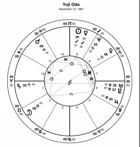
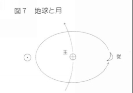

| 西洋占星術入門: 心理占星術への序章 | |
| 石塚隆一 | |
| (2014) | |
はじめに
西洋占星術は、象徴を利用しながらものごとを整理して考えていくための「道具」です。ホロスコープは一つの体系としてまとまりのある「ものさし」のようなものです。天体やサイン、ハウスなどの象徴の理解はものさしの目盛りを読めるようになることと同様ですが、私たちは測る対象についてしっかり意識し、理解を深めなければ、ものさしだけではあまり役に立たないかもしれません。
西洋占星術は、いろいろなものごとを対象に発達しています。金融市場の理解と結びつけて市場の動向を予測したり、気象の知識と結びつけて天気を予測する人々もいます。しかし、例えば金融市場の動向を予測するには、ホロスコープの「ものさし」を当てる前に金融市場の基本的な動きやそれに関連する要因を理解し、精通している必要があります。このテキストでは、占星術の基本的な考え方を学んでいきますが、「ものさし」を当てる対象を人間の個人的な心理を想定しています。したがって、占星術の知識だけでなく、人間の心理に関する知識が豊かになるほど理解が深まりますので、ぜひそうした方向にも興味の範囲を広げてください。
このテキストは、セレス学院・西洋占星術通信講座用として２００６年に制作したものに加筆修正を加えております。さまざまな占星術の応用の土台となる知識ですが、とくに心理占星術を学習していく上で適切な基礎知識を得られるよう心がけております。みなさんの占星術を考えるための知識の土台の一部になれば幸いです。
２０１４年１０月 石塚隆一
もくじ
西洋占星術入門
１２星座占いと本格的西洋占星術
獅子座は親分肌でプライドが高く、魚座はロマンチックで夢見勝ち．．．。テレビや雑誌などで扱われる１２星座占いは、すべての人々を誕生日により１２種類の星座に割り当て分類し、それぞれの性格や運勢を考えていきます。これは、本当は複雑で奥行きの深い西洋占星術を大衆向けに大まかに簡略化して、話題にはしやすいもののとても大ざっぱで表面的な側面のみを利用しています。地球は太陽の周りを一年に一周しているので、地球から見ると太陽は毎年同じ時期に同じ星座の中を運行していきます。このため、生まれた年が異なっても誕生日さえわかれば生まれた日に太陽が何座にあったかということを知ることができます（境目付近の日付の場合は生年月日と出生時刻から正確に計算する必要があります）。つまり、いわゆる誕生星座というのは、本格的な西洋占星術の視点に立てば、生まれたときに太陽という「天体」が双子座という「サイン（星座のこと）」にあったということのみを扱っているのです。本格的な西洋占星術では、これらの１２サイン（星座）に加え、天体は太陽を含め１０個、そのほかに１２の「ハウス」、５種類の「アスペクト」を基本的な要素として使い「ホロスコープ」という図を作って考えていきます。まずはこれらのひとつひとつの要素に慣れ親しんでいくことが大切です。それぞれの名前や記号を頻繁に眺めながら身近な友達のように「何を伝えたいのか？」と問いかけてみてください。最初はよくわからなくても次第にそれらの要素がいろいろなメッセージを伝えてくれるのを感じられるようになります。左は女優のメグ・ライアンさんのホロスコープです。占星術ではこのような「ホロスコープ」と呼ばれる図を利用します。また、同じ図のことを出生図、出生チャートなどと呼ぶこともあります。
解釈のしかたはこれからじっくり学んでいきますが、このような図からその人のさまざまな側面を考えていくのです。例えば、このホロスコープのてっぺん（ＭＣと呼ばれる場所で、お昼に太陽がある位置に対応し、職業や成し遂げたいことなどを表します）には金星（の記号）と海王星（の記号）があります。これは、多くの人々の理想を刺激する（海王星）美しさや美意識（金星）を看板に掲げたい（ＭＣ）という女優さんらしい衝動が読み取れます。少しの間、本文から目を離し、メグライアンのチャートをじっくり見てください。そして、チャート上の記号（との記号）や今説明した意味、それらがどの辺にあるかなどということを思い浮かべ、女優という人物像に結び付けてみてください（メグライアン本人を知らなくてもかまいません）。また、女優以外にも同じような意味の組みあわせの人物像をたくさん想像してみてください。
これは、ホロスコープから読み取れるもののほんの一部分です。ホロスコープにはこのようなかたちで、「天体」「サイン」「ハウス」「アスペクト」という４種類の「象徴」というものを通してさまざまな意味を伝え、その人のいろいろな側面をマンダラのように教えてくれるのです。１０個の天体が１２のサイン、そして、１２のハウスに入るので、１つの天体だけでも１４４通りあるものを１０天体分で、１４４ｘ１４４ｘ１４４ｘ．．．．想像しただけでも膨大な数に上っていくことがわかると思います。さらに、天体同士の関係性からも意味が生まれてくるので、これは単純にそれぞれのパターンを暗記して覚えていくには無理があります。つまり、象徴の一つ一つの意味をよく理解しながらそれらの組み合わせを「言葉を覚えていくように」身につけていくとよいのです。
ホロスコープの各部の名称（メグライアンさんのチャートの該当部分を強調しています）
では、メグライアンのチャートをもとにホロスコープのさまざまな部品の名前や記号を確かめていきましょう。
天体
円形の図の内側に生まれた瞬間の位置に対応して描かれているのが天体です。通常、太陽と月、太陽系の８つの惑星（地球は除きます）の合わせて１０個の天体を利用します。次の表により名前と記号を対応を覚えてください。また、図１の中にそれぞれがあるのを確かめてみてください。
天体は、ホロスコープの要素の中で唯一実際に動くものです。解釈の中ではとても重要です。詳しくは後にじっくり解説していきますが、それぞれの天体のイメージを次のように大まかにイメージしながら、名前と記号を対応させていってください。それぞれの天体を人間の心理の中のいろいろな部分と対応させていくとき、太陽は「自分らしさを表現し未来を切り開く力（意志）」、月は「過去の体験に基づき自分に必要なものを集めようとする欲求（感情）」、水星は知性やコミュニケーションの働き、金星は感性や他人を受け入れる働き、火星は行動力や主張力、木星は信念や向上心、土星は義務や責任感、天王星は常識を覆す力、海王星は夢や理想を意識する力、冥王星は根本的な目標を忍耐づよく追求する力などに対応します。今すぐ暗記する必要はありませんが、これらのイメージと天体の名前、記号をじっくり意識してみてください。そして、だんだんとすばやく思い出せるようにしましょう。名前と記号の対応だけでなく、イメージを思い描けるようになることが重要です。
次は１２のサインです。一般に「星座」とも呼ばれますが、いわゆる見た目の恒星のグループに名付けられた星座とは異なりますので「サイン」という呼び方に慣れてください。
サイン
図の中で強調されている部分がサインです。ホロスコープによってはサインの円を表示しない場合もあります。その場合、天体のすぐ横に度数の数字といっしょにサインの記号が書かれます。このテキストの例では、サインの円と（天体の横にある）サインと度数の両方が表示されています。
サインは３０度ずつ均等に並んでおり、並び順も決まっています。サインはハウスとともに天体の位置を測るものさしのようなもので、どのサインに入っているかということにより天体の働き方が変化します。サインはちょうど地球上の１年の四季の変化に対応し、草木が芽を出す春に対応する牡羊座、牡牛座､双子座（最後の双子座は夏との変わり目です）、最も暑く生命力が最高潮を迎える夏に対応する蟹座、獅子座、乙女座（乙女座は秋との変わり目です）、勢いが衰え、実が生り始める秋に対応する天秤座、さそり座、射手座（射手座は冬との変わり目です）、そして、次の春のために種になってエネルギーを貯える冬に対応する山羊座、水瓶座、魚座（魚座は春との変わり目です）というように規則正しく並んでいます。これらはそれぞれ天体（やその他の感受点）がどんな特徴を持っているかということを示すだけでなく、四季の移り変わりに象徴されるように、いろいろなプロセスの中のどのような段階にあるか、あるいは、どの段階に注目しやすいかなどということも示します。また、四季の移り変わりは地球全体（厳密には北あるいは南半球全体）で共通なので、意味の上では他人と共有できる一般的な体験のイメージを表します。
ではハウスについて考えてみましょう。
ハウス
この図では一番外側に数字が振ってあります（一番内側のものや番号の書かれていないものもあります）が、サインとは異なり円を不均等に区分しているのがハウスです。通常、ホロスコープの左側（９時の位置）から反時計回りに１ハウス、２ハウスと順に配置されます。ハウスは地上から見た方向に対応するということを意識し、ホロスコープを見ながら、１ハウスから順番に、どんな天体が下のほう（文字どおり地面の下方向になります）や上のほうにあるかを確認してみてください。
太陽が１年をかけて恒星の背景を少しずつ動いていく動きに対応するサインと対照的に、ハウスは太陽が１日に東の空に上ってから南中し、西に沈み地面の下をとおっていく動きに対応しています。東の地平線が１ハウスの始まり（カスプと呼ばれます）、真南が１０ハウスカスプ、西の地平線が７ハウスカスプ、そして真北（地面の下）が４ハウスカスプに対応します。一見、数字が反対方向に進んでいるようですが、生まれたときに１ハウスにあった天体はその後すぐに地平線から上昇してくる天体のグループ、２ハウスにあった天体はその次に地平線から上昇してくるグループ・・・として考えるとすんなり順番を理解できるかもしれませんね。サインの大きさは均等でしたがハウスは条件により大きなハウスや小さなハウスができます。また、サインに関連する四季の移り変わりは地球上で共通でしたが、ハウスに関連する１日の変化、つまり、昼や夜は地球上のそれぞれの位置で異なります。これは、実際の地球上では個人個人がいろいろなテーマについて異なる体験のしかたをすることに通じます。つまり、サインは誰でも共通する「一般的な体験のイメージ」、そして、ハウスはその人に独特な形で展開するような「人それぞれの実体験の場面や状況」を表します。
ホロスコープにおける重要な最後の部品はアスペクトです。
アスペクト
アスペクトは天体と天体が特別な角度を形成しているときに成立します。成立しているアスペクトは天体と天体を結ぶ線により示され、その上にアスペクトの種類の記号が描かれます。アスペクトの成立はそれぞれの天体の位置によるので、ホロスコープにより多いものも少ないものもあります。また、種類もどれが形成されるかはそれぞれのホロスコープにより大きく異なります。図の中のアスペクトの線に付いている記号がどの角度を示しているのか表で調べてみてください。また、それぞれの名前を確認してください。
いろいろなアスペクトが見つけられたでしょうか。コンジャンクションは天体が同じ場所に集まっている場合（０度）に成立するため線や記号は表されていません。つまり、金星と海王星、海王星と金星、水星と金星の組みあわせがコンジャンクションになります。この図の中ではオポジション（１８０度）やトライン（１２０度）の関係が成立している天体の組みあわせはありません。月と土星、太陽と天王星、火星と天王星はそれぞれスクエア（９０度）が成立しています。そして、冥王星と金星、冥王星と海王星、冥王星と水星、太陽と土星、火星と木星はそれぞれセクスタイル（６０度）が成立しています。天体の名前と記号にも慣れるようにこれらの一通りを図の中で指差しながら確認してみてください。アスペクトが成立している天体同士はある側面において「同時に働く」という特徴があります。つまり、両方の天体が関わる「物語」が進行していくわけです。そして、どんな物語になりやすいかということがアスペクトの種類により表されます。
基本的に覚えなければならないのはこの４種類、つまり、天体、サイン、ハウス、アスペクトだけです。これらのそれぞれのイメージをどれだけ深められるか、あるいは組みあわせながらリアルな状況に関連づけて認識できるかということが占星術の解釈の力になります。なお、このテキストでは、人々の心理においては動機の部分に強く関連する天体、サイン、アスペクトを重点的に考え、最後にそれらをハウスに関連づけながら、どの動機がどんな場面でどう表れてくるかということを解釈していきます。
「As above, so below」上の如く、下も然り
さて、そんな西洋占星術で何ができるのでしょうか。占いを行う人の中には、天のお告げとして未来の運命を聴くことを期待する人もいます。しかし、具体的な未来の運命は超能力でも備わってなければ知ることはできません。「先週出会った相手とは運命の赤い糸で結ばれているでしょうか」、「明日面接する仕事は将来の幸せを約束してくれるでしょうか」。あなたが、もし、すべての人々の気持ちを把握し、未来を見通すことのできる天の神様だとして、いろいろな人々がそんな占いの質問をしてきたとしたらどんな風に答えるでしょうか？「先週出会った彼」のほうは、彼女が自分の音楽の趣味を気に入ってくれたら深くつきあっていきたいと考えているかもしれません。「明日面接する会社」では、実務力は入社してからトレーニングするとして、この会社に骨をうずめようと思えるほどくじけない働く動機を持っていてほしいと考えているのがわかったとしましょう。たとえ超能力でそれらのことが分かったとして、面接で期待通りのことを言えばその後のすべてがうまく進むでしょうか。彼女は彼の趣味を理解することで幸せな関係をつくっていけるでしょうか。それらを知ることにより一時的にほんの少しものごとは進みやすくなるかもしれませんが、未来の成り行きには多くの要素が複合して関わってくるのですべてがうまくいくことにはなりません。もちろん、私たちは神様のように相手の心も見通すことができません。しかし、できないために「それさえわかればすべてはうまくいく」と感じてしまってはいないでしょうか。ひとつのポイントがわかったとしても次から次へと新たな質問が生まれてきます。具体的な質問の答えを得るよりも、おおまかな構図を認識しながらいろいろな場面に対応できる力をつけていくことのほうが長期的に見れば重要かもしれませんね。
占星術では神様のように直接一人一人の考えていることがわかるわけではありません。占星術では「上の如く、下も然り（As above, so below）」という原理が宇宙のすべてに働いていると考えています。このため、上、つまり、天体の動きをよく観察することで、下、つまり、地上でのできごとを分析することができると考えているのです。つまり、太陽系の天体の動きが「お手本」で、それがさまざまなかたちで地上のできごとに反映されていると考えます。そして、その対応を考えていくための道具が「天体」「サイン（星座）」「ハウス」「アスペクト」という４種類の象徴です。これらの象徴は、組み合わさって意味を伝えるので、一種の言語体系といっても構わないでしょう。こうした「言語」に慣れていくことにより、天体の位置を表した「ホロスコープ」を見ながらいろいろな星のメッセージを理解することができるようになるのです。このテキストでは、とくに人々が生まれたときの星配置をホロスコープにし（出生図あるいはネイタルチャートと呼びます）、それらから性格的な特徴を理解していくための知識を学んでいきます。そして、それにはすべての西洋占星術に通じる基本的な考え方が含まれますので、さらに深い学習の基礎にすることができます。
シンクロニシティ
占星術がなぜ働くかということは解明されていませんが、心理学者のユングが考えたシンクロニシティという概念を参考にすることができるかもしれません。シンクロニシティとは一見何の因果関係もないように見えることがらが別々の場所や状況において「意味の上で関係しながら」展開していくという概念です。この考え方はとくに（無意識も含む）心の中身の状態と外の世界で体験するできごとの関係という視点で考慮すると占星術に密接に関係してきます。例えば、いつも深い付き合いを望むと相手に別れを言い出されるというパターンに悩んでいる人がいたとします。このとき、その人は深く付き合うことに関してコンプレックスを抱えているかもしれません。そして、あるきっかけでそのコンプレックスが解消されると、次に出会った人は深い付き合いを望んでも別れを言い出さなかったかもしれません。このようなとき、内面の心理の変化（コンプレックス）と外の世界で体験するできごと（出会いや対人関係）には「意味の上での関係」があります。そして、このようなときに占星術の視点においても「同様の意味の変化」が見られるわけです。つまり、占星術ではこのようにして、天体の動きの「お手本」をいろいろな「意味」として解釈し、それらをもとに人間の内面の心理や外の世界で体験するできごとの間の関係を結び付け、整理し、理解し、参考にするのです。そして、このような「意味」を考えていく際に、西洋占星術ではメグライアンのチャートで見てきたきたような「天体」「サイン」「ハウス」「アスペクト」の４種類の象徴を利用するのです。
象徴について
占星術で使われる４種類の象徴のうち、「天体」は実際に空を動いている太陽や月、惑星に対応しますが、あとの「サイン」「ハウス」「アスペクト」は、それらの天体がどのような位置にあるかという異なる視点のものさしです。それぞれを異なる視点から測ることにより、全体的なイメージが生まれてきます。サインやハウス、アスペクトは、基本的には幾何学的な数の原理をもとに意味付けされていますので、それぞれの間にある程度の共通点があります。また、サイン、ハウス、アスペクトは、占星術独特な哲学に基づいて各天体との間に特定の関係をもつと考えられています。そして、それらの意味の組み合わせがたくさん集まり、全体のイメージを伝えているのです。それらの意味やイメージを日常のできごとや心理の動きとうまく結び付けることができるとホロスコープに示される天体の配置からメッセージを読みとっていくことができるのです。
人生は未来を作り出していく過程
少し具体的に空のお手本を地上の物事と結び付けてみましょう。地球から見ると天には星々の他に太陽と月という大きな光の源があります。太陽は未来を作り出すエネルギー、月は過去のパターンを維持する働きとして考えることができます（詳しい説明は後に出てきます）。天の様子の変化の大部分はこれらの２つの要素により進んでいきます。このことを人間の心理にも当てはめて考えてみましょう。人は過去に体験したことに基づいていろいろな感情的、習慣的な反応のパターンができます。生まれたばかりの赤ん坊は両親の行っている過去の生活習慣に支えられながらいろいろなものごとを体験していきます。具体的な体験を重ねるとともに次第に「物事はどのように進んでいくのか」というイメージができてきます。言葉や知性の働きを使うと、実際に体験していない事柄も体験したことから連想していくことができるようになります。このようにして自分の周りで物事がどのように進んでいくか、あるいは、生活がどのように進んでいくかということの理解は生きていくために基本的に重要です。これらのテーマが月の「過去のパターンを維持する働き」に関連づけられている個人の重要な側面の一つです。しかし、同じパターンを繰り返していくことは安定感や安心感を与えはしますが、基本的な部分が満足できると次第に飽きてきます。繰り返しのパターンは変化がなくモノトーンでつまらないと感じるようになります。人生は維持しているだけでは前に進んでいかないのです。太陽はパターンを維持することを含め、すべてのテーマを動かしていく源動力です。月のように「反射して光る」ということを「過去に行ったことを繰り返し利用する」という意味として考えると、太陽の光は月のみでなくすべての惑星から反射して地球に届いてきているので、いろいろなものを繰り返し利用するためのエネルギー源になっています。しかし、太陽の光はそれ以外にも地球に直接たくさん降り注いでいます。むしろ地球に降り注ぐ大部分のエネルギーが太陽から直接やってきているといっても過言ではないでしょう。地球上では太陽の光によりいろいろなものを同時にはっきりと識別することができ、過ごしやすいような気温にもなっています。朝になると太陽が昇り、街の中のいろいろな景色がはっきりと見えるようになります。これは、人の心理の働きの中で考えると、自分の過去のパターンも他人のパターンも同じように一度に見渡しながら未来の見通しを考える私たちの意識の働きに通じます。そこにいつもどおりの景色が展開されていれば安心し、平和を感じるし、街の中で事件が起こっていれば何らかの対処の工夫をします。こうして新しい体験が生まれ、少しずつ「未来」へ近づいていきます。私たちが悩むときにはいつも過去のパターンと未来の見通しを比べています。占星術を道具として利用すれば、過去のパターンを整理したり、未来の見通しをうまく定めたりすることが行いやすくなり、その過程の中で悩みを解決していくことができます。それができるようになるためには、まず、「天体」「サイン」「ハウス」「アスペクト」という占星術の言葉を理解していかなければなりません。
日常の言葉と象徴の違い
ホロスコープの伝える占星術の言葉（象徴）は私たちが日常使っている言葉とは少し異なります。私たちはあらゆる物事に名前をつけたり、いろいろな概念に言葉を対応させています。つまり、私たちが使っている言葉はとても具体的で表す対象が限定されているのです。しかし、占星術では限られた種類の象徴が世の中の様々なすべてのことに対応するので、一つ一つの象徴はあまり限定された意味を持っていないのです。占星術の象徴は、解釈を行う現場で、象徴を適用する状況に合わせていろいろな側面から具体的な条件をつけていって初めて私たちが日常使っている言葉と似たような意味が出てくるのです。言葉だけでなく、働いている様子をよくイメージしてくださいね。例えば、「過去の繰り返しのパターンを維持する」という働きのある月（もちろんこの言葉も月のすべての側面を表しきれているわけではありませんが）は、日常の心理では自分の心理的な安定を維持する「感情の働き」に関連づけることができます。これは、周囲との関係をという視点で考えれば、「身近な仲間や環境と気持ちを交流させる」という働きがあり、外に影響を与えるというよりも「周囲から影響を受け、いろいろな印象を感じる」ことに関連します。それぞれの視点でどのように「過去の繰り返しのパターンが維持」されているのかよくイメージしてください。このような感情の働きのパターンはとくに母親と密接に関わっている幼少時に形成されていきやすいです。したがって、月の働き自体「母親のイメージ」と結び付きやすい側面があります。ここで注意しなければならないことは、安易に月＝母親と同一視しないほうがよいということです。例えば、月が「おしゃべりな特徴（活発な水星や双子座などとの関連）」をもっていたとします。しかし、もしかすると、母親自身はあまりしゃべる人ではなく、たまたまその人を育てている期間に努めてよく話しかけるようにしていたかもしれません。そのおかげで本人は習性（月）として「よくしゃべる」という特徴を身につけたかもしれませんが、母親自身は一時的に努力していた特徴なので、普段はあまりそんな特徴が見られないかもしれません。さらに、「母親」という日常の言葉はそれに当たる人物をさして使うことが多いですが、占星術の月が関連するのは「過去の繰り返しのパターンを維持する」ことに通じる一般的な母親が行うようなことやそれを通してみにつけていく資質などをさすのです。占星術では、いろいろな象徴のイメージをつかむためにこの例の月に対する「母親」のようなキーワードをたくさん利用します。しかし、そのようなキーワードをそのまま暗記するのではなく、キーワードのどの部分がその象徴の特徴に結び付いているのかを意識しながら、象徴自体のイメージをしっかり作っていくことが大切です。
心の中のくせの自覚
「あの人は人のやることに文句ばかり言っている」とか「にこにこ人当たりはよいけど自分から働きかけてくれない」など、周囲を見渡すといろいろな特徴を持った人がいます。しかし、自分の特徴については特に若い頃はあまり自覚できていないことが多いでしょう。自分がこんなにがんばっているのになんで認められないのかと思うことがあるかもしれません。他人を見ているとどんなところが好かれ、あるいは嫌われやすいかよくわかりますが、自分のこととなると幼い頃から無意識にずっと行い続けているので自覚がないことばかりかもしれません。しかし、私たちはそのような体験のくせをつみ重ねながら自分らしい特徴や才能、目標などをつくってきているのです。それらのすべてを「自覚」する必要はありませんが、悩んだり方向を見失ったときには、占星術の象徴を利用して整理してみると、自分のスタンスをしっかり確認することができ自信を取り直したり、あるいは、無自覚に行なっていることが他人に対してどんな風に影響を与えていたのかということに気づき新たな成長の方向を自覚することができるかもしれません。このテキストでは、西洋占星術について、なるべく人々の日々の生活や人生を方向づけていく「心理の働き」という側面に結びつけながら考えていきます。
それでは、少しずつ「占星術の言葉」を理解していきましょう。よく１２星座占いで行われるような、誕生日ごと１２種類に分けるイメージは、占星術でわかることのほんの一部を大まかに扱っているだけです。しかし、占星術を勉強していく入門として１２のサイン（星座）のイメージに慣れることは助けになるかもしれません。
１２サインのテーマ
では、１２のサインのテーマを簡単にまとめてみましょう。どうしてそのようなテーマになるのかは、今後だんだんと学んでいきますが、まずは、それらのイメージに慣れてください。また、記号も一緒に載せますので少しずつ慣れていってください。
牡羊：思い立ったことをすぐに行動に移すこと。
牡牛：じっくり感覚で確かめながら、物質的な豊かさ味わうこと。
双子：さまざまな情報ややり方を試し、思考／技術力をつけること。
蟹：身近な人との気持ちのつながりを確保し日常生活の場をつくること。
獅子：自分の独特さを誇らしく表現すること。
乙女：他人のために具体的に役に立つこと。
天秤：相手の立場を理解し、お互いが平和に協力できる方法を見つけること。
蠍：相手の心を理解し、信頼関係を確立すること。
射手：世の中の全体像をつかみ、積極的に参加、扇動すること。
山羊：世の中に役立ち、社会的な責任を担い、集団を管理すること。
水瓶：人々が考えていることをまとめ、新たなシステムを考案すること。
魚：人々の夢や理想に合わせて動き、それをかなえること。
１２サインは黄道という３６０度の円という「全体」を１２分割したものなので、ある意味ですべてのものごとをこれらの１２のテーマに分類して考えていきます。このため、あまり細かい違いを判別するより、大まかな方向性がどんな特徴へ向かっているかという大ざっぱな概念を理解するようにしてください。この１２サインのイメージは今後いろいろな視点から深めていきますが、まずは典型的なテーマからそれぞれのサインのイメージを創ってみてください。
太陽のサイン
太陽は、光や熱のエネルギー源で外へ向けて光を放っています。生まれたときの太陽の位置は自分がそんな太陽のように輝くときに表れる特徴を物語ります。自分の誕生日から生まれたときの太陽のサイン（１２星座占いでいう星座）を調べ、そのサインのテーマがどのように意識されているか振り返ってみてください。ホロスコープでは、太陽はという記号で表されています。
[チャート２：みのもんた1944.08.22]
左のチャートは、みのもんたさんのものです。出生時刻が不明なので、数時間のずれが大きく影響してしまう「ハウス」は省略してあります。また、天体の位置も誤差がなるべく少ないよう正午の位置で計算しています。天体とサインの組み合わせでは、人々の内面の動機がどのように形成されやすいかということがわかります。そして、天体とハウスの組み合わせではさまざまな動機をどのような場面で具体的に認識したり、行動に移したりしやすいかということがわかります。つまり、ハウスのないサインのものさしだけのチャートでは、それぞれの動機をどんな場面で具体的に表す傾向があるかということに関して情報が少なくなります。しかし、それでも動機の方向がわかれば見えてくるものはたくさんあります。しばらくの間は、このようなハウスを省略した図を理解していく力をつけていきましょう。まずは、チャートの中から必要な情報を探し出す練習です。みのもんたさんのチャートの中から太陽の記号を探し出し、それがどのサインに入っているかを見つけてみましょう。見つかったら人物像を想いだし、その人らしく輝いているときの様子と見つけたサインのテーマを比べてみてください。また、下のチャートは小泉首相と松田聖子さんのものです。同様に太陽のサインを見つけ、その人らしく輝いているときの様子とサインのテーマを見比べてみてください。
[チャート３：小泉首相1942.01.08]
[チャート４：松田聖子1962.03.10]
太陽は、西洋占星術で利用する主要な１０天体のうちの一つに過ぎません。もっとも太陽は太陽系の中心であり、エネルギーの源ですのでとても重要な働きをしますが、それ一つだけが特徴をつくっているわけではありません。つまり、最終的にはさまざまな要素を組み合わせた全体像のイメージをつかまなければならないのです。その第一歩としてその人が輝こうとしている方向である太陽の特徴を考えてみましょう。象徴というものは、いろいろな角度から光をあてるといろいろな側面が見えてくるものなので、同じ象徴からさまざまなことが考えられますが、ここでは、まず、その人らしい特徴を表現したい方向やテーマとして考えてみてください。そのとき、本人の心理の中では「その方向が意識に上りやすい」「うまく輝けると誇らしさ、やりがいなどを感じる」「輝きが阻害されるとプライドが傷つく」などの特徴があります。それがサインのテーマと関連する感じをイメージしてみてください。
みのもんたさんの場合は、太陽は獅子座にあります。このため、みのもんたさんが活躍するときには、本人の独特さが誇らしく表現されている（テーマのリスト参照）ことが多く、それができているとみのもんたさんはやりがいを感じやすいことになります。また、それらが自己表現が阻害されるとプライドが傷つきやすいかもしれませんね。みなさんのみのもんたさんの印象はどうでしょうか。小泉首相の太陽は山羊座にあります。このため、小泉首相が活躍するときには、「世の中に役立ち、社会的な責任を担い、集団を管理する」テーマが意識されます。きちんと社会的な責任を負い、集団を管理することができると誇らしさややりがいを感じるでしょう。また、それがうまくいかないとプライドが傷つくかもしれません。小泉首相の中にそのような特徴が感じられるでしょうか。このような特徴は、その人の一番目立った特徴になっていなくても構いません。太陽の象徴に関連する働きが少し分かりにくいかたちで機能している人もいます。また、太陽はとくに青年期から中年期にかけて成熟して働き出すといわれているので、それまではそれほど特徴的に働いていない人もいるかもしれません。明確な特徴になっていないかもしれませんが、太陽は本人のやる気や生きる活力になったり、人生を前に進めていく際の重要なテーマになったりしますので、そんなふうに意識しながら、それぞれの人の中で働いている様子を想像してみてください。松田聖子さんの場合は、太陽は魚座にあります。このため、松田聖子さんが活躍するときには、「人々の夢や理想に合わせて動き、それをかなえる」というようなテーマが強く意識されています。彼女が歌手を目指したのもそのような意識を具体的に追求する舞台になりやすかったからかもしれませんね。歌やステージを通してうまく人々の夢や理想に対して働きかけることができると誇らしく思えたり、やりがいを感じたりするのでしょう。また、期待を裏切ったりイメージが思うようにつくられないとプライドが傷つくかもしれません。
組み合わせで意味がつくられていく
太陽の働きのイメージとサインのテーマのイメージをうまく組み合わせられたでしょうか。西洋占星術では、このようにそれぞれの象徴の意味を組み合わせながら全体像を組み立てていきます。はじめは面倒でもじっくりじっくりこのようなイメージを創りながら、なるべく実在の人物の中でどのように働いているかを観察しながら、これらのイメージを外国語を覚えるときの「単語」のように慣れ親しんでください。だんだんこのような単語と単語を結びつけながら「文」のような複合的なイメージをつくっていく段階に進んでいきます。まず、有名人や身近な人々の中で太陽がそれぞれのサインに入っている人を最低一人づつ見つけ、上で学んだようにそれぞれの人の中で１２サインのテーマがどのように働いているかを想像してみましょう。たくさん考えられれば考えられるほどイメージがすらすら出てくるようになると思います。実は外国語を覚えるのと同様、すらすらとイメージできる「単語」が多くなればなるほど、「文章」や「物語」にあたる人物像をイメージしやすくなるのです。
太陽と月
地球から見える天体の中で太陽の次に大きな光の源は月です。特に満月の夜などは月の天下です。明るい月が全天をリードしているかのようでしょう。しかし、月は大きくなったり小さくなったり、周期的に変化をしています。月の位置が太陽と重なり見えなくなるときは新月と呼ばれています。月は新月からだんだん大きくなり満月になって、今度は小さくなってきてもう一度新月になるまでの一周期は約２９日強かかります。一カ月はもともと月の周期が基準でした。このような太陽と月の位置関係によるサイクルは生命に大きな影響を与えています。西洋占星術でも、これらの２つの天体はとても重要視されています。大まかにいえば、太陽と月の２つの天体に関連する象徴が、その人の全体像をまとめあげていると言えます。ちょうど、電化製品がプラスとマイナスの間を流れる電気により機能しているのと同じように、太陽と月は生命活動の陰陽のエネルギーの源を象徴しているのです。太陽は、「他人や外へ向けてエネルギーを発すること」を象徴しているのに対し、月は、「周囲と関係を持ち、自分に必要なエネルギーを集めること」を象徴しています。ちょうど、生命が息を吸ったりはいたりしながら成り立っている様子を想像してください。
月のサインの意味を組み合わせる
ホロスコープの解釈は、「単語」を覚えるだけではなく、単語と単語を組み合わせて意味になる「文」を理解できるようになる必要があります。これには、それぞれの象徴の意味のほかに「文法」にあたるいろいろな決まりごとを理解していかなければなりません。西洋占星術の「文法」の多くは、天のお手本、つまり、太陽系の動きを観察することにより得られる法則がもとになっています。上に説明した太陽と月のサイクルの働きはそのような法則の一つです。では、この法則を利用して、少し深い解釈をしてみましょう。
[チャート５：タモリ1945.08.22]
左のチャートは、タモリさんのホロスコープです。まず、前に練習したように太陽のテーマを考えてみましょう。太陽は獅子座にありますので、「自分の独特さを誇らしく表現すること」を通して輝きます。では、月（の記号）を探してみましょう。タモリさんの月は水瓶座にあり、「人々が考えていることをまとめ、新たなシステムを考案すること」がテーマになっています。これらの２つのテーマをそのまま並べただけでは「文」としての解釈になりません。そこで、太陽と月の「呼吸」の作用を思い出します。人は、太陽のテーマを意識して「息をはく」、つまり、他人や社会に影響を与えます。そして、月のテーマを意識して「息を吸う」、つまり、自分のからだや生活、心理的なまとまりに必要なものを集め、吸収します。よく他人のために行ったことはよいことも悪いことも巡り巡って自分に返ってくるといいますが、そのような巡り巡る流れをポンプのように動かしているのが太陽と月なのです。タモリさんが自分を自分らしく保つために必要で周りから集めてくるものは、水瓶座の「たくさんの人々の考えを知り、みんなが知らないことを見つけたり、新しいやり方を考える」ことのできるような環境や人間関係、生活スタイルだったりするのですが、それを得るために獅子座の「自分自身の独特な表現」により他人や社会へ働きかけるというイメージになります。言葉を変えれば、型破りで未来指向の自分のあり方を守るために、周囲や社会へ自分の独特さをアピールしていく人物像が見えてきます。みなさんのタモリさんのイメージにあっているでしょうか。
太陽のサインと月のサイン
太陽と月のサインから「呼吸」の様子のイメージをつくるとき、月を主要な「欲求」の方向、太陽をものごとを動かし影響を与える「力」の方向としてイメージすると整理しやすいかもしれません。前に挙げた１２サインのテーマを少し改造して、１２サインそれぞれの「月の欲求」と「太陽の力」というかたちで意味を考え、組み合わせやすくしてみましょう。
月 太陽
牡羊 思い通りに行動したい。 動機を実行する力
牡牛 ありのままの実感を楽しみたい。 もともともっているものを洗練する力
双子 いろいろなことを知りたい。 情報交換し多様化させる力
蟹 心の安定を確保したい。 心の安定を作ろうとする力
獅子 他人に尊敬されたい。 注目を集める力
乙女 他人とって有能でありたい。 他人のために役立つ力
天秤 他人を楽しませたい。 他人の立場にたち人を惹きつける力
蠍 心理的にコントロールしたい 他人の動機を認識する力
射手 世界観を尊重されたい 多くの人々の世界観に影響する力
山羊 みんなで行う活動を仕切りたい 組織活動を管理する力
水瓶 みんなで考え集団を改善したい 組織・社会改革をすすめる力
魚 みんなといっしょに感じたい 人々の気持ちや雰囲気を読む力

これを利用すれば、太陽サインの「～の力」で月サインの「～したい」というフレーズができ、その人の大まかなテーマを簡潔に意識できます。それらを単純に覚えるのではなく、ぜひ、それらのキーワードを参考にしながら実際の人物の中で「呼吸」がどのように行われているかを分析してみてください。同じキーワードでも、人により実際の追求の仕方は実にさまざまです。いろいろな実際の人生の中でそれらの象徴がどんなふうに表れるのかということを知り合いや有名人のホロスコープを調べながらイメージできるようにしてください。では、いくつか練習してみましょう。チャートを見ながら太陽と月のサインを探し、上のような「呼吸」の様子を示す文を創ってみましょう。
[チャート６：織田裕二1967.12.13]
織田裕二さんの場合は、太陽が射手座で月が牡牛座です。すると、フレーズは、「多くの人々の世界観に影響する力」を利用して「ありのままの実感を楽しみたい」という具合になります。牡牛座はこれまで地球上で育まれてきた自然の力の豊かさを十分に実感して味わい大切に維持したいという方向性を持っています。月がこの場所にあると、周囲の生活環境や対人関係でのやりとりの中にこのような気持ちが充足されやすい状態を求めます。そして、織田裕二さんはそのような状態を確立していくために、射手座の太陽の「積極的な冒険を通して得た素晴らしい世界観を世の中の人々に広げていく力」を利用します。射手座の太陽は、楽観的でより広い世界を知るために冒険を好んで行いますが、牡牛座はあまり変化を好みません。ありのままの世界を見回りながらそのよいところを伸ばしていくように働きかけるようなイメージができます。そんな生命力の循環の特徴を俳優という具体的な活動に活かしているのでしょうね。太陽と月の特徴は、目の前の作業に取り組む様子から人生全体の設計までさまざまな側面の背景に影響していると考えられます。織田裕二さんの物腰の中に、さまざまな活躍の様子の中に太陽と月の特徴を感じてみてください。
[チャート７：黒木瞳1960.10.05]
黒木瞳さんの場合は、太陽が天秤座で月が牡羊座です。すると、フレーズは、「他人の立場にたち人を惹きつける力」を利用して「思い通りに行動したい」欲求を満たしていくということになります。牡羊座は１２サインの最初のサインなので、まず、思った通りに行動するということがテーマになります。ここに月があると、思った通りに行動できるような生活環境や人とのつながりのあり方を求めます。そのような状態にないと不安になったり、充実感が得られにくくなるでしょう。どんなことを「思い通り」にしたいのかは、直観やそれまでの体験の中で総合的に育まれたものです。そうしてできたテーマの中で感じるままに動くことができるようにするために、天秤座の太陽の「他人を引きつける魅力」の力を利用していきます。太陽はその人が輝くときの輝き方であり、その人にとって意識が向きやすいテーマであり、うまく他人に対して影響力を発揮すると誇らしく感じられるものです。その誇りを求める意志が人生を進めていくのです。有名になられた方は、何らかのかたちでしっかり太陽を輝かせることができていると考えることができます。
どんなふうに外の世界に働きかけ、積極的な人生の展開を作り出し（太陽）、どんなふうに周囲の世界とつながり、受け入れ、必要なものを集め、生活を成り立たせるか（月）という生命力の基本的な流れを表すこの「呼吸」の特徴は、必ずしもその人の明確な特徴として表れているわけではありません。しかし、この流れがうまく循環すればその人らしく生き生きと存在することができるようになります。西洋占星術のホロスコープを解釈するときのひとつの目標として、このようなその人の生命力の流れの特徴をよく認識し、後に学習していく具体的な活動テーマを通してどううまく循環させていったらよいかということを考えるとよいでしょう。もちろん、答えは一つではありません。いろいろな可能性を考えるようにしましょう。この段階では、まだ、具体的なテーマは見えてきていませんが、太陽と月の組み合わせを、何らかのテーマに取り組むための「エネルギー源」を維持している循環として分析してみてください。
解釈は少しずつ詳しく少しずつ部品を増やして
さて、これらのイメージは、太陽や月、そして、各サインに関する知識が増すとよりさまざまな情報を得ることができます。例えば、太陽や月は父親や母親を象徴します。すると、太陽のサインの特徴は、ある意味で父親の影響により開拓された特徴になっている可能性もあります。もちろん、誰でも必ず父親を通して太陽を体験するわけではありません。輝き方を、父親ではなく他の誇らしい人物の影響として体験することもあるでしょう。そして、次第に自分がしっかり影響力を発揮し輝くことを誇らしく思えるようになり、何かを成し遂げようとする意志の力を学びます。また、月に関しては、リラックスして甘えることができる安心感を母親から学び、他人に対して甘えさせたり面倒を見ることの重要さを学び、自然な人間関係をつくったり、家族など親密な関係をつくる力をつけていくことなどにも関連します。それらが日常の感情の安定をつくりだすのです。このように、太陽や月に関することがらをより詳しく学べば学ぶほど深い解釈ができるようになっていきます。ただ、気をつけなくてはならないことは、特定のポイント（太陽なら太陽）だけを詳しく追求し過ぎてもその人の全体像にあまり近づかないこともあるので、なるべくいろいろな要素をまんべんなく眺めていきながら少しずつ深めていく必要があります。このコースでは、理解に合わせて少しずつそれぞれの要素の解釈を深めていくとともに、新たな要素も少しずつ加えていきながらポイントを見失わずに理解を深められるように構成しています。
太陽系について
天のお手本について、もう少し理解を深めましょう。現在私たちが生活している地球は、太陽系という「一つのシステム」の中にあります。この太陽を中心にいろいろな惑星という部品が回りながら一つの全体をつくっているということがとても重要なことです。私たちは太陽系という「たくさんの要素が集まった一つの全体」のお手本を地上の現象の中のものと対応づけて観察しようとしているのです。もちろん、地上のほうは「個人」といういろいろな部分の集まった全体を考えています（西洋占星術では個人だけでなく会社や国家などを一つの全体としてとらえ、考えていくこともできます）。地球から見ると、肉眼では土星までの惑星が見えます。そして、望遠鏡を使い、現代の人類の科学を結集させると冥王星までの惑星の動きを把握することができています。つまり、いつでも意識の中に入ってこれる顕在意識的な範囲でのまとまりのもっとも遠いところを土星が定義しており、無意識を含め関わる範囲の限界を冥王星が示していると考えることができます。つまり、これらの天体は個人というまとまりの中で光を届ける限界、あるいは、最遠の目標と考えてもよいでしょう。現代の科学の視点では、太陽系は、太陽を中心にいろいろな要素が回るシステムで、肉眼では土星まで、望遠鏡などの道具を使えば冥王星まで把握できているものなのです。
体験の場としての地球
太陽系が、太陽の光により土星や冥王星までの構造を照らし出す（そして、他の恒星とともに銀河の中で輝く）システムだということがわかりました。私たちはそのような太陽の働きを地球上で体験しています。地球も、また、惑星の一つなので太陽の周りを回っています。中心と周囲を回るものを主従関係にたとえれば、太陽が「主」、地球が「従」の関係です。それでも地球から見ると太陽は一年かけて地球の周りを回っているように見えます。太陽の背景の星座が牡羊、牡牛、双子．．．（実際には夜空の星座と占星術で使うサインは異なります）と移り変わるとともに季節が春、夏、秋、冬と循環します。体験の現場である地球上では、太陽という源のエネルギーは、季節により質が変化するように感じられます。
さて、今度は月について考えてみましょう。月は地球の衛星なので、地球の周りを回っています。今度は地球が主従関係の「主」になり「従」である月が反射した光で地球を照らしています。それは、あたかも地球の体験を守り温めているようです。このことが、意識的に未来を創り出す太陽と過去の体験を文化として温め再利用する月の象徴につながっているのです。この体験の場としての「地球」は、直接ホロスコープ上の天体としては表れてきませんが、そもそも「ハウス」自体（とくにアセンダントやＭＣと呼ばれるポイントが重要な働きをします）が地球上の体験のいろいろな側面を象徴しています（ハウスについては後ほど詳しく勉強します）。１２のハウスの働きは、後に詳しく勉強していくとして、ここではその代表として１ハウスの出発点であるアセンダントを解釈に加えてみましょう。太陽と月の基本的なエネルギーの循環が、このアセンダントを通してどのように地上に現れ、具体化／行動化していくのだろうということを考えながらイメージしてみてくださいね。
アセンダントの解釈を加える
では、実際に解釈の練習をしてみましょう。ここでは、アセンダントのサインの意味を「行動に表し方」というかたちに解釈し、太陽と月の解釈に加えてみましょう。３つの要素を混ぜ合わせることで、父母（太陽と月）から子が生まれ育っていく様子をおぼろげながら想像できるようになります。では、チャートを見ながら考えてみましょう。
メグライアンさんの太陽は蠍座、月は牡羊座です。「他人の動機を認識する力」で「思い通りに行動したい」欲求を満たしていくという基本的なエネルギーの循環の特徴をもっています。対象となる相手は、この場合、演じる役柄や観衆の心理かもしれませんね。思いつくまま行動しながら、うまく状況や期待される心理に応え、相手の気持ちを動かすような特徴があります。さて、このような基本的なエネルギーの循環の様子がメグライアンさんという特定の人格像を通して地上に現れるとき、最初の印象はどんなものになるでしょうか。アセンダントは、その人の第一印象やその人らしい活動をするときに最初にどんなところから取り掛かるか、つまり、象徴的な「生まれ方」を表しているのです。
チャートの中からアセンダントを探してみましょう。ホロスコープは、天体の描かれているエリアが線により１２に分けられています。これらの一つ一つは「ハウス」と呼ばれており、１から１２の番号がついています。通常、アセンダントは、ホロスコープの左側の真ん中あたりの位置に描かれます。左真ん中から下へ向かったエリアが１ハウス、そして、反時計回りに２ハウス、３ハウスと続いていき、最後に左真ん中から上へ向かった位置にあるエリアが１２ハウスになります。そして、１２ハウスと１ハウスの境に書かれている線（ハウスの始まりの点をカスプと呼びます）の場所がアセンダントです。その線は、何のサインになっているでしょうか（たいてい、外側の円が太く描かれ１２等分されサインの記号が描かれています）。メグライアンさんの場合は、アセンダントは山羊座です。の記号が見つかりましたか。
山羊座は、「世の中に役立ち、社会的な責任を担い、集団を管理すること」というテーマをもっています。アセンダントが山羊座にあると、目の前のものごとに取り掛かるとき、まず、きちんと役に立っているだろうか、社会的に機能しているだろうか、あるいは、責任を果たし多くの人をある目的にしたがって動かすことができているだろうか、仕切り統率することができているだろうかということを気にしたような行動を反射的にとりやすいという特徴として表れやすいです。この行動の特徴を、「他人の動機を認識する力」で「思い通りに行動したい」欲求を満たしていくという動機の特徴と混ぜ合わせてイメージをつくってみましょう。例えば、「思い通りに行動したい」という欲求を「社会的な責任をになうこと」を意識した行動をしながら追求することには難しさがあるかもしれませんね。責任を担うことは、自由を失うことにつながりやすいからです。しかし、ものごとはそんなに単純ではありません。アセンダントは、単にものごとに取り掛かるときの特徴ですから、メグライアンさんは少なくとも「思い通りの行動をしたい」という欲求をそのまま行動に移す人ではないことがわかります。では、どんなふうにそれを充足していくのでしょうか。ホロスコープは、いろいろなかたちでそれを示していきます。それを理解するには、もう少し詳しい知識も必要になります。この段階では、実際の生きた人物像の中でこれらの欲求や能力、行動かの特徴の違いがどのような特徴や葛藤のテーマにつながっていくかについていろいろ想像してみてください。一方で、より奥深い理解の基礎になる１０天体、１２サイン、１２ハウスの知識を少しずつ深めていきましょう。
「個人的」な天体
太陽系の中で、太陽、月、地球がどんな関係になっているかということや、それらがホロスコープ上での太陽、月、アセンダント（そして１２のハウス）の象徴に反映されているということがわかりました。太陽系には、まだまだたくさんの天体があります。それらについて理解を深めていきましょう。太陽系では、地球の軌道より内側に金星と水星があります。また、地球の外側のとなりには火星があります。太陽と月に加え、水星、金星、火星までの天体を「個人的」な天体と呼びます。ホロスコープ上では、これらの天体は、本人が自分の一部として動かしていると感じやすい部分に対応します。水星は、動きや変化を認識し、分析したり、考えたり、言葉を使ってコミュニケーションをとったりする働きをします。金星は、他人に近づき、協力したり、理解したり、美意識を培ったり、魅力を発揮して人を引きつけたりする働きがあります。火星は、内面の動機を行動に移したり、焦点をしぼり主張したり、自分の存在／活動スペースを確保するために戦ったりする働きがあります。これらの３つの惑星は、太陽と月の「基本的な生命力の循環」の流れを具体的に動かしていくための「知性（水星）」、「価値観（金星）」、「行動力（火星）」という道具になります。これらの天体がどのような動機やテーマをもち、どんな風に動くかということを、天体が入るサインから解釈しイメージを深めてみましょう。
[チャート：タモリ1945.08.22]
タモリさんの太陽は獅子座、月は水瓶座なので、「注目を集める力」で「みんなで考え集団を改善したい」という欲求を満たそうという基本的なエネルギーの循環をもっています。そして、その循環を獅子座の水星、蟹座の金星、双子座の火星という道具を使って実現していこうとします。それぞれのサインのテーマを考え、知性（水星）、価値観（金星）、行動力（火星）はどんな特徴をもっているかをイメージしてください。また、それらの道具は基本的なエネルギーの循環の中でどんなふうに機能するか組み合わせながらイメージしてください。
獅子座の水星は、独特なものを創り出す力をもった知性やドラマティックな会話表現力、個性表現のための技能のようなイメージになります。蟹座の金星は、家族や身近な人々との心の交流を活発にすることを好んだり、文化の活性化を手段として選びやすい価値観をもっているイメージです。双子座の火星は、行動力にいろいろなバリエーションがあり、ものしりやアイデアの応用力を使いながら目の前の作業をこなしていくイメージです。このような知性、価値観、行動力を利用しながら、エネルギーの源である「独特さで注目を集める」力を具体的に活用しながら、「みんなで考え、集団を改善したい」という動機を実現しようとしているのですね。このような特徴が、タモリさんのいろいろな活動の中に表れているのではないでしょうか。
考慮する天体の数を増やせば、太陽と月の特徴だけで考えているときよりもより細かい特徴が洞察できるようになります。しかし、このとき、ぜひ、ひとつひとつのイメージをばらばらに想像するだけでなく、一人の人間の特徴として組み合ったときにどんなユニークさ、あるいは、葛藤などにつながるかということをいろいろな視点から想像してみて欲しいのです。太陽と月は、人生設計や生活の繰り返しというかたちで長期的に実現したい状態のようなかたちで意識されます。それに対して火星や金星は目の前の環境で一時的な満足や楽しみをどのようなかたちで得るかという側面を表します。つまり、火星と金星の間で起こる個々の活動や欲求表現がたくさん行いながら全体的に太陽と月の長期的な動機の流れ＝基本的なエネルギーの循環を成立させていくのです。
タモリさんは、個々の場面では身近な人々との気持ちの交流（蟹）を楽しむ（金星）ためにものしりやアイデア（双子）を打ち出す力（火星）を使った行動をとりますが、それらを通して長期的には、個性のユニークさを表現する力（獅子）で自分らしさを打ち出し（太陽）、社会の人々が考えを変え集団が向くべき方向を考えたい（水瓶）日々の関心ごとを満足させていきたいのでしょう。それぞれの要素が混ざっていくとどんな様子が浮かぶでしょうか。
例えば、ものしりやアイデアを打ち出す行動力は、学校の先生や雑誌の編集などにも利用できるかもしれません。しかし、それを行いながら長期的にキャラクターのユニークさを打ち出すことにやりがいや生きがいを感じやすい獅子座の太陽はどのように満足させるでしょうか。もちろん、名物教師になったり、キャラクターが存在感になる雑誌記者になっても両立できるかもしれませんね。では、目の前の環境では身近な人々と慣れ親しんだ当たり前のことをすること（蟹）を通して楽しさを感じています（金星）が、水瓶座の月の変わったことをして人々に社会の新しい方向を気づかせたくなる欲求は長期的にどのように満たすのでしょうか。みんなが共感できるようなこと（蟹）を、脈絡もなくはっと気づかせるかたちで提示（水瓶）してみたらどうでしょうか。それらをものしりや言語を使ったかたちで打ち出したり（双子の火星）、独特なキャラクターをつくりあげていったり（獅子座の太陽）、タモリさんがタモリさんの特徴を生きているのはいろいろな方向性を持った衝動が「混ざりあった」結果なのです。このように、ホロスコープを解釈していくときには、ぜひ、それぞれの要素を単独に評価するのでなく、「どのように混ざっていくか」ということに注目してください。一つ一つの要素（天体）をイメージするのは比較的簡単ですが、混ざり合う様子はその人がそれぞれの要素をどう実際に体験し、感じ、行動化していくかにより変わってきますので、具体的なことを「言い当てる」のは難しいですが、悩んでいる際に「どの部分の欲求がうまく充足できていないか」を分析し、振り返ることは解決のヒントになるのではないでしょうか。
１２サインの意味をより深く考える
ホロスコープを解釈する上で、それぞれの要素（天体）の特徴が混ざり合っていく様子を把握することがとても重要だということがわかりました。この混ざり合っていく様子を整理して把握するために「ものさし」についてしっかり理解していく必要があります。ここでは、ものさしの一つである１２サインについて、以前に覚えたそれぞれのテーマだけでなく、なぜそのようなテーマが生まれてくるのかということを考えていきましょう。ものさしの意味は、第一に幾何学的な配置の特徴から出てきます。しかし、それらは長い人類（あるいは生命）の歴史の中で次第に経験的な要素に深く結びついていきます。
春分点について
１２サインは、太陽の通り道である黄道を春分点を起点にして３０度ずつ１２等分したものです。以前１３星座という占いがはやったことがありますが、それらは「春分点を起点にしていない」ということと「１２等分していない」という２つの側面においてしっかりした「ものさし」の役割を果たしません。どうして、春分点と等分が重要なのでしょうか。春分点は、地球が一年かけて太陽の周りを回る公転の円と地球が一日かけて自転している円が交差する点の一つです。つまり、象徴として考えれば、春分点は「太陽系の組織の中に属している」側面と「一つの独自の存在である」側面が交差しているわけです。さて、春分の日には昼の長さと夜の長さが一緒になります。春分の日以降、夏至までは、北半球ではどんどん昼の長さが長くなっていき、夏至で最長になります。この時期、太陽はもっとも高い位置まで上がります。夏至を過ぎると昼はだんだん短くなり、秋分にまた、昼と夜の長さが同じになります。つまり、春分は（北半球では）昼のエネルギーが強まり始めるポイントなのです。反対に、秋分は昼のエネルギーが夜のエネルギーが強まりはじめます。そして、冬至に夜が一番長くなるという一年のサイクルがあります。このように、春分は「一年を通しての季節的な変化」の基準になっています。南半球では、北半球とは季節が反対になっています。地球上の地域によって具体的な季節の様子は異なりますが、バランス＞極まり＞バランス＞極まりというリズムは地球全体で同時に起こっています。１２サインは、春分点を起点にして、このようなバランスと極まりを繰り返す一年のサイクルがどこまで進んでいるかということを示す「ものさし」なのです。
さて、いろいろ複雑な話がでてきましたが、ここで象徴として意味を考える上で重要なのは、サインは「地球上で共通」な変化の位相を測っているということです（立場が違えば受け取り方が変わるということはあります）。共通ということは、他人と共感しやすいということです。地球上に生まれた生命は、ある意味でみんなお腹が減ったとき、エネルギーが少ないときには弱く不満を感じ、エネルギーが増えると強く、充実してきます。サインは、そんな基本的な感覚や他人と共感しやすいイメージに関連します。これは、ハウスの象徴と区別するときに大変重要なポイントです。ハウスは、天体が働く実際の場面や状況設定を象徴しますが、サインは天体が働く動機や目的意識を象徴します。つまり、サインに示される「共通概念」がハウスで示される「個々の現場」でどのように働き変化していくかという２種類のものさしを使っていると考えられるのです。
エレメントの理解
まずは、サインというものさしの理解を深めていきましょう。サインは、１２種類ありますが、その特徴をいくつかの視点から分類することができます。第一に、サインは火、地、風、水の４種類のエレメント（元素）に分類できます。
火：燃える火のように、何か新たなものを作り出すエネルギー
地：大地や土のように、固まり、安定して存在し、実感として確かめられるもの
風：野を吹く風のように、目に見えないが、ものの動きを起こし、変化を導くもの
水：海や川の水のように、さまざまなものを溶かし込み、一体化させ、柔らかくするもの
ギリシャの哲学者は、この宇宙のものは、すべてこれらの４つの基本的な性質のものの組み合わせにより成り立っていると考えました。サインのエレメントは、それらのサインが存在のどのような側面や性質に注目するかということを表します。そのような性質を重視したり、求めたり、利用したりします。これらが、人間の心理のさまざまな部分（天体）に関連するときには、次のように考えてもよいでしょう。
火：元気ややる気、自分から動きをつくり、周囲に認めさせたい欲求
地：現実を味わい、体感し、ものごとを実際的に進めたり、管理したい欲求
風：ものごとを観察し、比較、分析、考察して、法則を理解し応用したい欲求
水：感情の動きを感じ、共感、交流し、一体感や安心感をつくりだしたい欲求
さて、それでは１２のそれぞれのサインがどのグループに入るか振り分けていきます。牡羊座から順番に規則的に振り分けられていますので、サインの順番や規則性などにも少しずつ慣れてください。まずは、サインを順番に並べてみます。
牡羊、牡牛、双子、蟹、獅子、乙女、天秤、蠍、射手、山羊、水瓶、魚
では、各エレメントに分類されるサインを並べていきます。前に学習したサインのテーマと今回のエレメントの方向性を比較しながら意味をより深く考えてみてください。
火：牡羊、獅子、射手 ＞ 図１１ 地：牡牛、乙女、山羊 ＞ 図１２
風：双子、天秤、水瓶 ＞ 図１３ 水：蟹、蠍、魚 ＞ 図１４
例えば、牡羊座のテーマは、「思い立ったことをすぐに行動に移すこと」でした。牡羊座は「火」のエレメントなので、獅子座や射手座と同様「元気ややる気、自分から動きをつくり、周囲に認めさせたい欲求」が意識されています。「思い立ったことをすぐに行動に移す」というテーマには、自分から動きをつくりたい衝動や元気、やる気、周囲に認めさせたい欲求なども働いていることに注目しましょう。また、獅子の「自分の独特さを誇らしく表現すること」や射手座の「世の中の全体像をつかみ、積極的に参加、扇動すること」などのテーマにも、同じ火の「元気ややる気、自分から動きをつくり、周囲に認めさせたい欲求」が意識されていることをよくイメージしてください。また、火のエレメントだけでなく、他の地や風、水のエレメントについても同様にサインのテーマとエレメントのテーマを比べながらイメージを深めてください。
同じエレメントに属する３つのサイン同士の間では、重要視するものが共通しているのでお互いを理解し合い、協力することをスムーズに行うことができます。これらのサインの間では、お互いに親和性があり、同類のような感覚を感じるでしょう。
４つのエレメントは、次の３つの視点において、共通の特徴を持つ２つずつのペアに分けることができます。
１．陰と陽（コールドとホット）
陽：火と風のエレメントは、新たな展開をつくっていこうとします。
陰：地と水のエレメントは、これまでの展開を維持し充実させようとします。
２．発生と循環（ドライとモイスト）
発生：火と地のエレメントは、純粋な価値の発生や単純な直接的な体験に注目します。
循環：風と水のエレメントは、価値や感情の循環や混合、変遷に注目が向きます。
３．精神と物質（波動と粒子）
精神：火と水のエレメントは、精神の高まりや感情など心理的な側面に注目します。
物質：地と風のエレメントは、ものの感触や効果その動きの法則など物質的な側面に注目します。
各エレメントの特徴は、このような３つの側面を合わせれば見えてきます。さらに、これにより他のエレメントとの関係性もはっきりしてきます。
例えば、火のエレメントは、心理的なものに注目し、単純で直接的な価値の発生にかかわり、新たな展開を作っていく方向性を持っているという具合です。水のエレメントも心理的なものに注目しますが、新たな展開は期待せず、これまでの体験のよいところを守ろうとします。
これらの３つの視点は、エレメントの理解を深めるために利用してください。実際の解釈のときに、いろいろイメージを広げるためにこれらのポイントを考えてみてください。例えば、水星が蠍座にある場合を考えてみましょう（蟹座でも魚座でもエレメントを考える分には同じですが、実際の人物の配置を見つけて具体的に想像してみてくださいね）。蠍座は、水のエレメントなので、観察し考える対象が心理的な側面になりやすいでしょう。いくら儲かるとか、ある携帯電話は便利だということより、今日はＢさんは楽しそうだったとか、最近すでにあるいろいろな気持ちがどう循環して働いているかということを分析したり理解したりしやすいでしょう。頭脳（水星）は、「感情の動きを感じ、共感、交流し、一体感や安心感をつくりだしたい」動機をもって働いているのです。このようにしていろいろな方向に想像を広げていくことができます。
エレメントと領域を組み合わせる
個々のエレメントの特徴とともに、「領域」という概念と組み合わせることで理解はさらに深まります。領域とは、ここでは１２サインを牡羊から蟹、獅子から蠍、射手から魚の３つのエリアに分けて、それらの方向性を考える視点です。私はそれぞれの領域に自、互、公と名付けて意味を考える助けにしています（「サインの領域」図参照）。自の領域にあるサインは、そのエレメントの動機を「まず自分自身で理解し、使い慣れる」という方向性を持ちます。互の領域にあるサインは、エレメントの動機を「他人とのやり取りの中で効果を確認し、利用価値を学ぶ」方向性を持ちます。そして、公の領域では、エレメントの動機を「自分と他人の区別を外し、一緒に追求していく意義や効果を追求する」方向性を持ちます。
これらの領域とエレメントの意味を複合することで、サインごとのテーマが明確になります。例えば、火のエレメントの場合、自の領域にある牡羊は、「新しいものを創り出す」という火のテーマを「まずは自分でやってみる」という自の領域の方向で進めようとします。互の領域にある獅子の場合、創り出した新しいものを相手や対象に働きかけて（互）確かめようとします。公の領域にある射手の場合は、組織や社会で一緒に新しいものを創っていこうとします。あるいは、新しいものを求めてより広い世界（公）へ冒険に行くかもしれませんね。水のサインの場合、気持ちの交流（水）をもともと価値観や文化を共有している家族や仲間と深めたり（自の領域の蟹）、見ず知らずの他人の気持ちを理解し変容を進めたり（互の領域の蠍）、より広い世界や宇宙全体と気持ちの共有を進めようとしたり（公の領域の魚）するかもしれません。こうして意味のベースになっている概念を理解することにより、分析を深めたり、さまざまな実際の状況に当てはめやすくなるのです。
モードの理解
１２サインは、エレメントの他に、モードと呼ばれる視点で分類することができます。エレメントは注目する対象や取り上げ利用するものの性質的な側面を物語りました。モードは、それらをどのように動かしていくかという側面、動きのリズムやテンポ、スタイルなどを表します。エレメントは、４種類ありましたが、モードは３種類です。
活動：エレメントの価値観を実際に動かし活性化します。動きは早く活発に作業を進め、それぞれの焦点は定まっていますが、うまくいかなければすぐ次の対象へと移る潔さもあります。
不動：動かした結果を反省し、じっくり最適な状態になるように洗練していきます。動きはじっくりと時間をかけ、焦点は定まっており、対象も一定で頑固に追求していきます。間違っていたと気がついてもなかなか変化できないかもしれません。
柔軟：エレメントの価値観を状況に合わせて変化させ、応用力をつけ、浸透させる準備をします。テンポは、早くなったり遅くなったり安定しません。また、焦点も定めず、対象も変化しやすいです。理解力や応用力はありますが、芯がない印象を与えるかもしれません。
これらの動き方の特徴（モード）には、４つずつのサインが分類されます。エレメントのときと同様、規則的に並んでいますので、どんな順番に並んでいるかに注目してください。
活動：牡羊、蟹、天秤、山羊 ＞ 図１６
不動：牡牛、獅子、蠍、水瓶 ＞ 図１７
柔軟：双子、乙女、射手、魚 ＞ 図１８
４つのエレメントと３つのモードの特徴を組み合わせれば、３ｘ４＝１２のすべてのサインの特徴を区別して認識することができます。また、サインを解釈する際に性質（エレメント）と動き方（モード）の２つの視点を別々に意識すると理解が深まる部分があります。例えば、月が活動モードのサインにあると、感情の変化のテンポが早くなります。不動モードでは感情はゆっくり変化します。あるいは、水星が地のエレメントのサインにあると知性や頭脳は心地好い／悪い、できる／できない、役に立つ／立たないなど、ものごとの実際的な側面に注目し、見分けるように働きますが、火のエレメントのサインにあると実現したいとか、楽しそうとか、やってやるぞなど自分の中の何かを作り出そうという積極的な気持ちの働きに注目し、それに影響のある情報を集めたり伝えたりします。このように、グループごとに注目すると、サインのシンプルな側面について考えることができるので、イメージのポイントを意識したり、他のサインとの違いを比較しやすくなります。
「社会的」な天体
ホロスコープには、個人を表す天体のほかに、その個人が属する集団の価値観や動機を実現する機能を表す天体もあります。月、水星、金星、太陽、火星が個人の動機を動かす働きをするのに対し、木星、土星、天王星、海王星、冥王星は集団で行っているものごとを方向づけたり、規定したり、動かしたりする働きがあります。ある意味で、人間の成長というのは、だんだん自分だけの利益で動くことから、集団の利益に基づいて動けるようになることへ理解が進んでいくことなのかもしれません。そして、これらの社会的な天体はそのようなテーマを理解し身につけていく上で重要な働きをします。土星や冥王星は、それぞれ、「肉眼で見える限界」や「（今のところ）道具などを使い認識される限界」になっています。つまり、これらは太陽が光を届ける「目標」と考えてもよいかもしれません。つまり、これらの５つの社会天体は、成長していく目標やそこへたどりつく過程を助け促す機能があるのです。とくに、木星と土星は、そのときどきの実際の世の中の動きやルールに合わせて活動できるようにする働きがあり、天王星、海王星、冥王星はより深く個人的な目標に関わるかもしれません（天王星、海王星、冥王星の働きを理解するには集合無意識という少し複雑な概念を理解する必要があります）。
一つ一つの特徴を簡単に説明しましょう。木星と土星は、一般的な社会での活動やそのルールを理解し、それに参加させるために働きます。一人前に「育てる」機能があります。育てる働きには「アメ」と「ムチ」の両側面があります。報酬を与え可能性を広げる「アメ」方式で育てるのが木星です。罰を与え責任を遂行させる「ムチ」方式で育てるのが土星です。土星は厳しいですが、その次元で動けるようになると実際に役に立っている実感があり、安定して存在している感覚がでてきます。天王星、海王星、冥王星は社会的な活動や価値観の中に、多くの人が共有する動機を反映させていく働きがあります。これらの天体が関連するテーマは、通常は普段の社会活動では実現しにくいものとして心の奥へ押し込められる傾向があります。しかし、ときどき無意識のそれぞれの側面が刺激され、意識的に社会活動を行っている部分の軌道修整をするようなかたちで働くことが多いです。天王星は、多くの人々が共有している情報や理屈に敏感に反応します。普段とは異なる常識を外れた行動をとってみながら、ルールや習慣にとらわれないそのときにもっとも重要視されているものを見つけていこうとします。海王星は多くの人々が共有している夢や理想、気持ちに敏感に反応します。他人や場の雰囲気を感じとりそれを動かそうとします。冥王星は、多くの人々がとりたいができていない行動に注目します。心の中で抑圧し、「腹の底」に抱えている動機を敏感に感じ、それを行動化しようとします。もちろん、「腹の底」に抱えるには理由があり、たいていそれを行動化すると通常の社会活動のルールを維持できなくなる可能性が含まれているでしょう。そのため、その行動化はとても慎重で集中力を要し、あるいは、強力な力を必要とするかもしれません。究極的な目標として認識されるかもしれません（これが実現できたら死んでも本望）。こうして、社会的な天体を加えることにより、ホロスコープの「全体像」を考えることができるようになります。
ホロスコープ全体のバランス
雑誌やテレビの１２星座占いとは異なり、西洋占星術ではより多くのいろいろなことを考えていくということにみなさんもだいぶ慣れてきたと思います。多くの考慮点が出てくると全体像をつかみにくくなってきますが、それをいつも意識することはとても重要です。また、全体像をつかんでいく解釈の工夫もできます。その一つは、これまで学習してきたエレメントやモードを応用することでできます。１０個の天体のそれぞれのエレメントやモードを調べ、数を数えていくのです。１０個の天体がどのエレメントやモードにどう分布しているのかを知ることにより、その人の活動の動機がどのような傾向を帯びているのかということがわかります。例えば、石原慎太郎さんの天体を数えてみると、エレメントは、火＝３、地＝３、風＝３、水＝１、そして、モードは、活動＝６、不動＝２、柔軟＝２になります。
[チャート：石原慎太郎：1932.09.30]
バランスから大まかな人格をつかむ
さて、天体の数はどのように分布しているでしょうか。エレメントなら２～３、モードなら３～４が平均です。どのエレメントやモードが多く、どれが少ないかに注目しましょう。これらのバランスは、本人の興味や動機の向きやすいものを示していますが、少ないからといってその人にとって重要ではないということではありません。ものごとは、たいていこれらのエレメントやモードのすべての側面が協力し合って動いているものです。多すぎても少なすぎても機能不良になる可能性はあります。とくに、０や１個しかないものは、足りない機能として自覚しやすいので、注目するとよいかもしれません。比較的たくさんあるものは、問題を感じることが少ないのであまり意識されることはないかもしれません。基本的に「たくさんあるもので足りないものを補っていく」という流れを意識するとよいかもしれません。石原慎太郎さんの場合、エレメントでは、水が少なく、他はバランスがとれています。水が少ないことは、「他人と感情を交流させるテーマ」が苦手意識として感じられやすいイメージです。おそらく、小さい頃から火の「自分独特なものを生み出すこと」や地の「実質的なかたちで結果を出し安定した存在になること」、風の「情報や知識を利用していくこと」という体験をしやすい環境に育ったのでしょう。しかし、文化や歴史を理解し人々の感情や流れの大切さを感じるテーマには、多少劣等感があり、後の人生で意識して追求したかもしれません。また、モードでは、活動が強調されており、「考えるよりも行動する、持続し維持するよりも動き始めること」が得意な特徴が表れています。エレメントのバランスは、直接、人物の特徴を表していないこともありますが、全体的な動機の傾向を読み取るには有効でしょう。
天体と天体の関係：アスペクト
さて、ここで新たな視点を加えてみましょう。天体と天体の関係です。天体と天体は、ある特定の角度（アスペクトと呼ばれます）になると「同時に働く」と考えられています。「どんなふうに」同時に働くかということが、アスペクトの種類（つまり、角度の種類）に対応します。しかし、実際には「同時に働く」際にはいろいろな側面（利点や欠点）があるので、まず、種類別は気にせず、アスペクトが形成されている天体と天体の組み合わせにより「どのような潜在的な可能性があるか（よい方向も悪い方向も）」を理解するとよいでしょう。アスペクトは、最初のうちは次の５種類を使ってみましょう。
角度と呼び方、そして、記号を覚えてください。そして、ホロスコープを見たときにどの天体とどの天体がそれぞれの角度で結びついているかを素早く見分けられるように練習してください。それぞれの角度は正確に形成されていなくても前後５度程度ずれがあっても「結びついている」と判断します。つまり、１２０度のトラインの場合、１１５度～１２５度の間にあるものは結びついていると判断してよいのです。この許容されているずれのことを「オーブ」と呼びます。ずれが少ないほど、強く確実に働きます。また、誤差が多いほど緩く、働いたり働かなかったりという影響になります。このため、オーブの狭いアスペクトに特に注目していくとよいでしょう。どのアスペクトも５度程度を基準にして観察し、影響の表れ方の感覚をつかんでいくとよいでしょう。もっとも、アスペクトのオーブは少しでも過ぎるとまったく影響がなくなるという性質のものではないので、オーブの境目（例えば５度）付近のアスペクトは、少し過ぎていても「緩やかな影響」として意識しておくとよいでしょう。
個人的な天体にかかる成長の刺激
天体を個人的な天体と社会的な天体に分け、その間にできる関係を見ていくことで、個人のどのような側面に対して、どのような成長の刺激が関わっているかということがわかります。「アスペクト」を考えるときには、まず、このような視点で個人天体に対する影響がどのようにかかっているかを整理するとよいかもしれません。個人天体のサインによりそれぞれの道具を「どんな風に」利用していきたいかが推測できましたが、社会天体とのアスペクトを考えることによりそれを「どこまでやろうとしているか」ということが見えてきます。個人的な天体（月、水星、金星、太陽、火星）のそれぞれに対して、どのような社会的な天体（木星、土星、天王星、海王星、冥王星）が関わってきているかということにより、どこまで追究していく（したい）のか変わってきます。ちなみに、これらの社会的な天体とアスペクトのない個人的な天体は、個人的な価値観の中で成長の方向を模索していく傾向が表れます。では、社会天体の種類別にその追求がどんなものになるかを考えてみましょう。基本的に遠い天体ほどその目的を自覚しにくく、発達するまでに時間がかかる傾向があります。
木星：木星は、社会参加の可能性を広げる働きがあります。アスペクトした個人天体は、報酬や認知、発展を意識しながら成長します。
土星：土星は、社会的な責任を与え、他人のために実質的に役立たせる働きがあります。アスペクトした個人天体は、社会的な権力の実感や達成感、劣等感や罰を意識しながら成長します。
天王星：天王星は、集団的な価値観をあらためて見直し、現状の人々の集団的な意見に応じて改善点を見つけようとする働きがあります。アスペクトした個人天体は、常識や過去の慣例にこだわらず自然な発想に従い動きながら多くの人々が満足する方法を探します。
海王星：海王星は、心の奥にある夢や理想を意識させます。現状の生活や社会活動に夢や理想を反映させる働きがあります。そのためには、アスペクトした個人天体の働きを通して多くの人々に共通の夢や理想を探し、それをうったえかける必要があります。
冥王星：冥王星は、心の奥に抱えた動機を意識させます。他人と関わりながら深い動機を実現していく働きがあります。そのためには、アスペクトした個人天体の働きを通して他人と深く理解し合い、目的を統一し、力を合わせていかなければなりません。
社会天体は、社会や他人とうまく強調していくことができるように成長させる働きがあります。木星と土星は、常識的な社会的成長を促すアメ（木星）とムチ（土星）のように働きます。また、天王星、海王星、冥王星は、さらに奥へと踏み込み、他人の考えや気持ち、心の奥の動機を理解し、それに合わせていく意識を育てますが、それは同時に自分の考えや気持ち、動機をはっきりさせていくことにも関係してきます。遠い天体になればなるほど、より深い次元で他人や社会と関わっていくことを究極の目標に掲げるようになります。
チャートからアスペクトを探し出す
石原慎太郎さんのチャートを例に考えてみましょう。コンピューターのソフトによっては、いろいろな「アスペクト探しを助ける機能」があります。代表的なものは、アスペクトを表すラインとアスペクト表です。アスペクトラインは、設定したオーブ以内で成立しているアスペクトを天体と天体を結ぶ線で表します。アスペクト表は、各天体に対応する縦横のグリッドの交点に成立しているアスペクトの種類やオーブを表示する表です。詳しくは、使用しているソフトの説明を参考にしてください。それらを使って、石原慎太郎さんの個人天体（太陽、水星、金星、火星：ここでは時間が不明なので月は省略します）と社会天体（木星、土星、天王星、海王星、冥王星）の間のアスペクトを見つけ出してください。
[チャート：石原慎太郎さん：1932.09.30]
石原慎太郎さんのチャートでは、それぞれの個人天体に対して、次のような社会天体が関わっています（オーブは５度で考えます。また、正確な出生時刻がわからないので、月の位置は誤差が大きいためここでは省略します）。
まず、サインからイメージをつくったときのように、太陽と月は重要な循環に関わるので最初に目を付けます。しかし、時間がわからない場合は、月は大きくずれる場合があるので、可能性としてありうるものをすべて考慮する必要があります。ここでは省略します（月は１２時間に約６度進みますので、出生時刻不明で正午の時間のチャートをつくった場合、前後６度の範囲でできるアスペクトを探してみてください）。
まず、太陽には、社会天体は関わっていません。石原慎太郎さんの場合、太陽には個人天体の水星や火星が関わっているので、人生の目標や人格の全体的な成長の方向として、「頭脳を使う」ことや「行動に移す」というテーマが出てきます。しかし、社会的な天体が関わっていないので、自分らしくなっていく過程（太陽の機能）で社会的なガイド（教育や指導、人々の声や気持ちに敏感になるなど）は直接にはあまり影響してこないイメージになります。太陽と月の「循環」に関する特徴は、その人の人生全体の長期的な方向づけに影響するので特に重要視する必要があります。
では、石原慎太郎さんについて、そんな動機の循環を具体的に進めていくための「道具」である水星、金星、火星のアスペクトについても考えてみましょう。実際には目立つ特徴につながっていることもありますが、こちらはあくまでも「道具」としての特徴です。
石原慎太郎さんの場合は、金星に対して天王星がアスペクトしています。感性や価値観（金星）という個性を現実化していくための道具は、天王星によりその時々の社会の客観的な評価にさらされながら成長します。常識や慣例にこだわらず多くの人々が満足するものを探しながら価値観を発達させていくかもしれません。
これらを組み合わせると、太陽の「人生の主要な目標設定」は、頭脳や行動力を使い自ら開拓していく傾向をもち、とくに感性や価値観（金星）が、多くの人々の生の意見にさらされながら発達していく人物像が思い浮かびます。もちろん、この解釈はホロスコープから得られるほんの一部分ですが、実際のチャート解釈では、これらのアスペクトの見方と、これまでに学んだ天体とサインの組み合わせのイメージなどを総合して、理解を深めていくとよいでしょう。
[チャート：坂本龍一さん：1952.01.17]
もうひとり、坂本龍一さんのチャートを見てみましょう。まずは、個人天体（太陽、水星、金星、火星：ここでは時間が不明なので月は省略します）と社会天体（木星、土星、天王星、海王星、冥王星）の間のアスペクトを見つけ出してください。
坂本龍一さんのチャートでは、それぞれの個人天体に対して、次のような社会天体が関わっています（オーブは５度で考えます。また、正確な出生時刻がわからないので、月の位置は誤差が大きいためここでは省略します）。
では、太陽から考えてみましょう。坂本龍一さんの場合、太陽には海王星が関わっており、多くの人々に共通する夢や理想を意識することが、人生の目標や人格の全体的な成長の方向に影響を与えるでしょう。芸術は多くの人の夢や理想に関係の深い分野です。成長しながらだんだんと人々の夢や理想に影響を与える人になっていくイメージです。

では、太陽と月（月はここでは省略していますが）の動機の循環を具体的に進めていくための「道具」である水星、金星、火星のアスペクトについても考えてみましょう。
水星には、木星が関わっています。知性や技術の側面には、多くの可能性を広げながら成長させようとする社会的な力が働きそうです。知識や技術は評価されやすく、いろいろな可能性を探求するやる気や冒険心が働きやすくなっています。また、金星には土星、海王星、冥王星が関わっています。感性や美意識の発達には、土星の現実的なトレーニングや海王星の多くの人々の気持ちを感じ取る力、冥王星の心の奥深い部分でのこだわりなどが影響します。そして、成長すると、感性や美意識を社会の常識的な側面（土星）や多くの人々の夢（海王星）、人々の心の奥深く（冥王星）へと影響させる力を身につけていくのでしょう。
坂本龍一さんの個人天体と社会天体の間のアスペクトからは、このような特徴がイメージできます。もっとも、社会天体はアスペクトのみでなく、それらが支配しているサインなどを通しても影響を与えます。つまり、ここで出てきた側面は社会天体の影響のすべてではありませんが、重要なポイントの一部を押さえていると考えてください。また、ホロスコープ上のそれぞれの天体は時と共に変化し成長していきます。そんな成長の過程をじっくりと想像していくことも解釈の重要な過程でしょう。
ホロスコープ解釈
ホロスコープは、基本的に、１０の天体、１２のサイン、１２のハウス、５のアスペクトという「象徴の単語」を組み合わせながら解釈していきます。ハウスについては後に扱いますが、ここでは、これまでに学習した天体、サイン、アスペクトの３種類の単語を組み合わせながらまとまったイメージを作っていく練習をしましょう。なお、それぞれのひとつひとつの象徴については、これまでにいろいろなかたちで理解を深めていますが、ここで練習を行なう組み合わせの参考として簡単にイメージをまとめておきますので、自分なりに発展させてください。
象徴は、いくつか組み合わさることにより意味を伝えます。最初のうちはいっぺんにたくさんの象徴を組み合わせず、２つか３つをしっかり組み合わせられるようになってから、だんだんとより多くの象徴をいっぺんに組み合わせながら意味を考えられるようにしていきましょう。また、一つの象徴はいつでもさまざまな方向から意味を考えられるということも忘れないでください。この練習では、便宜的にさまざまな目的に応じて具体的なイメージを作る練習をしていきます。（なお、このレッスンでは、個人の性格や心理を理解することを目的にしています。）
１．天体とサインを組み合わせる
まず、人間のさまざまな側面を象徴する「天体」と一般的な性質や特徴を形容する「サイン」を組み合わせる練習をしましょう。
ポイント１：象徴は目の付け所でいろいろな解釈ができる
ポイント２：形容詞としてのサインの働きに慣れる
まず、個人の性格を考えるとき、太陽や月、水星、金星、火星などの天体が力を発揮します。それらの天体に対応する側面とサインの性質を組み合わせながら人物像をつかんでいく練習をしましょう。では、それぞれの天体ごとにどのような側面を表すかをまとめます。
太陽：［意志］意識にのぼりやすいことがら、独特な個性の発揮のしかた、他人への影響の与え方、自分らしい人生の展開のつくりかた。
月：［感情］気持ちの動きの特徴、本能的に現れる性質、他人や周囲との関わり方、習慣的に身につけたものやその維持
水星：［知性］情報収集や考える力、身のまわりのことをこなす技術、会話、言葉、コミュニケーションの力
金星：［価値観］楽しみ味わい評価しながら価値観を作る、価値観や美意識に基づき魅力を発揮し、他人を引きつけ、協力する
火星：［行動力］自分の動機を主張し、行動に移す、自分の立場を防衛したり、動機を社会的な活動として実現する
これらの個々の側面がどのような性質をしているかをそれぞれの天体が入るサインにより考えてみましょう。
１２のサインの簡単な特徴をあげます。練習のためこれらのサインの動機の特徴と上の５種類の天体により示される側面を結びつけてみましょう。
牡羊：思い立ったことをすぐに行動に移したい。
牡牛：じっくり感覚で確かめながら、物質的な豊かさを求める。
双子：さまざまな情報ややり方を試し、ものしりになりたい。
蟹：身近な人との気持ちのつながりを確保したい。
獅子：自分の独特さを誇らしく表現したい。
乙女：他人のために具体的に役に立ちたい。
天秤：相手の立場を理解し、それに合わせて動きたい。
蠍：相手の心を理解し、信頼関係を確立したい。
射手：世の中のいろいろなことを知り、全体像をつかみたい。
山羊：世の中に役立つことを行いたい。
水瓶：人々が考えていることをまとめ、新たなシステムを考案したい。
魚：人々の夢や理想に合わせて動き、かなえたい。
では、これらを結びつけてみましょう。
［チャート：明石家さんま1955.07.01］
例えば、１９５５年７月１日生まれの明石家さんまさんは、太陽が蟹座、月が蠍座、水星が双子座、金星も双子座、そして、火星は蟹座にあります。それぞれの天体とサインのイメージを組み合わせてみてください。
まず、太陽の意志は蟹座の「身近な人との気持ちのつながりを確保したい。」という動機を重要視します。「お茶の間」に笑いを届ける彼の活躍はこのような動機のもとに追求されているのかもしれませんね。
月の感情は蠍座の「相手の心を理解し、信頼関係を確立したい。」という気持ちを強く感じているでしょう。
この太陽と月の組み合わせは、どちらも気持ちの動きをとても重要視することがわかります。太陽と月の影響は大きいので、基本的にこれらの２つの特徴がさんまさんの心の動きの重要な特徴を作ります。では、その他の要素も見ていきましょう。
水星の知性や言語能力は双子座の「さまざまな情報ややり方を試し、ものしりになりたい。」という傾向を強く持っています。好奇心が旺盛でいろいろなものを見たり聴いたりしたいと思うでしょう。
金星の価値観も双子座の「さまざまな情報ややり方を試し、ものしりになりたい。」という動機により形成されていくので、さまざまな興味深い情報やアイデアを集めることを楽しむでしょう。
火星の行動力は蟹座の「身近な人との気持ちのつながりを確保したい。」という動機に基づいて発揮されやすいでしょう。仲間のためにと思うと活動に力が入るところがあるようです。
いろいろな人の例を考えるとイメージをつかみやすくなります（ホロスコープ作成ソフトを入手するとよいでしょう）。
○いろいろな天体の見方
象徴を理解するときには、いろいろな角度からイメージを作っていくとよいかもしれません。例えば、天体は自分にかかわる人物像としてもとらえることができます。
太陽：父親、活躍のお手本にしたい人
月：母親、気遣い世話をしてくれる人
水星：兄弟、級友
金星：（男性）恋しているときの相手、（女性）恋しているときの自分
火星：（男性）恋しているときの自分、（女性）恋しているときの相手
木星：アドバイスしてくれる先輩、先生
土星：厳しく指導する先生、上司
などと考えてもよいでしょう。実際にそのような人物が現れるというより、本人がいろいろな人に上のような特徴を投影すると考えてもよいでしょう。これらの人物像に関しても上の１２サインを使い具体的なイメージの方向づけをすることができます。
さんまさんの例で考えてみましょう。太陽や月の父親、母親像は、とくに幼少期の頃に強い印象を受けます。小さい頃に父親や母親にどんな風に接してもらったかという印象は、大人になり、今度は自分が父親母親になったときに少なからず現れてくるでしょう。さんまさんの場合の父親像（太陽）は、蟹座なので「身近な人との気持ちのつながりを確保したい。」という特徴が強調されます。家族思いの暖かい父親像、あるいは、人情を重視しなさいと強調されたのかもしれませんね。そして、母親像（月）は、蠍座なので「相手の心を理解し、信頼関係を確立したい。」という動機が強調されます。何もいわなくても自分が望むことをしてくれたり、反対に「言われなくてもやりなさい」としつけられたのかもしれません。そんな母親との関わりが、さんまさんの中でだんだんと相手の気持ちや動機を察する力につながっていったのでしょう。母親像は、男性の場合、結婚したときの妻の特徴として求めるようになるかもしれません。
水星は、兄弟や級友を表します。これは、自分の身の回りで気軽に会話し合い、水星の表す知性を発達させることにつながるような人物と考えるとよいでしょう。さんまさんの場合は、水星は双子座にあります。気軽に会話をする仲間や基本的な知性を身につけた小中学生の頃の仲良しは、「さまざまな情報ややり方を試し、ものしりになりたい。」という特徴をもっていたのでしょう。好奇心が旺盛だったり、いろいろなものに興味が移り、落ち着きがない人が多かったのかもしれません。
金星は、（男性にとっては）恋しているときの相手の人物像のイメージに関連します。金星は、女性を表すので、女性にとっては恋しているときの自分自身のイメージに関連します。さんまさんの場合、金星は双子座にありますので、相手の中の「さまざまな情報ややり方を試し、ものしりになりたい。」という特徴に魅力を感じるかもしれません。好奇心が旺盛でいろいろなものに興味が移る、落ち着きのない人に心ときめくのかもしれませんね。
火星は、男性にとって恋しているときの自分自身、女性にとっては相手の人物像に関連します。さんまさんの場合、火星は蟹座にあり、恋愛では、好奇心旺盛な相手（双子座の金星）に対し、仲間の気持ちのつながりを大切にする感情的な暖かさをもってアプローチするのかもしれません。
木星は、可能性を広げる天体です。このため、よいアドバイスをしてくれる先輩などを通して体験しやすいです。さんまさんの場合は、木星は獅子座にあります。つまり、応援してくれる先輩は、獅子座の「自分の独特さを誇らしく表現したい。」ということに注目しています。個性をダイナミックに表現しているかどうかがごほうびをもらえるポイントなのです。
また、土星は社会的な責任を果たすよう厳しく指導する天体です。このため、秩序やルールを守らせる厳しい先生や上司などを通して体験するかもしれません。さんまさんの場合は、土星は蠍座にあります。つまり、このような厳しく指導をしてくる師匠や先生などは蠍座の「相手の心を理解し、信頼関係を確立したい。」ということに注目して厳しい試練を与えてきたのかもしれません。
このように、同じ原理を表す象徴でも、視点を変えるとよりリアルな情景が浮かんできます。もちろん、これらは天体とサインだけしか組み合わせていないとても大まかな解釈なので、実情からは大きく離れていたり、本人はピンとこないものもあるかもしれません。しかし、このようなイメージをホロスコープのたくさんのさまざまな象徴の要素から組み合わせていくことにより、だんだんと実情に近いイメージが浮かび上がってくるのです。
また、天体やサインをそれが示す機能が実際に働く具体的な事象の中で考えると象徴をとても身近にイメージしやすくなります。例えば、水星は「言葉を扱う機能」なので、しゃべるとき、つまり、話し方などに結びつけてイメージをしてもよいでしょう。火のサイン（牡羊、獅子、射手）の水星は、自分が思いつく新たなアイデアや発想を伝えるのに夢中になるかもしれません。地のサイン（牡牛、乙女、山羊）は、何が心地好いか、物質的な豊かさをもたらすか、実質的に役立つかなどに注目し、話したいでしょう。風のサイン（双子、天秤、水瓶）は、ものごとが客観的にどう変遷していくかということに注目し、情報や理論の交換、そして、関係性を認識することに注目するでしょう。水のサイン（蟹、蠍、魚）は、優しく情に訴える話し方をし、気持ちの交流をとても重要視しているかもしれません。さんまさんの場合は、双子座ですので、いろいろな情報や具体的なアイデアをたくさん伝えようとするイメージかもしれませんね。ちょっと視点を変えると、水星は情報の集め方などにも関わります。そこから、どんな雑誌を読むか、どんな手帳や情報ツールをどんな風に使いこなすかなどを想像してもよいでしょう。あるいは、ものの整理のしかたを考えてもよいかもしれません。学習が進みやすい題材の選び方や方法などを考えてもよいでしょう。それらは、水星のみでは語れない部分も多いですが、実情の中に水星のサインの影響も多少は感じられるはずです。
他の天体も同様に具体的な事象の中で考えるとイメージを作りやすいでしょう。身の回りの例を考えてみてください。
いろいろなサインの見方
サインは、いくつかの種類別のグループに分けて特徴を整理すると理解しやすく、解釈に応用しやすくなります。よく利用される分け方には、エレメント（４元素）とモード（３区分）というものがあります。もう一度エレメントとモードを復習し、天体の解釈に応用してみましょう。
エレメントは、サインが注目する性質や扱い慣れている素材のようなものを表している考えるとよいでしょう。そして、モードはそれらをどのように動かすかという活動の特徴として考えると分かりやすいです。そして、その２つの側面を組み合わせ、「どんなもの（エレメント）をどのように動かす（モード）か」というかたちでそれぞれのサインのイメージを作ると整理しやすいでしょう。では、エレメントとモードのそれぞれについて簡単に説明しましょう。
４つのエレメント
エレメントには、火、地、風、水の４種類の性質の特徴があります。ついている名称から連想される性質を考えてください。
火：めらめらと燃え上がる火は、自分の内側から湧きあがってくる何かを創り出し、影響を与えようとする。
地：硬い個体の地は、ものごとをしっかりと確実なものにし、その手ごたえを味わい、安心する。
風：実体がなく動き回る風は、ものともの（あるいは人々）の間の関係や法則を明かにし、情報を流通させる。
水：すき間に浸透し何でも溶かし込む水は、ものともの（あるいは人々）の間のつながりを作り、一体化させる。
モードには、活動、不動、柔軟の３種類の動き方があります。
活動：すでに自分の中にある価値観をどんどん行動へ移していく。うまくいかなければ場所を変えて次の行動へ。テンポは速い。
不動：自分の価値観をねらいを定めてじっくり実現していく。うまくいかなくても対象を変更せず、次第に価値観自体が洗練されていく。テンポはゆっくり。
柔軟：他の価値観に合わせながら変化する。洗練された価値観を状況に合わせて広げ、応用、循環させていく。もともと確固としたこだわりがないので周囲と対立しにくい。テンポは変動。
４つのエレメントと３つのモードを掛け合わせると１２のサインのすべての特徴の違いを語ることができます。また、それぞれの天体が入っているサインから意味を考える場合にも、直接サインのイメージを考えるよりも、エレメントによりサインが着目し、扱う要素の特徴を考え、モードによりそれをどのように動かしていくかということを考えていくほうが想像しやすいかもしれません。
いくつか例を挙げて考えてみましょう。
さんまさんの月は、蠍座にあります。月は、周囲の人々と気持ちを通い合わせることに関係しますが、水のエレメントで不動のモードの蠍座の場合は、感情的なつながり（水）に注目し、特定の対象にじっくりと焦点を合わせながら気持ちを通い合わせる傾向があると考えることができます。言葉を扱う水星は双子座にありますが、双子座は風のエレメントで柔軟のモードですので、さまざまな情報を扱い、周囲の状況に合わせて変化するようなやり方で言葉を扱っていくそうです。また、個人の特徴を生かして活躍する太陽は、水のエレメントで活動のモードの蟹座にありますので、人々の感情のつながり（水）を積極的に行動に移し促進するようなやり方（活動）で活躍していきそうです。
２．天体と天体を組み合わせる
サインと天体の２つを組み合わせる練習をしました。今度は、２種類の天体の働きを組み合わせてイメージを作ってみましょう。この考え方は、のちにアスペクトという視点に発展します。天体は何らかの機能や作用を表します。２つの機能や作用が同時に働くとどんなイメージになるかを考えてみましょう。また、それが、どんな動機や欲求に関係するかということも考えてみましょう。（下の例は、一つの側面です。いろいろな方向にイメージを広げてみましょう。）
□月：どんなことに気持ちが動かされやすいか（月の気持ちのつながりを作る機能が働くときにもう一つの天体のどんな機能が働くか）
月太陽：自分らしさを表現するときに気持ちが揺れる。自信のあるときとないときの態度の違い。日々の生活と自己確立の葛藤。
月水星：ものを考えるときに気持ちが揺れる。知りたい。できるようになりたい。
月金星：楽しいとき美しいと思ったときに気持ちが揺れる。安心と新鮮な喜び。楽しさを感じたい。仲良くしたい。
月火星：がんばろうと自己主張や行動したときに気持ちが揺れる。居場所を確保、自己防衛。やりたいことやらせろ。
月木星：自由や可能性を求めるときに気持ちが揺れる。評価・受け入れられたい。
月土星：社会的に責任を果たすときに気持ちが揺れる。役に立ちたい・責任とらなきゃ。劣等感＜＞優越感。
月天王星：常識が覆されるときに気持ちが揺れる。法則や情報に反応。変わったことをしたい。範囲を超えて活動したい。
月海王星：人々の理想や夢を感じたときに気持ちが揺れる。みんなの気持ちを敏感に感じたい。
月冥王星：重大で隠れた動機を行動に移すときに気持ちが揺れる。深い動機をかなえたい。必死になる。
□水星：目印を付けながら動きを追い、ものごとを比較、検討、考察する。
水星金星：会話や技能を楽しみたい。仲良くしゃべりたい。
水星太陽：会話や技能を表現したい、工夫したい。
水星火星：いいたいことをいいたい。技能を実行したい。
水星木星：いろいろなことを知りたい。
水星土星：きちんとしたことを知りたい、できるようになりたい。
水星天王星：常識的でないことを知りたい、できるようになりたい。
水星海王星：言葉に表されないことを知りたい。うまく扱いたい。
水星冥王星：深い動機を意識したい、うまく扱う技能を身につけたい。必死で話す。
□金星：価値観を洗練すること、他人と協力すること。
金星太陽：価値観を表現したい。愛や協力のために独特な工夫をしたい。
金星火星：興奮を楽しむ。美意識を実現したい。実際に協力したい。相手に合わせて活動したい。
金星木星：豊かな感情の起伏。美の可能性を広げたい。多くの人とつきあいたい。つきあいが楽しい。
金星土星：動きにくい（醒めた）感情。社会的に認められ役に立つ価値観、協力関係。つきあいが苦手。
金星天王星：変わったことを楽しみたい。つきあいに縛られたくない。安全に関して他人に頼らない。
金星海王星：夢を楽しみたい。理想的な相手とつきあいたい。
金星冥王星：複雑な感性。物事を強く深く感じる。心の底からつきあいたい。
□太陽：独特な自己表現、影響力の発揮。
太陽火星：自己証明。自分らしさを行動化。熱くなりやすい。
太陽木星：自分らしさが受け入れられること。自分らしさをほめられること。楽観的。
太陽土星：自分らしさが一般に認められること。自分らしく社会で機能できること。現実的。
太陽天王星：多くの人々の個性と比べ自己確立。他人のやらないことを追求。改革意識。
太陽海王星：自尊心と犠牲心の葛藤。夢や理想の表現。みんなの（弱者の）気持ちを代表して表現。
太陽冥王星：自尊心とその否定。支配・非支配の葛藤。複雑な問題の意識と解決の探求。
□火星：自分の動機の主張や行動化。
火星木星：行動力の応用。なんでもやるぞ（できるぞ）。評価を意識した行動。
火星土星：行動力の制御。しっかりやるぞ。常識にそった行動。
火星天王星：行動力をみんなのため（改革）に働かせる。常識を超えた行動。
火星海王星：犠牲や理想を行動化。周囲の空気を行動に反映。流れに任せた行動。
火星冥王星：行動力のコントロール。がまんと爆発。じっくり変容を見据えた行動。
□木星：可能性や視野を広げる。
木星土星：社長と社員。秩序を意識し可能性を広げる。模範的。伝統的な世界観。
木星天王星：行き詰まりを打破する可能性を探究。自由を強く求める。
木星海王星：世の中全体が一体となる理想の可能性を探究。夢やイメージを広げる。
木星冥王星：複雑な葛藤を解決する可能性を探究。世界観や信念に説得力（強制力）。
□土星：社会的な機能を果たす。常識に合わせてコントロールする。
土星天王星：ひらめき・衝動とそのコントロール。新旧の良い面の両立を探求。
土星海王星：鬱とそのコントロール。現状への幻滅と夢への憧れ。理想と現実の両立を探求。
土星冥王星：むかつき・怒りとコントロール。根本的な構造改革。建前と本音の両立を探求。
２つの天体のイメージを組み合わせることには慣れてきましたか。２つの機能が混ざりながら作用し続けていくように、時間の流れを考慮しながらイメージを作ってください。さらに、これらの時間の流れの過程は「アスペクト」の種類によりバリエーションがあります。まずは、アスペクトについてお話しましょう。
アスペクトの解釈
２つの天体がお互いにある特定の角度になったときを「アスペクトした」と表現し、とくに次の５種類の角度に注目します。それぞれの角度と名前をリストします。
０度：コンジャンクション
１８０度：オポジション
１２０度：トライン
９０度：スクエア
６０度：セクスタイル
それぞれのアスペクトは、２つの天体が同時に作用するときにどんな相互関係になりやすいか、あるいは、どんな物語の流れの中で体験が進んでいくかということを表します。天体は時間の経過により変化していく作用そのものを表しますので、必ず、体験を積んだり、成長する、慣れるなどの時間に伴う変化があることを考慮に入れるとよいでしょう。
中でも、トラインやセクスタイルは、お互いに比較的理解の及ぶ範囲で協力するようなかたちで体験が進みます。あまり、冒険はせず、慣れている範囲で活動しようとするので、ストレスはかかりませんが、大きな成長は期待できません。このようなアスペクトを解釈する際には、ストレスの少ない過程に加え、２つの天体の入っているサインに共通するエレメントや陰陽などの特徴により「慣れている範囲」のイメージを作ると理解しやすいでしょう。
オポジションやスクエアの場合には、理解のない他人や集団との関わりの中で動機を実現していかなければならない過程が考えられるので、未知の体験を多く積み、大きな成長につながる可能性がありますが、ストレスは強くかかります。このようなアスペクトを解釈する際には、未知の体験を多く積む過程に加え、２つの天体の入っているサインに共通するモードの特徴により「動き方の種類」のイメージを作ると理解しやすいでしょう。
コンジャンクションの場合は、２つの天体の機能は混ざり合います。このとき、何らかの行動をしたい動機自体は強まりますが、具体的な方法をよく知りません。同じサインが強調されるので、どんなテーマ（エレメント）をどのように動かそうとしている（モード）のかということをよくイメージしましょう。
３．アスペクトとサインを組み合わせる
では、ここまでのすべてを組み合わせてイメージを作る練習をしてみましょう。このとき、一つずつ順番にイメージを作っていきますが、前に作ったイメージを忘れずに組み合わせるのがコツです。いろいろな側面を組み合わせながら全体で働く様子を想像するように心がけましょう。
さんまさんの水星と金星は双子座でコンジャンクションになっています。水星と金星の組み合わせは、「会話や技能を楽しみたい。仲良くしゃべりたい。」という方向の活動を行う力が表されています。コンジャンクションの場合、どちらも同じサインに入っているので、そのサインのテーマが強調されます。双子座は風のサインです。情報や言葉自体を扱ったり、優劣を比較することなどに興味を持ちやすいでしょう。さらに、柔軟のモードで働いているので、言葉を扱う機能は自身の動機を実現することにそれほど強いこだわりを持っておらず、状況に合わせてうまくやり方を見つけていこうとするでしょう。
一方、さんまさんの火星と海王星は、蟹座と天秤座の間でスクエアになっています。火星と海王星の組み合わせは、「犠牲や理想を行動化。周囲の空気を行動に反映。」という方向の活動を行う力が表されています。スクエアの場合、例えば、自分と集団の間の葛藤を乗り越えながらその力を洗練させていくイメージです。スクエア、オポジションの場合は、それぞれの天体の入るサインのモードが共通です。さんまさんの場合は活動のモードに入っています。活動の動き方は、とりあえず自分の思う通りに動かしてみて、ぶつかったらいったん戻り、方向を変えてもう一度動くようなイメージです。例えば、「お笑い」の技術を身につけている場面などで想像すると、火星が自分のネタを行動に移すと海王星が周囲の反応を気にし、ウケればＯＫですが、ウケなければ次のネタ、あるいは、異なる対象へ向かって行ってみます。そのうちにだんだんと自分のネタを生かせる場所を見つけていく力がつくようなイメージでしょう。
個人的な天体を深く理解する（金星と火星）
出生時のホロスコープは、その人の人生全体を通して体験し、成長していくべき潜在的なテーマを表しています。つまり、ホロスコープ上の要素は年齢を重ねるとともに次第に潜在的な可能性から経験値へと変化していきます。このとき、さまざまな可能性の中から何が体験されどう積み上げられていくかは、実際の人生を生きる本人次第です。
太陽と月は、人生の動機や目標を創り、まとめ、全体を動かしていく中心となって機能しますが、水星や金星、火星は、その補佐として、道具として働きます。中でも、火星と金星はちょうど「運動機能」と「感覚機能」のように対になって働きます。どちらも、長期的な動機に関わる太陽や月とは異なり、目の前のものごとや課題にとりかかったり、そこで何かを感じることに関わります。
太陽系の構造を思い出してください。金星と火星は、「体験の現場である地球」の隣の軌道を回っている天体です。太陽を中心として考えれば、金星が内側、火星が外側を回っています。金星は、地球上でいろいろ体験することがらを自分の内面へ取り込んだり、その際の感覚を味わったり、そこで培われる感性や美意識を利用して近づく対象を定めたりする機能があります。つまり、金星の働きの根本には外部のものを内面に取り入れるという作用があります。一方、火星は、内面にある動機の一部を焦点化させて、地球上での行動に移したり、他人に対して主張したりすることに関わります。筋肉を動かしたり、積極的な活動をおこし、他人や社会に働きかけるという機能です。火星の働きの根本には、内面にあるものを外に出すという作用があります。
光を届ける目標を意識させる土星
火星と金星は、目の前（地球上）のものごととの具体的な動かし方に関わり、金星は内面へ取り入れる機能、火星は外へ働きかける機能があることがわかりました。これらの具体的な動きは、実は光の源である太陽と月から、肉眼で見ることのできる限界である土星を意識して定められる目標へ向けてエネルギーを伝えていこうとする「長期的・集団的な目的意識」と関連しながら働きます。例えば、こんな風に考えてみてください。あなたは弁護士になろうとこつこつ法律の勉強をし、国家試験を受けようとしているとします。弁護士になりたいという動機（太陽や月）は、国家試験に受かるという社会が用意した一つの基準をクリアすること（土星）により達成に近づくことができるでしょう。土星は、このように、社会でしっかり活躍するための具体的な目標づくりの手伝いをします。そして、火星や金星は、そのために必要な参考書を読んだり、問題集を解いたり、試験を受ける手続きをしたりという具体的な個々の活動を行っていくときに働く機能です。もちろん、火星や金星は、あるひとつの長期的な目標のためだけに働くのではありません。おなかがすけば食べ物を買いにいったり、友だちと飲みに行ったり、恋人とドライブに出かけたり、けんかしたり、仲直りしたり、個々の活動はみんな金星と火星がそのときどきのテーマを選び行動化しているのです。
別の例で考えてみましょう。あなたは、ある異性の相手と交際したいと考えたとします。そして、同じ職場の相手の気を引くために、髪形を整えてみたり、相手の趣味を知ろうと話しかけてみたりするかもしれません。頭の中で思い描いている希望は、実際の期間が２か月、あるいは、３週間などの視点で考慮されているでしょう。それは、長い人生の尺度から見れば短いとしても、５分、あるいは、１時間先に行う実際の行動よりも長いスパンです。占星術では、考える対象の次元により、何が長期的で、何が短期的かということがかわってきます。問題によっては、１ケ月で展開するものごとが短期的になったり、長期的になったりします。しかし、どちらにしても金星や火星は、ものごとを具体的に進める際の個々のステップ（髪型を整える、話しかける）に関連し、太陽月と土星は、それらのステップをたくさん組み合わせて到達するある意味で総合的な目標をつくり、達成していくこと（ある異性の相手と交際する）に関連しているのです。
太陽系での位置関係
目標を意識する土星や目の前の具体的な環境での活動を遂行していく金星や火星は、太陽系の中ではどのような配置になっているでしょうか。具体的な活動の現場である地球を中心に考えれば、金星や火星はすぐ両隣にあります。また、太陽は光の源であり、土星は目に見える限界点です。こうしてみると、長い目で見た集団的な意向を太陽と土星の関係で意識し、目の前の環境でものごとを行っていくことに金星や火星が関わってくるというイメージを理解しやすいと思います。では、そんな太陽と金星の間に挟まれている水星、あるいは、火星と土星の間に挟まれている木星はどんな働きをするのでしょうか。
意識や情報を全体に循環させる水星と木星
光の源（太陽月）でも到達点（土星）でもなく、具体的に働く現場に関わっている（金星火星）わけでもない水星や木星は、比較的自由に動き回る特徴があります。動き回りながらさまざまな意識や価値観、情報を流通させ、システム全体の知的な水準を高めていく働きがあります。太陽のそばにある水星は、具体的なものごとに目印を付け、それらの動きをよく観察し、比較、考察していきます。一方、土星に近い木星は、光の到達点である土星の集団的な組織構造の目標に関していろいろな側面をとりあげ、全体的なよいあり方を模索していく働きがあります。これは、高等な学問や哲学の追求、知的／体験的な冒険などにも関係します。水星を具体的な知識、木星を抽象的な知識という具合に対照させてイメージすると分かりやすいかもしれません。
いろいろな機能のペア
また、木星と土星はどちらも社会的な成長に関わります。つまり、光を届ける先を見つけようとしているのです。木星は、その可能性を広げ、土星は最終的に一つに凝縮させていくので、成長を促す拡大の力（木星）と凝縮の力（土星）と対にして認識するとよいかもしれません。
水星と金星は、どちらもものごとの個人的な理解と利用に関連します。地球上でのできごとの自分にとっての価値を金星が感じ、水星がそれらを整理し利用するための工夫をします。
こうして考えると、それぞれ重複しながらいろいろなペアができます。太陽と月（動機の源）、火星と金星（具体的な活動）、水星と木星（具体／抽象的知識）、木星と土星（成長促進のアメとムチ）、太陽と土星（長期的な動機と目標）、月と土星（私的／社会的な活動の維持）などいろいろなペアの天体が相互に補完しながら働いています。
天体とサインの対応：支配星
このような天体が協力してシステム全体を動かす様子は、円の過程として１２サインにより象徴されています。この１２サインが円に並んだものをゾディアック（獣帯）と呼びます。１２のサインはそれぞれ特定の天体と深い関わりを持っています。深く関わりを持つサインと天体は同じ意味を共有します。しかし、天体は動くものですが、サインは動きません。このような天体とサインの関係は、ちょうど、動機の種類（サイン）とそれらを実現する機能や作用（天体）として考えると理解しやすいでしょう。では、天体とサインの関係をリストします。
牡羊座 火星
牡牛座 金星
双子座 水星
蟹座 月
獅子座 太陽
乙女座 水星
天秤座 金星
蠍座 火星・冥王星
射手座 木星
山羊座 土星
水瓶座 土星・天王星
魚座 木星・海王星
このような天体とサインの関係は、下のような円の図にしてみるとよく理解できます。円の下のほうにある蟹座と獅子座の真ん中から円を半分に割ります。すると、水星、金星、火星、木星、土星は、両側へ均等に配置されています。土星までは「肉眼で見える限界」ですから、これらの天体は規則的な役割分担をしながら、目に見える世界を秩序あるかたちに動かしているのです。なお、天王星、海王星、冥王星は、目に見えない世界、あるいは、精神的な世界を動かす働きを持っていますが、それぞれの対応の秩序はまだ見いだされていません。
さて、ゾディアックを、蟹座と獅子座の間から山羊座と水瓶座の間をつなぐ線で２つの半円に分割すると、水瓶座から蟹座までの「月の半球」と獅子座から山羊座までの「太陽の半球」に分かれます。太陽は、全体的な視点でエネルギーを外に放出していく働きがあり、月は周囲の環境全体とつながり、自分に必要なエネルギーを集めてくることに関わります。水星、金星、火星、木星、土星は、それぞれ独特な機能がありますが、太陽の機能を実現する道具として働くときと月の道具として働くときとで多少ニュアンスが変わります。
１２サインと天体の意味を対応させる
それでは、天体と対応するサインの関係を意識しながらそれぞれの意味を振り返ってみましょう。最初に学習したそれぞれのサインのテーマやエレメント、モードなどもいっしょに復習してみましょう。
月は、周囲の環境や人間関係とのつながりを深める機能があります。そして、日常の活動や気持ちの安定をはかります。
月に関係の深い蟹座は、月の機能を働かせようとする動機に関係します。気持ちを安定させたい、周囲と同化し安心したい、日常の繰り返しを維持したいなどという気持ちの動きに関係します。テーマは、「身近な人との気持ちのつながりを確保し日常生活の場をつくること。」気持ちのつながりを重視する水のエレメントで、自ら積極的に働きかける活動のモードです。
太陽は、周囲の環境に新たな独特な影響力を発揮しようとします。そして、集団や組織（あるいは自分自身の）全体が未来に向けて前進することを促進します。
太陽の機能に関係の深い獅子座は、太陽の機能を働かせようとする動機に関係します。自らの力をダイナミックに表現したい、他人に誇らしい自分を見せたい、自分や組織、集団を未来へ向けて先導していきたいなどの気持ちの動きに関係します。テーマは、「自分の独特さを誇らしく表現すること。」自ら溢れ出るやる気や元気などの精神性の高まりに関連する火のエレメントで、じっくり対象を定めて確実さを増そうとする不動のモードです。
水星は、いろいろなものごとに目印を付け、動きを観察し、比較・分析したり、伝達することに関係します。
水星の機能に関係が深いのは双子座と乙女座です。月側の半球には双子座があり、太陽側の半球には乙女座があります。月の「自分と周囲のつながりをつくる機能」のもとで働く水星（双子座）は、周囲の情報を集め、状況を頭脳的に理解し、日常生活に必要な技術を身につけ、状況に応じて利用するなどの機能をもち、それらに関連する動機が双子座のテーマになります。最初にあげた双子座のテーマは「さまざまな情報ややり方を試し、思考／技術力をつけること。」でした。太陽の「自分独特なエネルギーで周囲に影響を与える機能」のもとで働く水星（乙女座）は、他人や周囲の状況に対して具体的なかたちで役に立つ機能があります。そのために、実績を比較したり、効率的なやり方を工夫したり、細部に配慮をします。それらの機能を行おうとする動機が乙女座のテーマになります。最初にあげた乙女座のテーマは、「他人のために具体的に役に立つこと。」でした。サインの動機と天体の機能／作用の関係をよく認識してください。
金星は、外にあるものに近づき、接触し、体感したり、取り入れ吸収し、その体験を価値観に反映し、あるいは、積み上げられた価値観に基づき理想的な行動を選び、目標を定めたりします。
金星の機能に関係が深いのは牡牛座と天秤座です。月側の半球には牡牛座があり、太陽側の半球には天秤座があります。月の「自分と周囲のつながりをつくる機能」のもとで働く金星（牡牛座）は、いろいろなものに触れ、体感や味わいを楽しんだり、愛着をもち、自分の周囲に心地のよいものを集め、物質的に豊かで安定した環境をつくり維持する機能があります。最初にあげた牡牛座のテーマは、「じっくり感覚で確かめながら、物質的な豊かさ味わうこと。」でした。太陽の「自分独特なエネルギーで周囲に影響を与える機能」のもとで働く金星（天秤座）は、価値観や美意識を魅力として表現し、他人に近づき心地よく接したり、相手の立場を感じ理解し、客観的な感覚を洗練し、他人と互いに協力できる資質をつくる機能があります。最初にあげた天秤座のテーマは、「相手の立場を理解し、お互いが平和に協力できる方法を見つけること。」でした。関連する２つのサインの方向性の違いも認識しながら天体とサインの関係を考えてください。
火星は、筋肉を動かしたり、いろいろな方法で内面にある動機を行動に移し、表面化させ、主張することに関連します。
火星の機能に関係の深いのは牡羊座と蠍座です。月側の半球には牡羊座があり、太陽側の半球には蠍座があります。月の「自分と周囲のつながりをつくる機能」のもとで働く火星（牡羊座）は、自分の気持ちを主張したり、自分の生活や安全確保のために行動したり、目の前の現場でやりたいことを実行する機能があります。最初にあげた牡羊座のテーマは、「思い立ったことをすぐに行動に移すこと。」でした。太陽の「自分独特なエネルギーで周囲に影響を与える機能」のもとで働く火星（蠍座）は、相手や周囲に影響を与えるために行動したり、きちんと影響を与えることができるように相手の動機や動き方の原理にしっかり合わせながら動くという機能があります。そんな火星の機能は、「相手の心を理解し、信頼関係を確立すること。」というテーマや動機を持っているのです。火星の動かし方に関わるそれぞれの動機が、牡羊、蠍の両サインのテーマに表れていることをしっかり認識してください。
木星は、社会的な活動の可能性を広げたり、評価や報酬を与える機能があります。より広い範囲を動き回り、世界がどんなところかを認識します。
木星の機能に関係の深いのは射手座と魚座です。月側の半球には魚座があり、太陽側の半球には射手座があります。月の「自分と周囲のつながりをつくる機能」のもとで働く木星（魚座）は、自分が周囲に受け入れられているかを把握したり、自分を取り囲む世界の状態を認識し、それにうまく合わせていく機能があります。自分の心理の状態を把握し、世の中で自分がどんな活動をしたらよいかというイメージを創ります。最初にあげた魚座のテーマは「人々の夢や理想に合わせて動き、それをかなえること。」でした。太陽の「自分独特なエネルギーで周囲に影響を与える機能」のもとで働く木星（射手座）は、ものごとの全体像を概念的に理解し、世の中で多くの人々がどんな考えを持ちながら生きているかを知り、開拓したビジョンや哲学で多くの人々に影響を与えるという働きがあります。そのような働きを作用させる動機は、射手座の「世の中の全体像をつかみ、積極的に参加、扇動すること。」というテーマの中に反映されています。サインは、静的な動機や気持ちのあり方の種類を示し、天体は実際に動き、効力を発揮します。
土星は、社会的な活動の目標をしぼり、安定して他人の役に立つことができるようにします。しつけや訓練をし、システムの一部としての機能をしっかり果たすことができるようにします。
土星の機能に関係の深いのは山羊座と水瓶座です。月側の半球には水瓶座があり、太陽側の半球には山羊座があります。月の「自分と周囲のつながりをつくる機能」のもとで働く土星（水瓶座）は、自分がシステムの一部としてしっかり機能していることを認識したり、実感したり、自分を取りまく世界の構造を認識し、それが何をしてくれるかを理解する機能です。最初にあげた水瓶座のテーマは、「人々が考えていることをまとめ、新たなシステムを考案すること。」でした。太陽の「自分独特なエネルギーで周囲に影響を与える機能」のもとで働く土星（山羊座）は、集団や他人に対してシステムの機能を維持ししっかり働かせる力を発揮する働きがあります。そんな働きにまつわる気持ちや動機が最初にあげた山羊座のテーマである「世の中に役立ち、社会的な責任を担い、集団を管理すること。」に反映されています。天体は、実際に働く機能や作用であり、サインはその背後にある動機や気持ちを表す、ということを意識しながらそれぞれの対応をよくイメージしてください。
太陽系は、太陽を中心にしていろいろな惑星が集まりひとつの「システム」として働いています。それぞれの天体は独立して動き輝きますが、システムの中で役割を分担しているのです。そんな全体性に対する役割分担の意識が円（全体性の象徴）としての１２サインと天体の関係の中に象徴されています。この「システム」というのは、現実の世界ではいろいろなものに対応します。個人の心やからだの全体性、属している家族や会社などの全体性、あるいは、地域や国などという全体性もあるでしょう。ホロスコープは、天体やサイン、その他の象徴を通して、その人を取りまくいろいろな次元の全体性の中での調和やバランスをどのように実現していけばよいかを見つけるツールになるのです。そして、そのような分析の際にもっとも重要になるのがここで学習した天体とサインの関連性です。
１２サインは成長の過程
１２サインは、１つのシステムの全体性を表すと同時に、その全体性を意識化し、成長していく過程をも象徴しています。それぞれの天体は１２サインを牡羊、牡牛、双子～という順番に運行していきますが、それは、それぞれの天体の機能や作用に関連する意識が成長していく様子を表していると考えることができます。これは、ちょうど季節の変遷により植物が生長していく過程を思い起こせばイメージしやすいでしょう。もちろん、実際にはいろいろな季節に花が咲きますが、植物の成長のひとサイクルを一年の季節の移り変わりに対応させてイメージしてみましょう。牡羊座、牡牛座、双子座に対応する春の季節には、種から新しい芽が出て、根や葉や茎がどんどん成長します。蟹座、獅子座、乙女座に対応する夏の季節には、蕾ができ、きれいな花をたくさん咲かせます。天秤座、蠍座、射手座に対応する秋の季節には、虫たちのおかげで受粉し、花は枯れ、次のサイクルにつながる実や種ができます。そして、山羊座、水瓶座、魚座に対応する冬の季節には、植物は枯れ、実が熟して落ち、次のサイクルを始めるための場所へ向かい、土の中で春が来るのを待ちます。
このような１２サインの過程をもう少し詳しく、一つ一つのサインに対応したかたちでイメージしてみましょう。ここでは、「野球選手の生涯」になぞらえて考えてみます。各サインのテーマやエレメント、モード、関連する天体などの特徴も一緒に思い出してみてください。
牡羊座
まだ幼い頃、おじいちゃんと一緒にテレビを見ながら活躍している野球選手に憧れます。ブラウン管を指しながら「将来あの選手のようにホームランたくさん打ってやる」と興奮してはしゃいでいます。まだ、才能があるか、機会があるかなどわかりませんが、「野球選手になりたい」という動機を強く感じます。
牡牛座
おじいちゃんにバットやボール、グローブを買ってもらいました。野球をするには、まずはキャッチボールやバットを振ることに慣れなければなりません。ときどきお父さんもキャッチボールにつきあってくれます。
双子座
近所の同年代の子どもと草野球をしはじめます。先頭きってみんなを誘いゲームをしようとしますが、うまい子も下手な子もいます。教えたり教えられたりしながら、どうにかゲームらしいことができてきました。
蟹座
地域のリトルリーグに参加します。みんな野球をやるために集まっているので草野球よりずっと本格的です。ちゃんとコーチや先輩たちもいてきちんと指導してくれます。しっかりした目標も、将来進んでいく道筋のイメージもできてきました。
獅子座
高校野球で活躍し、甲子園へ行きました。若い情熱を燃やし、精一杯チャレンジしましたが惜しくも優勝はできませんでした。しかし、その力は球界からの注目を浴び、プロ野球のチームからスカウトされました。
乙女座
プロ野球に入ると、高校野球とは異なり、ベテランの選手もたくさんいます。２軍に入り、基礎トレーニングから実力を鍛えなおします。
天秤座
１軍に入り、ルーキーとして活躍。その姿はテレビ中継され、多くのちびっこたちに夢を与えます。２０数年前は自分もその一人でした。
蠍座
選手生活は、調子のよい活躍ばかりではありません。スランプのときもあります。しかし、コンスタントに実力を発揮できるようにならなければ選手は続けられません。選手としての持続力や底力をつけ、本質的な体験をしていくのでしょう。
射手座
体力の限界を感じ引退した後、チームのコーチになりました。実践の体験を活かし、選手を鍛え、後輩を育てます。
山羊座
長年の功績が認められ、監督に就任しました。チーム全体を管理し、多くの勝利へ導きました。
水瓶座
監督を引退することにより、現場から退くことになりました。そして、テレビ放送などの解説員として働くことになりました。野球の世界を少し外側から観察する立場です。
魚座
年をとり、解説員も辞め隠居し、孫の面倒を見る日々です。おじいちゃんが活躍した昔話を孫に聴かせて過ごしています。そして、もちろんその孫へは野球の情熱が伝わり、新たな野球人生物語を牡羊座からスタートするのでしょう。
それぞれの過程には、サインのテーマが反映されていることを意識してください。また、注目の対象がエレメント（火：やる気、地：実績、風：比較考察、水：体験化）になっていること、動き方がモード（活動：開始、不動：洗練、柔軟：次の準備／応用）になっていることなども確認してみてください。野球だけではなく、さまざまなものごとの変遷の中に１２サインに対応する段階が見られることを考えてみてください（例えば、旅行の計画から実行、思い出作り。恋人との出会いから別れ、忘れるまでなど）。
つまり、天体は、１２サインのそれぞれの意識の発達段階を促進するための機能を提供するとともに、円という全体の中で役割分担をしながら組織を有機的に動かしているのです。
天体とサインの間のいろいろな働き
あるホロスコープの中で、火星は、どのサインに入っているかということには関係なく、意味的に牡羊座や蠍座と関連しています。また、水星も、どのサインに入っていても、意味的に双子座や乙女座と関連しています。このような関係を「火星は牡羊座や蠍座の支配星、水星は双子座や乙女座の支配星である」というように表現します。つまり、天体とサインの関係には、「サインの支配星である」という側面と「サインに入っている」という側面があります。この２つの側面を理解すると解釈がとても奥行きの深いものになっていきます。この部分がホロスコープ解釈の肝になると言っても過言ではありません。しっかりと理解してください。
ある天体が支配するサイン（火星なら牡羊座や蠍座）は、その天体が動く動機を与えます。牡羊座に水星が入っていれば、水星の「頭脳を使ったりコミュニケーションをとる」という機能が牡羊座の「何かを始めたい、行動に移したい」という動機を刺激します。すると、その衝動を支配星の火星が実現しようと動きます。このとき、火星が乙女座に入っていたなら、その衝動を乙女座の「他人のために実質的に役に立つ」というやり方で実現します。つまり、入っているサインは、その天体が「どんなふうに」機能するのかを物語ります（このような意味の作り方は、これまでの解釈の中で何度も出てきていますね）。
心の働きと天体とサイン
さて、ここからは、少し心の働きを考えながら理解していく必要があります。天体の配置自体は、単に動機（サイン）と実際の機能の働き（天体）との関連性を示し、起こりやすいシナリオを教えてくれますが、実際の人生の場面で多種多様な選択肢の中から個々の具体的な体験を選ぶときには、「その人らしさ（アセンダント）」やその人の「自由意志（太陽）」、「過去の体験の印象（月）」などが強く影響します。つまり、それらをしっかり考慮しなければ、正確な、あるいは、意義のある予測を立てることは難しいでしょう。その点だけに限っていえば、ホロスコープの解釈は背後の事情をよく理解している自分で行うのがもっともよいのです。
では、このような体験の「記憶」というのは、ホロスコープの中では何によって物語られるのでしょうか。ホロスコープでは、サインやハウスが記憶に対応します。とくに、サインは感情的な記憶に関連するので、ものごとを行おうとする動機につながりやすいのです。
名前のついた体験の整理箱
私たちは、いろいろなものごとに対していろいろな印象を結び付けながら記憶しています。ものごとには抽象的なものから具体的なものまでいろいろありますが、例えば、同じ「会社」という概念に対しても、個人的な体験を通して得た印象がその認識を大きく左右するでしょう。会社のいろいろな側面、よい面、悪い面などの印象は、実際にある会社の中で活躍した人、会社が原因で苦労をした人など、さまざまな体験により変わるでしょう。そして、重要なことは、それらの印象は固定的ではなく、体験を積むことにより少しずつ変化していくということです。サインは、それぞれのテーマに関するいろいろな印象をまとめておくための目印のようなもの、あるいは名札のついた整理箱のようなものかもしれません。同じテーマに関連する体験はみなひとつの整理箱の中に納められ、その名前を意識すれば中に入れられた体験の総合的な印象を思い起こします。
「会社」で失敗が続き、つらい思いばかりしている人は、「会社」という名前を聴くだけで「つらい体験をする場所」という印象を思い起こすかもしれません。しかし、あるとき重要なプロジェクトを成功させ、注目を浴びたり、昇給、昇進を体験すると、会社は単なる「つらい体験」の場所だけではなくなります。もちろん、自分の体験だけでなく上司や同僚の話などを聴き情報としていろいろ意識しているかもしれませんが、自分自身の体験が伴うとより実感が強くなり、印象も強まります。いろいろな体験を通して「会社」というテーマの理解が深まり、その総合的な意義を認識し、利用できるようになっていくのでしょう。
同じことが、サインにもあてはまります。「牡羊座」は、ある意味で「自分から行動する」というテーマを象徴しています。うまく自分の立場を主張できたり、失敗したりという体験を通して、その人の「自分から行動する」ことに関する印象が変化し、その意義やよい面、悪い面などが理解されていきます。
支配星の働き方ｖｓ天体と入っているサイン
前述のように、いろいろな現実の状況の中で牡羊座のテーマを意識することは、支配星である火星の働きを呼び覚まし、実際の行動や主張へとつながっていきます。そして、そのときの印象が新たな牡羊座サインの印象としてつけ加わるのです。では、支配星の火星はどんなふうに働くのでしょうか。それは、火星が「入っているサイン」に関係します。
火星が入っているサインは、「どんなふうに（サイン）」「自分の立場を主張したり行動する（火星）」かということを表します。例えば、火星が乙女座に入っていれば「他人のために役に立つ」ことができるかどうかにより「自分の動機を行動に移せたかどうか」を評価します。そして、うまくできていれば、牡羊座の「自分の動機を行動に移すこと」は肯定的な印象を強め、成功したやり方を次にも生かしていけるという感覚を持つでしょう。しかし、うまくできなかった場合には、「自分の動機を行動に移すこと」に対して困難で苦手な印象が加わるでしょう。
時間とともに
そのようなことをずっと繰り返していると、いろいろなテーマに対してその人なりの独特な印象のパターンが形成されてきます。それらは、単に一つの配置の特徴からではなく、全体の中での相互干渉から少しずつ形成され、はっきりとしてくるものなので、あるひとつの特徴、例えば、火星が乙女座に入っていることのみからどんなパターンができるかは推測できません。次第にある特定の分野では実務力、分析力がつき、他人のために具体的に役立つことができるようになり、親切に他人の手助けをするというかたちで「自分から行動する」ことができるようになるかもしれませんが、違う分野ではうまく実現できず細部にこだわったり、自分の範囲外として割り切って手を出さないようにしてしまうかもしれません。どんな分野でどのくらいということは、ホロスコープの他の配置の特徴や本人の体験などをじっくり考慮しなければわからないでしょう。
支配星の連鎖構造
さて、このように火星が乙女座の「他人のために具体的に役に立つ」というやり方で自分の動機を行動に移そうとするとき、他人のために具体的に役に立つための分析力や技術力をつかさどる水星（乙女座の支配星）が刺激されて動きます。そして、支配星であるその天体（水星）もいずれかのサインに入っており、入っているサインの支配星の活動を刺激します。このようにして、ホロスコープの中にはさまざまなサインと支配星の連鎖が神経回路のように絡み合っています。それぞれの流れはホロスコープにより異なり、その特徴の違いもまた、それぞれのホロスコープの独特な個性を創っているのです。そして、その様子を把握することにより、その人の細部の特徴を理解していくことが可能になります。
アスペクトと現場の状況
サインと支配星の関係から動機の連鎖について考えました。もうひとつ、その人の中での天体の働き方の特徴を創る要因にアスペクトがあります。アスペクトとは、複数の天体が「同時に作用する」ことです。例えば、火星は筋肉を動かして行動することに関わりますが、金星は何かを感じたり感情が動いたりすることに関わります。美しいもの、バランスがとれているものを喜びます。このような火星と金星がアスペクトをしていると、「行動する機能（火星）」と「喜びを感じる機能（金星）」が同時に作用することを表します。同時に作用するということは、それらの２つの機能が何らかのかたちで関連して働くということになります。「どんなふうに」関連するかということが、アスペクトの種類により表示されます。ここでは、アスペクトをコンジャンクション（０度）、ハードアスペクト（スクエア＝９０度、オポジション＝１８０度）、ソフトアスペクト（トライン＝１２０度、セクスタイル＝６０度）の３種類に分けて説明します。
ハードアスペクト
ハードアスペクトは、複数の天体が関わるときにそれらの機能を組み合わせながら「変化させ、これまでとは異なる結果を得る」ように働かせます。このため他人や、背景や価値観、過去の体験が異なる人々とかかわり合いながら、このアスペクトの象意を体験していくことが多くなります。
ソフトアスペクト
ソフトアスペクトは、複数の天体が関わるときにそれらの機能を「これまでの働かせ方とあまり変えることなくスムーズに」利用していきます。このため、身内や気心の知れた仲間と一緒にものごとを進めていくことが多くなります。
コンジャンクション
コンジャンクションは、２つの天体が同じ場所にあることをさし、変化させるとかこれまで通りなどという方向性はあまり自覚されず、単純に２つの機能を同時に動かそうという動機が強く働きます。何かを動かそうという動機と力はもっとも強いアスペクトです。第３の天体がハードアスペクトで関連すればハードのニュアンスで、ソフトアスペクトで関連すればソフトのニュアンスで働きやすくなります。
ホロスコープ全体のアスペクトを整理
これらのアスペクトは、その人物の部分的な側面を詳しく考慮するさいに注目することができますが、ホロスコープ全体の中でどのようなアスペクトができているかということをまとめることにより、全体的な活動の焦点が見えてきます。実際にチャートを見ながら練習してみましょう。
[チャート小泉純一郎さん・1942.01.08]
上は、小泉純一郎さんのホロスコープですが、次の手順にしたがってアスペクトを抜き出し分類してみましょう。
１．オーブ５度以内のコンジャンクションおよびハードアスペクトを書き出します。
２．オーブ５度以内のソフトアスペクトを書き出します。
３．上の１と２において一度も出てこなかった天体を書き出します。
では、実際に探し出してみましょう。
この木星と冥王星は、他の天体とアスペクトを形成していないので「ノーアスペクト」と呼ばれます。
課題、才能、模索のテーマ
こうして整理した後で、それぞれを特徴ごとに分析していくとその人の活動の全体像をつかむヒントになります。このとき、１でまとめたコンジャンクションとハードアスペクトは、他人や社会の人々と関わりながら変化させていく活動なので「課題」のテーマと認識しましょう。また、２でまとめたソフトアスペクトは、背景や価値観を共有する人と活動したりもともと持っている資質をそのまま発揮していく活動なので「才能」のテーマとして考えられます。そして、３でまとめたアスペクトのない天体は「一緒に動く機能／作用がない」ということから、動いてもなかなか反応が得られなかったり、活動を阻止する影響が入りにくかったりするので、「自分自身が納得いくまで追求する」自主トレーニングのような状態になります。自主トレーニングは、さぼることもできますが、納得のいくまで追求すればとても有効な実力に結びつくことにもなり、このような天体にまつわるテーマを「人生を通して追求するテーマ」と認識する人も少なくありません。このようなノーアスペクトの天体のテーマを「模索」のテーマとして考えましょう。
小泉元首相のアスペクト
では、小泉元首相の課題と才能、模索について考えてみましょう。こうして分析する場合、課題や模索という「追求すべきテーマ」に対してもともともっている「才能」のテーマを活かしてアプローチするという流れを想定して考えると全体の流れが見えてくるでしょう。
まず、課題のアスペクトは、火星と水星のスクエア、金星と土星のスクエア、土星と天王星のコンジャンクションです。ひとつひとつをあまり深読みせずポイントを押さえて全体像を浮彫りにするとよいでしょう。ここでは、火星と水星を議論したりアイデアを実行に移す努力をする、金星と土星を社会秩序に見合った価値観を形成したり、協力しながら管理するなど、そして、土星と天王星は管理構造の改革などと考えてみましょう。
次に模索のテーマですが、木星と冥王星がノーアスペクトで「自主トレーニング」のような状態になっています。木星は哲学や未来のビジョンを見つけていく働きがあります。世界をよくする考え方を自主トレーニング的に見つけていくことが一つのテーマでしょう。そして冥王星は、多くの人々の心に働きかけたり、複雑なテーマにエネルギーを注いで探究していくことに関してやはり自主トレーニングのようなアプローチをしていくと考えられます。
さて、これらの課題や模索のテーマに対して、生まれ持った資質や側面をそのまま利用していく動かし方をするのは、太陽と土星のトライン、月と水星のトライン、月と土星のトライン、月と天王星のトライン、水星と天王星のトライン、水星と海王星のトライン、天王星と海王星のトラインのテーマです。トラインが多くありますが、大きくまとめると太陽月土星の組み合わせと水星天王星海王星の組み合わせが出てきます。太陽月土星の組み合わせは、社会的な責任をしっかりになう人間になっていく力、水星天王星海王星は常識にとらわれず夢や理想を追求するための知識や技術力というイメージです。
こうして３つの視点をまとめると、「社会的な責任をしっかりになう人間になっていく力」や「常識にとらわれず夢や理想を追求するための知識や技術力」を利用しながら、「議論やアイデアを実行に移す」ことや「社会秩序に見合った価値観を形成したり、社会のルールに自分の美意識を反映させる」課題を追求したり、独特な哲学を発達させ、影響力を磨いていくような人物像が描けるでしょう。小泉元首相の人となりのアウトラインが見えてきたのではないでしょうか。
体験の場、ハウスについて
ハウスについては、これまであまり詳しく説明してきませんでした。ハウスは、サインと同じく１２種類あり、そこに入った天体の特徴を物語ります。このため、しっかりと区別ができなければ混乱のもとになってしまうのです。しかし、区別さえつけば同じ１２段階の過程に対応して意味が振り分けられているので理解することは簡単になります。
区別というのは、サインは「内面の動機」を物語るのに対して、ハウスは天体が働く際の「実際の状況や場面設定」を表すということです。例えば、牡羊座が「思い立ったことをすぐに行動に移そう」という内面の動機を表しているとすれば、それに対応する１ハウスは「思い立ったことをすぐに行動に移そう」としている場面や状況設定であり、そのとき必ずしも「行動に移したい」という動機を持っていなくてもよいのです。例えば、天秤座が１ハウスになっている場合、他人の動きに合わせようと思ったら（天秤）自分から積極的に動いている（１ハウス）のかもしれません。
ある意味で、これまでの天体やサインを利用した解釈は内面の動機の特徴を考えようとしています。しかし、ハウスは、ある個人の動機の表現であるさまざまな活動が、どのような具体的な方向に向くかということを考えるときに役立ちます。つまり、他人と向き合うときなのか、仕事をするときなのか、自分の動機を確かめるときなのかなどといった分類です。このため、ハウスは天体やサインにより方向づけられた機能や作用が、どんな具体的な状況や場面で行動に移されやすいかということを表すことになります。
実際には、私たちが具体的に体験していることは、すべて、ハウスの舞台の上だと考えることもできます。つまり、具体的な解釈は、何らかのかたちですべてハウスを考慮する必要が出てきます。例えば、対人関係を考えようとする場合、それにもっとも関連の深い場面を表す７ハウスに注目します。７ハウスに関連するさまざまな象徴の表示がそのホロスコープにおける対人関係のいろいろな側面を物語ることになるのです。
では、それぞれのハウスのテーマを理解しましょう。
ハウスは、対応するサイン（１ハウスは牡羊座、２ハウスは牡牛座など）と似たような意味を持ちますが、基本的にサインは天体などの性質的な特徴を表し、ハウスはそれらが現象として現れるときの場面や状況の特徴を表すという違いをしっかり意識しましょう。では、ひとつひとつのハウスを簡単に説明していきます。
１ハウス：自分の動機を行動に移す場面。内面にあるものを外に表す状況。行動化。
２ハウス：行動に表した動機が生む効果を実感する場面。物質的な豊かさを堪能し、安全で安定した自己を確立しようとする状況。収入を気にしたり、お金を使ったりする状況。
３ハウス：周囲の状況を認識し、知的な情報を収集する場面。近所を見て回り、関係を作る場面。学習。技術の習得。情報交換。
４ハウス：自分が属する集団との関係を深めていく場面。記憶を振り返る場面。家族との関係。家庭を維持する。地域の活動や文化に参加。
５ハウス：自分の独特さを表現する場面。他人に対して何ができるかを工夫して創作的に表す場面。遊び、恋愛、子育て。
６ハウス：実質的に他人の役に立つ場面。具体的な活動をする場面。サービス、練習、雇われ仕事、健康管理。
７ハウス：他人の動機に合わせて行動する場面。他人の意向を理解し協力する状況。協力関係、敵対関係。共同作業、結婚。
８ハウス：協力しようとする行動がもたらす効果を実感する場面。信頼関係を享受する。共有財産の扱い。金融。
９ハウス：知識や活動範囲を広げようとする場面。知らない世界を知ろうとする状況。広い世の中に参加しようとする状況。宣伝、普及、出版、海外旅行、高等教育。
１０ハウス：世の中での自分の役割を果たそうとする場面。やらなければならないことを指導される状況。責任感に基づき集団を管理する場面。仕事、地位などに基づく行動。
１１ハウス：世の中の人々との関係を意識する場面。未来の設計図を作り出す場面。グループ活動。友人との関係。集団や組織の改革活動に参加する状況。
１２ハウス：世の中の人々との気持ちのつながりを感じる場面。物質的な側面から離れ、心の働きを重要視する状況。反省、ボランティア、瞑想、芸術作品などとの関わり。
ホロスコープを使って占いをする際、最終的には天体やサインの働きが現実的な状況の中でどのように表れてくるかということが問題になります。内面の動機の様子を物語るサインと天体の関係についての解釈はこれまでに深く掘り下げましたが、それらはいろいろなかたちでハウスという現実の状況設定を通して表現されます。ハウスを通しての影響の表れ方にはいろいろありますが、実際にはそれらのすべてが混ざったかたちで動いていると考えられます。つまり、ホロスコープの中の一つのハウスにおける現実の状況を推測するには、そのハウスに影響を与えるサインや天体をいくつかの視点で選び出し、それらのイメージを複合する必要があります。
まずは、それらの細かい条件をいくつかあげてみましょう。
１．ハウスカスプのあるサイン。
２．ハウスのカスプにアスペクトしている天体。
３．ハウスの中に入っている天体。
４．ハウスカスプのあるサインに関連づけられている天体（そのハウスの支配星と言われることもあります）。
５．カスプ上にはないがハウスに入っているサイン（サイン全体が入っている場合、インターセプトと呼ばれます）。
箇条書きにしてみてもピンとこないかもしれませんが、それらをうまく組み合わせていくことにより現実の状況のイメージが浮かび上がってきます。それでは、それらのポイントを利用しながら実際に具体的な解釈をつくっていく様子をたどっていきましょう。
何か具体的なテーマを占おうと考えた場合、まず、それがどのハウスのテーマに関連することなのかを考えます。例えば、仕事の関係を考えたい場合には、２ハウス（収入）や６ハウス（職場の人間関係）、１０ハウス（社会的な活躍）などのハウスが関連します。ではここで、その中の職場の人間関係（６ハウス）について考えてみましょう。
６ハウスを職場と考えれば、「どんな雰囲気の職場」を選びやすいのか、あるいは、満足しやすいかということは、６ハウスのカスプのサインがヒントになりそうです（サインは「どんな」という形容詞として考えると分かりやすいでしょう）。
自分の６ハウスのカスプのサインから、「どんな雰囲気の職場」で実力を発揮しやすいのかを、前に説明したサインのイメージを組み合わせて考えてみましょう。６ハウスのカスプのサインが．．．
牡羊：思い立ったことをすぐに行動に移すことのできる職場。
牡牛：じっくり感覚で確かめながら、物質的な豊かさを求めることのできる職場。
双子：さまざまな情報ややり方を試し、物知りになることのできる職場。
蟹：身近な人との気持ちのつながりを確保できる職場。
獅子：自分の独特さを誇らしく表現できる職場。
乙女：他人のために具体的に役に立つことのできる職場。
天秤：相手の立場を理解し、それに合わせて動ける職場。
蠍：相手の心を理解し、信頼関係を確立できる職場。
射手：世の中のいろいろなことを知り、全体像をつかめる職場。
山羊：世の中に役立つことを行うことのできる職場。
水瓶：人々が考えていることをまとめ、新たなシステムを考案できる職場。
魚：人々の夢や理想に合わせて動き、それらをかなえられる職場。
組み合わせのイメージを作ることができたら、想像力を膨らませ、より具体的な状況をイメージしてみましょう。どんな職場の仲間がいるのか、どんな作業を主に行っているのか。実際の自分自身の状況に照らし合わせて確認してみましょう。
ハウスカスプにアスペクトする天体により、そのハウスの場面や状況を意識するきっかけが分かります。６ハウスカスプにアスペクトする天体は、「実際に他人に役立っているのか」ということを改めて考え直すようなきっかけになりそうです。６ハウスのカスプにアスペクトしている天体を見つけ、その天体の種類から、どんな活動を行ったときに「実際に他人に役立っているか」を意識し始めるのかを考えてみましょう。
太陽：自分の独特な特徴で他人へ影響を与えたとき。
月：他人の気持ちを感じ、つながりを意識したとき。
水星：会話をしたり、情報交換をしたり、技術的な側面で仕事をしたとき。
金星：美しい、楽しい／不快と感じたり、他人を理解し、協力しようとしたとき。
火星：自分の動機を行動に移そうとしたとき。
木星：周囲の人々に評価されたり、広い世界で活躍できるビジョンが見えたとき。
土星：周囲の人々から責任を期待されたり、劣等感を感じたとき。
自分の配置と体験を照らし合わせながら、具体的な場面を想像してみてください。ちなみにアスペクトの種類によりニュアンスが異なるので、慣れてきたらそれもイメージに加えてみましょう。
ハウスの中に入っている天体により、そのハウスにおける体験の場面で見つけやすい機能や作用の働きが分かります。これは、そのハウスの体験の場面で出会いやすい人物像と考えることもできます。では、６ハウスの中に入っている天体から、職場の中で出会いやすい人物像を想像してみましょう。複数あるときには、複数の人物像を合わせ持っている相手、あるいは、それに対応する複数の人物に出会う可能性があります。
太陽：父親のような人、顕著な活躍をしている人、見習いたい人、一般的な男性
月：母親のような人、気遣いや世話をしてくれる人、一般的な女性
水星：頭脳や技術力を使う人、よくしゃべる人、動き回り他人の手伝いをする人
金星：美しい人、感性の豊かな人、協力的で理解のある人、若い女性
火星：行動力のある人、おこりっぽい人、主張の強い人、若い男性
木星：アドバイスしてくれる人、引き立ててくれる人、楽観的で気前のよい人
土星：厳しく指導する人、管理し規則を守らせる人、頭がかたい人
天王星：改革精神の強い人、誰にでも平等に接し特定の相手に肩入れしない人
海王星：夢見がちな人、多くの人々の集団的な気持ちの動きをつかむのがうまい人
冥王星：密かに大きなことをたくらむ人、重要なことは譲らない人
上の解釈は、さらに、それぞれの天体が支配するサインにカスプのあるハウスの体験へ向かう姿勢に影響するかもしれません。例えば、６ハウスに火星があり、それが牡羊座にある９ハウスのカスプを支配していた場合、仕事場（６ハウス）で出会う火星的な人物の刺激で外国（９ハウス）に興味を持ったり、知らない世界を冒険（９ハウス）してみたくなったりするかもしれませんね。
さて、先ほど、カスプのあるサインにより「どんな雰囲気の職場」かということをイメージしました。次に、そのサインを支配している天体とそのハウスの場面でのできごととの関係を考えてみましょう。６ハウスのカスプのあるサインは、「仕事場」でそのサインの動機を行動化したいという気持ちが高まるということを示しています。そして、そのサインの支配星が実際に機能し、その動機を実現します。しかし、その動機を実現しているときには、さらに、支配星の入っているハウスの状況設定も働くのです。例えば、１ハウスであれば、その仕事場では「自分から動く」ことが要求されやすく、３ハウスであれば、「情報収集や技能の習得、コミュニケーション」が要求されやすいのです。
さらに、支配星がどんなアスペクトを持っているのかということから、その機能を発揮するときにどんな「物語が起こりやすいか」ということがイメージでき、そこで、何らかの大きな変化があると、職場の環境が変わったり、転職したりなどという職場のテーマ（６ハウス）全体の変化へとつながったりもするでしょう。
さて、ハウスの体験ですが、カスプに近いほど、その体験の場面の目立った表面的な特徴に関連し、後のほうになるほど、その場面での体験がじっくり進んだ後にでてくる特徴に関連してきます。このため、カスプ上にはないが、ハウスの後のほうから始まる次のサインの特徴は、長い間そのハウスの体験を続けたり、そのハウスの体験のより深く複雑な側面が現れてきたときに発揮されます。例えば、６ハウスのカスプに天秤座があり、６ハウス内で後に蠍座へ移っていく場合には、職場では初めのうちは表面的な協力や調和関係を重要視していますが、だんだん心の底の動機を実現したいと強く思うようになっていったり、またそのような変化をしていく職場で働いたりするかもしれませんね。
ハウスの解釈について６ハウスを題材にいろいろな側面を考えてきました。同様なことはすべてのハウスにいえますので、他のそれぞれのハウスについても同様な手順で詳しいイメージをつくってください。
ホロスコープ解釈のまとめ
これまで、ホロスコープ解釈に必要ないろいろなことを学んできました。ここで学んだことを踏まえてホロスコープと向き合えば、人生のさまざまな側面に関してヒントが得られるでしょう。最後に、ホロスコープの解釈の流れについてお話したいと思います。
全体像と具体像
チャートを実際に解釈する際は、いかに生き生きとした全体像をつかむかということが重要だと考えます。天体やサイン、ハウス、アスペクトなどにより物語られる部分的な情報を、占星術が機能する法則にしたがいながら全体像として組み立てていくことが重要なのです。しかし、それらを具体的な場面で利用するためには、全体像を場面に合わせて実際的な形でイメージしなければなりません。また、解釈した全体像が正しいかどうかを確認するときにも、具体的な場面を観察し、そこから類推していかなければなりません。このように、チャートを解釈する際には、いつでも全体像と具体的な現象化という視点が働いていることに注意していくとよいと思います。
通常、「解釈」といえば、特定の天体の配置を、現実の場面ではどう働くかということに合わせて言葉にしていくことを表すことが多いかもしれません。４ハウスの火星と７ハウスの水星がスクエアになっていれば、内面の怒り（４室火星）が他人と交渉している際（７室水星）に表れやすい、などというものです。火星が魚であれば、その怒りは世の中みんなの気持ちに対して配慮が足りないというところから発生しそうですし、水星が双子であれば、情報集めや具体的な方法論を話し合っているのでしょう。こうして、ある配置を具体的にイメージしていくときには、天体やサイン、ハウス、アスペクトなどの各部品を現実の状況に合わせて結びつけていく練習をしていくとよいのですが、どんな配置でもそれを現象化する方法はいくらでもあり、何らかの形で絞り込んでいく必要があります。
この絞り込んでいくときに重要なのが、チャートの中での他の天体配置との相互関係です。先ほどの水星と火星のスクエアが、もし、牡牛の太陽で牡羊の月の人であった場合と蟹の太陽で天秤の月の人であった場合には、働き方が異なるでしょう。太陽のある牡牛も蟹もどちらかというと個人的な資質を守り育てていく傾向があることでは共通していますが、牡羊の月は自分が思いついたことを行動に移したいという強い欲求があります。しかし、天秤の月の場合は、まず、相手に動いてもらい、それを評価しながら自分の立場を作っていきたいと感じているでしょう。そういう部分が、もちろん、水星と火星のスクエアにも影響し、相手への働きかけの強さや表現する際の配慮などに変化を与えます。
つまり、チャートを解釈していくには、天体、サイン、ハウス、アスペクトなどに物語られる具体的な部分とそれらの相互関係による影響（つまり全体像）の両方に関する理解が重要になるのです。全体像をしっかり把握する方向と具体的な側面を理解する方向を，必要に応じて行ったり来たりしながらチャート解釈を深めていくとよいでしょう。
チャートを解釈していく際の指針
では、全体像と具体的な側面を行ったり来たりしながら解釈を進める際に、いつも同じような手順で解釈していく習慣をつけておくと安定したイメージ作りができるようになります。大まかな人物像をとらえ、だんだんと細かい具体的なテーマを見つけていくとよいでしょう。そのときに指針となる「目の付け所」の順番をあげてみましょう。
１．太陽と月のサインから「基本的なエネルギーの流れ」をイメージする。
２．アセンダントのサインから「その人のとりやすいスタンス（自己イメージ）」をイメージし、太陽と月のイメージに加える。太陽・月・アセンダントはその人自身を表す重要なポイントになるのでいつもここに戻ってくるとよい。
３．アスペクトを課題・才能・模索のテーマに分け、活動の焦点が何に向かっているか、どんな動きのパターンがあるかを整理する。また、それらのテーマと上の２つの関連を考え、どのような発達のしかたをするかをイメージする。また、重要な個人天体が「どんな方向に成長しようとしているか」ということを、社会天体とのアスペクトで推測しておくとよい。
４．エレメント、モードについて、１０天体の数をかぞえ、得意な要素、不得意な要素を考える。そこで表れたポイントと上までに得られたイメージを比較し、スムーズに進みやすい部分や悩みやすい部分を見分ける。
５．特定のサインやハウスの強調（同じサインやハウスに３つ以上の天体が入っている）から強く働くテーマを考える。また、ハウスのエリア（上下左右）の強調も考慮に入れるとよい。
６．具体的なテーマにしたがい個々のハウスや天体の状態を詳しく分析する。このとき、上であがってきた特徴をよく認識しながらイメージを深めていく。
７．最後に出てきた解釈を太陽・月・アセンダントの解釈の視点でチェックし、よりその人らしい方向へはどのように進んだらよいかということのヒントを得る。
チャートの解釈は、最終的には読み手の哲学に関わってきます。現実の人生のいろいろな展開や困難、悩み、そしてそれらに対処する力などの経験を積めば積むほど占星術の象徴は明瞭に物語を語ってくれるようになります。また、ホロスコープを通して、自分の心に強く響きやすい体験の方向を見つけ、起こりうる困難を覚悟しながら大きな希望をかなえていけると理想的です。
＜練習＞
☆チャート解釈の実際・その１
全体像の構成
全体像をつくるときに、最初に整理したいのは、天体、サイン、ハウス、アスペクトがどのように働きあって全体を機能させているかということです。私は、いろいろな考え方を参考にした結果、今では、一番根本に、天体とその相互関係（アスペクト）の次元があり、次にサインによりそれらが組織の全体に広がる次元、最後にハウスによる具体的な現象化の次元があると考えています（この考えについてもっとも影響されているのはスイスの占星術師フーバーの「Astrological Psychosynthesis」という本です）。つまり、「全体像」を考えるときに一番重要なのは天体とそのアスペクトであり、個々の部分の「具体像」をイメージ化する際にもっとも重要なのはハウスである、ということです。
一人の人間の人生を考えてみましょう（チャートはこれを象徴的に表しているものでもあります）。ある人が人生を通して何をやっていくかということは、その人がどんな特徴的な衝動を持ち続けているかということにかかわっているのでしょう。しかし、その衝動は、最初はそれほど具体的で明確に意識できるものではないかも知れません。例えば、自分は子どもの頃に「マンガ家」になりたいと思っていたとしましょう。それは、単に好きなマンガを読むことにより、こんなマンガを自分でも掻きたいなと感じたからそう思ったのかも知れません。しばらく、学校の友だちにつくった作品を見せながら、その評価を通して、自分はおもしろい話の筋を考えるのは得意だが、実は肝心の絵があまり上手ではなく、説得力に欠けることに気がつき始めました。そのうちに、マンガで表現するよりも、文を書いて話の筋をつくることに集中するほうが自分では楽しく感じられました。また、思春期になり、映画や音楽などにも興味をもち、片っ端からおもしろそうな作品を見て回りました。大人になり、普通のサラリーマンとして働きもしたけれど、何かを作りたい情熱が心の中でいつも騒いでおり、結局、そのうちに友人らと自主映画を作る活動をしていきました、などという人生をたどっている人がいたとしましょう。この人の中では、ずっと「何かを作り出したい」という衝動が働いているのでしょう。それがいろいろな形で具体化しては修正され、また新たな形で具体化されては修正されていきながら、だんだんと自分の中の細かい部分の衝動もうまく発露されるようなやり方を身につけていっています。このときに「ずっと続いている衝動」はどんなもので、それがどんな過程を通してだんだん明確に意識化され具体化されていくかというような形で追いかけることができれば、人生の全体像をイメージしやすくなるでしょう。
このときに「ずっと続いている衝動」というのが出生図なのです。そして、この衝動の一番奥にあるものが、天体の意識だとすれば、それらの間の関係自体が一番根本の衝動を形づくるのでしょう。ここから、まず、惑星のアスペクト構造というものから、根本の衝動のパターンを考えていくことにしましょう。そして、そこで得られた全体像の骨組みをサインやハウスなどにより、だんだんと肉付けし、しっかりとした人物像につなげていってみましょう。
アスペクト構造を考えるとき、特に注目すべきなのは、オーブの狭いアスペクトでしょう。オーブの狭いアスペクトはそれだけ衝動が強く、半ば強制的に働くことを示します。また、ハードアスペクトとソフトアスペクトに分けて考えると整理しやすいです。ハードアスペクトの場合は、「世の中で努力して実現していかなければならないテーマ」として感じやすく、葛藤や困難を感じますが、それを乗り越えながら、異なる性質のものを結びつけ、社会の中に新たなものを生み出していく原動力になります。これに対し、ソフトアスペクトは、「似たような性質が助け合い特徴を強めようとする」働きがあり、得意な部分や自身につながりやすい部分を示しますが、変化には抵抗し、異なるものを理解しにくい部分もあります。また、コンジャンクションはこれらの両側面を可能性としてもっており、２つの天体を結びつけようとする強い衝動が働きます。
このようにして、オーブの鋭いアスペクトから順に着目し、チャートの中で「どの天体とどの天体が一緒に働きやすくなっているか」ということを把握します。このとき、アスペクトが集まっている特定の天体や逆にアスペクトがない天体などをチエックします。それらは、それぞれのかたちでキーになる重要な働きをするでしょう。また、ここでは詳しくは触れませんが、この部分の分析に関してハーモニクスやミッドポイントなどの視点はとても有効になります。どのような場合でも、「天体の組み合わせ」と「アスペクトの種類」に着目すると整理しやすいでしょう。天体の組み合わせは、実現したいテーマを表し、アスペクトの種類はそれに対するアプローチや衝動を追求する際に起こりやすい過程です。
「全体像」を考えるときには、ひとつひとつの天体や配置について深く解釈することより、それぞれの動機の関係がどのように関連しているのかということに注目をもっていったほうが分かりやすくなりますので、解釈は単純なものにとどめておくとよいかも知れません。今回の流れでは、「人生像」をつかむという視点で考えていますので、その次元で各天体の働きを少し整理しておきましょう。
まず、通常利用する１０個の天体を大胆に「自分側」と「環境側」の５個ずつに分けてしまいましょう。実際には、すべての天体は自分の独特な衝動なのですが、遠いほうの天体は環境要因として感じられながら身について生きやすい部分です。つまり、遠いほうの天体と近い天体が組み合わさっていたなら、「環境の中で自分の動機を実現していく」というようなテーマとして感じられやすくなります。もちろん、木星や土星はすでに実現している社会の中で活動していくような方向性になりますが、天王星や海王星、冥王星などは、社会全体を変化させていく力にもつながっていきます。このように、近い天体の５つが「自分のどの部分のテーマ」が働くのか、そして、遠い天体の５つが「環境のどの次元に働きかける」のかという具合に整理してテーマを考えるとよいでしょう。
では、「人生像」を考えるときそれぞれの天体の働きを簡単にまとめます。
太陽：社会に独特な新しい活動を生み出していく。組織を作り、社会に影響を与えていく。
月：活動やそれを行う組織（家庭なども含む）を維持していく。
水星：方法論を開発し、広げていく。言葉で表わし、整理し、みんなで共有する。
金星：美意識や価値観をつくり、広げていく。周囲をその価値に引き込んでいく。
火星：自己のテーマを社会の中に主張し、活動の場を確保し、達成していく。
木星：社会や環境全体のあり方を理解し、それに合わせた活動を促進する。
土星：社会の中で実質的に機能し、責任を負い、指導力を発揮する。
天王星：多くの人の内面の動機と社会のずれを察知し、改善していく構想を作る。
海王星：より多くの人間が満足するような社会の理想像を作る。
冥王星：深い動機に従い全体を動かそうとする。弱いもの、隠れたものの力を発揮させる。
具体的な方向性などは、サインやハウスの次元で詳しく色付けされますが、この時点では人生を通してこれらのどのような次元を組み合わせながら活動をしていこうとしているかを「全体の構造として」イメージしていきます。ここでの解釈は「人生像」というものに沿って単純化したもので、これまで自分が身につけてきた天体の知識にしたがって自分なりに分かりやすいものをつくりだしてみるとよいでしょう。
例えば、月と土星がアスペクトしていれば、「組織を社会で実質的に機能するように維持していく」というテーマです。ハードであれば、それを社会に対する実質的な活動を通して努力し証明していくテーマになり、ソフトであれば、自分の得意分野や個性を確認し安定させるときにこのテーマが有効になるという具合です。水星と天王星のスクエアなら、「今の社会のあり方を実質に合わせて改善する方法論を広めていく」というテーマになります。これを、社会的な葛藤や困難を乗り越えながら実現していくのでしょう。
また、自分側の天体同士のアスペクトは、自分の才能や道具を組み合わせて利用していくようになり、とくに、太陽と月は自己実現体験そのものを強調し、火星と金星は積極的な活動（美意識を次々と行動化していく）を強調します。そして、環境側の天体同士の組み合わせは、環境認識を洗練させたり、その次元を調整していく活動に参加していく傾向になります。
アスペクトは、ハードアスペクトとソフトアスペクトに分け、鋭いほうからチェックしていくとよいです。とくにハードアスペクトは、自分の好みにかかわらず社会の中で動かしていくようなテーマに（一見）感じられやすいので、この衝動をよく注意するとよいでしょう。また、ノーアスペクト天体は、よくつかみづらい衝動がずっと続くような印象になるので、どこかで生涯追い続けるテーマに大きく影響を与えているでしょう。
こうして基本的なアスペクトがチェックできたら、それらの中にひと固まりになって働く「コンフィギュレーション」になっている部分を見つけます。例えば、同じ度数の付近にアスペクトや天体が集中していれば、トランジットなどでは同じ時期に刺激されやすいのです。
このようにして、まず、アスペクト構造から人物の全体像に関するさまざまな特徴的な部分をおおまかにつかんでおきます。このとき、実際には、簡単にサインやハウスを考慮し、実際の人物のそれに対応する特徴と結びつけておくと、よりその人物を理解しやすくなるかも知れません。
サインの次元
サインの次元では、天体が活動した結果形成されたエネルギーがその円運動を通し、システム全体に波及したり、逆にシステムから影響を受け変化したりする次元です。これは、サインが「太陽の回りを回る公転（セカンダリーモーション）」に結びつけられていることから類推できます。つまり、サインの次元では、上で作った衝動の相互関係のような部分が機能するとき、それぞれの衝動が「全体の中でどんな役割分担をするか（太陽系を一つの全体と考えれば）」ということを表しているのでしょう。また、サインに関連づけられているサビアンは、この次元をより詳しく分析する際に役立つと考えることもできます。
このように、サインはある有機的に機能する組織全体（からだの中や社会など）の中での役割分担や拘束、力関係が働く次元なのです。そして、組織の全体性をもった構造をつくる仕組みが働く次元でもあります。つまり、１０個の天体のそれぞれの意識や衝動が、この次元で相互に役割分担をしながら機能する構造を作り、それがいわゆる「支配星」のシステムを機能させているのです。
サインの意味やその順に発達していく意識の過程などは、さまざまなところで語られている（サビアンなどの部分を参考にしてください）ので、ここでは、支配星（単純化するために古い７天体のものを考えます）を通して、天体の相互関係を考えていきましょう。
まず、サインの円を獅子と水瓶の頭のラインで左右に分けます。すると、手前に蟹、獅子が並び、支配星でいえば、順に太陽／月、水星、金星、火星、木星、土星という具合に並びます。太陽と月を「光のおおもと」と考えれば、これらはおおもとの光の影響の強い順に並んでいることになります。そして、私たちが住んで活動している地球は、実はその真ん中の金星と火星の間にあります。ここで、太陽／月と土星のラインは「光を遠くに届ける活動をがんばろう」とする方向性、金星と火星のラインは「地球上の次々とやってくる目の前の活動をがんばろう」とする方向性になり、その間に挟まれた水星と木星は、それらの間のつじつまあわせを行うわけです。そんな形で相互に関連しながら全体としてうまく機能していこうとしているのです。
もうひとつ別の角度から見てみましょう。太陽は「光のおおもと」ですが、すべてのエネルギーを発生させています。これに対し月は光を反射するものの代表のようなもので、光が集まってくるポイントと考えてもよいでしょう。心臓であれば太陽が大動脈、月が大静脈のような具合です。太陽の外に積極的に働きかけるエネルギーは水星を働かせ、その結果、水星の動きを月が受け取ります。次にループが金星までいくと、金星が動いた結果を月が受け取ります。さらに、火星までいくと、火星が動いた結果を月が受け取ります。このようにして、太陽のエネルギーはそれぞれの天体を通し周囲の環境に働きかけ、その結果を月が受け取っていくのです。火星は地球上の実際の活動を起こし、木星や土星は、外の社会との関係を作っていきます。最終的に太陽のエネルギーは、土星の目的をかなえるために利用されるようになると末端の毛細管まで血がよく行き渡るようにエネルギーが循環するのです。
天王星、海王星、冥王星の働きは、上のように土星までの働きにより構造化され、機能化されたエネルギーを循環させるシステムが時の流れによって変遷していく状況に合わせて手直ししていく働きをします。例えば、天王星はシステムが機能していない部分を指摘し、海王星は現状のすべての要素を踏まえた上で理想的に機能した場合にどうなるかをイメージしていき、冥王星は深い複雑な衝動を掘り出し意識化し全体として活動していこうとする衝動を強めます。このようにして、土星より外側の惑星は、既存のシステムに反映されていない衝動を取り入れられるようにシステム自体に働きかけようとするのです。
サインは、それぞれの衝動が働くときにこのような相互関連を働かせ、全体性を意識／機能させていく役割があるのでしょう。そして、「人生像」をつくったときに見えてきた、私たちの奥のほうにある独特な衝動の構造が、このサインの次元（例えば、からだや社会などの全体を作る仕組み）の働きにより一つにまとまって機能しようとしていると考えるとイメージがつかみやすいのではないでしょうか。ホロスコープを解釈する際に、このように、まず、主要な特徴をあげ、次に「全体の構造の型」にしたがって全体像を組み上げていくと理解しやすいでしょう。全体像のイメージを作っていく際に、はじめは単純な骨組みをしっかり理解し、それから肉付けしていくとよいかもしれません。天体の組み合わせに、サインなどの色付けしていくと、だんだん骨組みのある部分と似たようなテーマが繰り返されている部分が見えてくるかもしれません。そういう部分に着目しながらそれぞれの相互関係がどのように組み合わさっているかをイメージしていくとよいかもしれません。
では、実際の解釈の際はサインの次元では何を考えていったらよいのでしょうか。
まず、第一に衝動の方向性の偏りを考える参考にするとよいでしょう。特定のサインや４元素、３区分などに偏りがあればそれをチェックします。これは、天体のアスペクトにより得た衝動の「焦点」とともにその人の個性を示す部分としてチェックしていきます。多いところとともに少ないところも考えるとよいでしょう。
次に、天体のアスペクトの働き方をより具体的に推測します。例えば、ハードアスペクトの場合は、世の中に対して証明しようと努力させますが、それらが３区分のどこで起きているかということにより、努力の過程がかわってきます。活動サインなら、行動的なもの同士が激しくぶつかり、びっくりして尻込みし、何度かそれらを繰り返しながら慣れていき、うまく、どちらも活動できるような状態に近づけていきます。固定のサインなら、頑固なもの同士がどちらも譲らず睨めっこをするような状態になりますが、長い時間をかけ、少しずつお互いの内面深くに侵入していき、最終的にはとてもがっちりとくんだ効率のよい協力関係が生まれます。柔軟サインの場合、どちらもフレキシブルに互いに合わせて動こうとするので方向が定まらず混乱と欲求不満状態になりますが、そのうちに何が来ても対応できるような理解力に結びついていきます。これらはもちろん理想的に努力を続けていけばそのように進みやすいということで、もちろん途中で破綻する場合もしばしばあります。しかし、少なくともそれぞれのサインの特徴に合わせた努力のツボは見えてくるでしょう。ソフトアスペクト、特にトラインの場合は、それぞれの共通する特徴を強めあいます。どのような特徴を強めあうのかを４元素などから推測できます。さらに具体的に個々のサインの特徴を考えながら、アスペクトをイメージ化していくとよいでしょう。
最後に、サインの次元では、全体の構造に合わせてそれぞれの衝動がどのように組み合わさっているのかを組み立てていくことも重要です。とくに、すべての活動において太陽や月のエネルギーは浸透しているので、そのあたりのエネルギーの流れはすべての特徴に重ね合わせてみるとよいかもしれません。そして、それらの「光を産んで維持する」活動は、最終的には、土星の目標や責任意識を充足する方向に進んでいくのでしょう。このあたりが、人生や生活を計画的にすすめていくしくみを働かせる部分ですが、実際の地上的な活動や動きは金星と火星がつくっていきます。実際のいろいろな環境の中で他人とかかわりながら活動すると、自分の中で考えながらすすめていっている計画的な人生（意識的に計画していないかもしれませんが）の方向性にそぐわないものや新たな視点やテーマが持ち込まれたりしてきます。そういうものを取り込みながら実際の活動を行っていくことにより、頭の中で考えていた人生が現実的なものとして体験され、進化していきます。これらの両側面をうまく組み合わせながら自分の全体的な活動をするための判断力を作っていくのが水星と木星です。このように、サインの次元では、全体の働きが組み合わされていく様子をイメージ化していくとよいかもしれません。
ハウスの次元
地球の公転に関係したサインに対して、ハウスは地球の自転（プライマリーモーション）に関係しています。このため、これは、自分の中の衝動をどの方向に実際に働かせていこうかという側面にかかわってきます。「人生像」として全体像を組み立ててきたもののさまざまな側面が、いろいろなハウスの場面で表れてきます。もちろん、これらはそこだけがばらばらに表れるのではなく、全体性を保ちながら表れてくるので、常に全体的な構造を意識しながら具体的な場面に当てはめていくとよいでしょう。
ハウスの次元では、もちろん、アセンダントとＭＣがもっとも重要になります。ハウスでは、具体的な場面が表されますが、アセンダントやＭＣの特徴は、実際に何らかの活動を行うときに、常に影響してきます。そのため、まず、このポイントをしっかりとイメージ化しておくとよいでしょう。
ハウスが示す「地球上での具体的な活動」というものを実際の例でイメージしてみましょう。前に出てきた「私は漫画家になりたい」という衝動を「具体的な活動に結びつけ」て考えてみます。（人生像でつくった衝動の構造が、例えば、１４歳ごろに具体的イメージとして感じていた）漫画家になりたいという衝動は、この人に何をさせるでしょうか。実は、そもそも「漫画家」という具体的なイメージは、すでに、それまでに体験した結果をもとに形成されています。体験の結果は、静脈である月により集められますが、集めたものを具体的なイメージとして認識するのは、「４ハウスの場面」です。４ハウスでは、自分はこういうことが好きだ、こういう活動に向く、こういうことはできないなどと、これまでの体験から得たものを保持していて、それらを総合した「自分らしさ」というもののイメージを作っています。しかし、それらはどのように獲得されたかといえば、自分に備わったものを、無意識にひたすら行動に移し、それに対する周りの反応を自分なりに意味付けしながらためていった結果なのです。
この「自分に備わったものを行動に移す」場面が１ハウス、つまり、アセンダントであり、「周囲の反応に直面する」のがその対向のディセンダントです。このようにして、具体的な体験を積み重ねた結果、自分は「マンガを読むこと、ストーリーを追うことが楽しい」のだ、と自覚していったのかもしれません。そういう自分を自覚すると、太陽が新しい工夫をはじめ、心臓のポンプが勢いよく血流を作り出すように、「マンガを描いてみよう」と叫び出します。太陽は、４ハウスでつくられた具体的な自己像を未来につなげていくために、どんな活動をして活躍していこうかという具体的なイメージを「５ハウス」で作る原動力になります。実際のイメージ自体は５ハウスのカスプのサインや支配星の場所、５ハウスに滞在する天体などにより具体化されていきますが、そのイメージを生き生きと働かせ、環境の中で動かしていこうとするのが太陽です。太陽は、ここでできたイメージを実現するために、太陽のサインの方法やハウスの場面で働きながら、ポンプのようにそのエネルギーをつぎつぎと末端の天体へ向けて勢いよく流そうとするのです。流れ出てくるエネルギーの中には、「新しい創意工夫やアイデア」が混ざり込みます。そして、この新しい活動の卵は、また、アセンダントを新たな形で動かし、新しい体験をするきっかけになっていく、そういう循環があります。このとき、そのときの自分の体験からでてきた「漫画家になりたい」という衝動が、新しい行動パターンを作っていくのです。
では、「漫画家になりたい」という衝動は、アセンダントでは、「どんな具体的な行動に結びつく」でしょうか。ここにアセンダントの周辺の状態の影響が表れます。例えば、風のサインであれば、マンガを描くにはどうすればいいか、具体的で客観的な情報を集めはじめます。火のサインなら、思い立ったとおり、無意識にペンを持ち、湧き出てくるストーリーやアイデアを描いていくでしょう。水のサインなら、みんなはどうやっていったのだろうと先人の心意気に共感したり、仲間の励ましをたよりにすすめそうですが、地のサインなら一つ一つ必要な能力をトレーニングしていくかもしれません。これらは、支配星の位置や１ハウスに入る天体、さらに、アセンダント自体にアスペクトする天体などによりより微妙に影響されてきます。そして、これらの活動は、ディセンダントの先に見える「客観的な世界」でしっかりと実現したいというかたちで行動化されていきます。
ディセンダントでは、「周囲の未知の反応」が待っています。しかし、自分がアセンダントのサインの傾向に偏れば、補完の関係から周囲はディセンダントのサインに偏った反応をしがちになります。アセンダントとディセンダントは、ちょうど自分の立場と行為の対象のような形で機能していきます。もちろん、単に対立するのでなく、それぞれの性質を理解し、協力して全体の機能を高めていくという方向に努力するとものごとはうまく進みやすくなるのでしょう。そして、こうして外の世界と実際にかかわっていくと、具体的な体験の結果が得られます。それは、「外の世界の自分に対する評価」というかたちになり、４ハウスの「自分自身の自分に対する評価」とは対向するＭＣや１０ハウスにより具体的なイメージに変えられていきます。また、もちろん、これを追求しようとする姿勢は土星のエネルギーによりもたらされます。
このように、具体的な体験は、すべてこれらの４っつのポイントが特に重要な働きをしながら進んでいきます。アセンダントとディセンダントは、個々の具体的な行為がを行う際、「自分の立場や最初にとるスタンス」と「働きかける対象や相手」のようなかたちで示され働きます。そして、その行為によりだんだん「自分の中にもっている自分らしさや潜在的な可能性（ＩＣ）」が、だんだんと大きな社会や「世の中で表現され評価される（ＭＣ）」ようになっていくのです。
例で人生を考えている「漫画家になりたかった中学生」は、その後、このような過程を通し、「ストーリーづくり」はよく評価されたが「絵の才能」はあまり評価されなかったため、次第に「漫画家」という具体的な目標からはなれ、ストーリー作りに焦点をあてた活動をしていくように変遷していきます。このように、毎日の具体的な活動がだんだんと自分がどのような人間かという認識を深め、さらに、成長し社会の中で認識され機能していくようになる様子が、アセンダントやＭＣの軸を中心に物語られているのです。
そして、これらの過程を通して、自分のさまざまな側面の具体的なイメージが変化していきます。「さまざまな側面の具体的なイメージ」は、１２のそれぞれのハウスの状態により想像することができます。各ハウスから具体的なイメージをくみ取るときには、次のようなホロスコープの特徴に注意しましょう。
ハウスカスプのサイン：そのハウスのテーマがどのようなトーンや方向性をもって展開されるかということを物語ります。そのハウスの場面での活動がどのような衝動を充足するのかという視点で考えてもよいです。
ハウスカスプのサインの支配星の状態：そのハウスの場面で行われる活動のもとになる衝動や動機に関する変化がどのように起こるか、どんな場面で起こるかなどを表します。
ハウスの在住天体：そのハウスの場面の活動の中で意識的に働かせようとする衝動の焦点を表します。他人がかかわるハウスでは、その天体が示すような性質を表す人物を通して体験することになる場合も多いです。
ハウスのナチュラルルーラー：そのハウスの場面の活動自体に興味を向けたり、それに必要なエネルギーを確保します。この天体の状態は人生の中で、あるいはある時期において、そのハウスの場面の重大性を表すことになるのかもしれません。
ハウスカスプへのアスペクト：そのハウスの場面に意識を向けるきっかけになる活動を示します。ハウスシステムにより中間的なハウスカスプの位置は異なりますが、とくに、アセンダントやＭＣ軸でははっきりと表れます。また、その他のハウスカスプは、それぞれのハウスシステムのカスプのほか、アセンダントやＭＣ自体へのアスペクトという視点でも考えられるので、分析には注意が必要です。
ハウスの中でのサインの変化：ハウス体験を深く行っていくうちに表れてくる衝動の変遷に対応します。とくに、インターセプトなどの場合、そのサインのテーマが複雑な表現のされ方をするので注意して解釈するとよいかもしれません。
そして、最初にあげた「人生像」のキーになるアスペクトに関わる天体が、どのハウスでどのように働いているかということもよく押さえておくとよいでしょう。
まとめ
ホロスコープを解釈していく手順を順を追って説明してきましたが、もちろん、最終的にここに出てきたようなポイントを全体的に総合的にイメージしていくことができればどこからとりかかってもかまいません。しかし、目につく特徴のみを突っ込んで解釈してしまうと、全体像からはずれてその人物をしっかり理解できないこともあるので、ある程度自分なりのチェックポイントを挙げ、流れを作ってみる習慣をつけるとよいかもしれません。
では、これまでここで扱ったポイントを個条書きにしてみましょう。
１．オーブの狭いハードアスペクト、ソフトアスペクト、さらにノーアスペクトの天体に着目し、それに関連する衝動を整理する。
２．アスペクト的な相互関係を整理し全体の中で、どんな特徴が働いているかというイメージを簡単に作る。
３．強調されているサイン、４元素、３区分などの特徴に注目する。また、アスペクトにサインのイメージを重ね、具体的に働く際の葛藤の特徴を推測する。
４．全体の中での各惑星の役割に合わせて人物像のイメージを組み立てていく。とくに、「エネルギーの呼吸」の中心である太陽と月の性質が、それぞれの天体や特徴的なアスペクトにどのように影響するかを分析する。
５．全体のエネルギーがハウスによる具体的な場面でどのように働くかを、まず、アセンダントやＭＣを中心にし全体的な働き方の特徴をつかむ。
６．個々のハウスのテーマにそって、それぞれのハウスを分析する。このとき、できるだけこれまで分析してきた全体像のどの部分がどのようにかかわってくるかということにも着目する。
☆チャート解釈の実際・その２
では、説明した方法にのっとっていくつかチャートを解釈していってみましょう。ここでは、まず、練習のためアスペクトとサインをたくさん考えます。新潮社から、「二十歳のころ」という立花隆ゼミの書いた本があるのですが、これには７０人程度の人々の２０歳ごろの回想が書かれています。誕生日まで書かれているものも多く、チャート解釈の勉強にはなかなか都合のよい本なので、この本から数人の例をピックアップしてみます。なお、ほとんど時間は不明なのでハウスはわかりません。アスペクトとサインから人生観をつかんでいく練習をしましょう。なお、時間がわからないので月のアスペクトは考慮しません。
□赤川次郎（1948.2.29）
では、最初に小説家の赤川次郎さんをみてみましょう。まず、さまざまなアスペクトがありますが、コンジャンクション、オポジション、スクエアの「ハードアスペクト」とトライン、セクスタイルの「ソフトアスペクト」、そして、それらのアスペクトを形成していない「ノーアスペクト」の３種類に分類してみましょう。アスペクトはなるべくタイトなものから注目し、一応、オーブ５度以内を考えてみましょう。つまり、それ以上のオーブのアスペクトがあっても「ノーアスペクト」と考えます。ここではこれらの種類のアスペクトをそれぞれ次のように便宜的に名付けます。
ハードアスペクト：「課題のアスペクト」
ソフトアスペクト：「才能のアスペクト」
ノーアスペクト ：「模索のアスペクト」
つまり、それぞれの天体の組み合わせ（あるいは単独の天体）は、人生の中での「課題」、「才能」、「模索」のそれぞれのテーマを表すということです。
では、さっそく赤川次郎さんのアスペクトを抜き出してみましょう。なお、アスペクトのグリフが使えないので、コンジャンクション＝◎、オポジション＝●、スクエア＝□、トライン＝△、セクスタイル＝＊の記号を使います。なお、占星術ソフトによっては、アスペクトを鋭い順に並べてくれるものもあるので利用すると便利です。
「課題」
水星●火星、木星●天王星、土星◎冥王星、（冥王星土星火星はステリウムまようになっています。）
「才能」
水星△天王星、海王星＊冥王星、火星＊天王星、金星＊天王星、金星△土星、金星△火星水星＊木星、土星＊天王星
「模索」
太陽
では、これらを整理してみましょう。まず、アスペクトを解釈するためにそれぞれの天体の役割を振り返ってみましょう。
太陽：社会に独特な新しい活動を生み出していく。組織を作り、社会に影響を与えていく。
月：活動やそれを行う組織（家庭なども含む）を維持していく。
水星：方法論を開発し、広げていく。言葉で表し、整理し、みんなで共有する。
金星：美意識や価値観をつくり、広げていく。周囲をその価値に引き込んでいく。
火星：自己のテーマを社会の中に主張し、活動の場を確保し、達成していく。
木星：社会や環境全体のあり方を理解し、それに合わせた活動を促進する。
土星：社会の中で実質的に機能し、責任を負い、指導力を発揮する。
天王星：多くの人の内面の動機と社会のずれを察知し、改善していく構想を作る。
海王星：より多くの人間が満足するような社会の理想像を作る。
冥王星：深い動機に従い全体を動かそうとする。弱いもの、隠れたものの力を発揮させる。
アスペクトは、これらの天体を実際の活動の中で「同時に動かし」、衝動を自覚させていきます。では、赤川次郎さんのアスペクトをひとつひとつ見てみましょう。「課題」をつくるアスペクトを見てみると、水星●火星、木星●天王星、土星◎冥王星があります。アスペクトの鋭さは衝動が「無条件に働く」度合いに対応します。つまり、アスペクトがゆるくなれば「選択の余地」が出てくるようなイメージです。これは、例えば、トランジットなどを考えると分かりやすいでしょう。２つの天体がぴったりくっついていた場合、トランジットは両方の天体にまったく同時に働きます。１度離れていた場合、月なら２時間、太陽なら１日時間差ができるのです。５度なら月で１０時間、太陽で５日です。つまり、度数が離れれば、それぞれの影響の合間に十分吸収し考慮する時間の余裕ができてくるのです。このため、鋭ければ鋭いほどその影響は同時に有無を言わさず両立を迫るように働くのです。逆に少しオーブのあるアスペクトは、振り返り、作戦を練りながらアプローチできるのです。もっとも、あまり離れてしまうと、今度は衝動同士の間で関連性が感じられなくなってしまいます。アスペクトは、このように強い順番を意識しながらそれぞれの天体を混ぜ合わせるテーマが働くとイメージするとよいでしょう。
では、実際に赤川さんの「課題」のアスペクトをみていきましょう。まず、第一に水星と火星の組み合わせがあります。これは、「言葉に表しみんなで共有する（水星）」ことと「社会の中に主張し存在をアピール（火星）」することを組み合わせ「言葉で存在をアピール」というテーマになるでしょう。小説家らしいテーマですね。次に木星と天王星の組み合わせは、「社会の理想的なあり方にそう活動を促す（木星）」ことと「既存の構造と現実のずれを明らかにする（天王星）」を同時に働かせることです。天王星の「既存の構造」というのには、みんなが習慣的で当たり前だと思っているが実はそうでもないものも含まれている場合があります。天王星はその「そうでもない部分」を強調するのです。これが木星と組み合わされば、「常識は実はちがうんだ」ということを社会の中に広めていったり、そういう方面で認められやすくなったりするのでしょう。ミステリーの結末で「そうだったのか！」という感覚はこのアスペクトにも関係するかもしれませんね。木星なのでそれらを大量につくりだし、実は世の中は変化に富んで楽しいところなんだという雰囲気を広げていくのでしょう。オーブはだいぶ広いですが、土星と冥王星もあります。これは、深い動機（冥王星）を社会で確立したものにしていきたい（土星）という衝動かもしれません。火星とも近いので、これは、アピールの強さというかたちでも考えることができます。
次に、「才能」のアスペクトをみてみましょう。まずは、水星と天王星の組み合わせ。これは、先ほどの「常識と思われているものは実はちがうんだ！」ということを言葉にして表現し、共有できるかたちにしていく才能でしょう。海王星と冥王星の組み合わせは世代的なものです。ものごとの奥深くまで意識できるようになることを理想とする世代なのでしょう。あるいは、神秘的なものごとを深く探究することを好み、それにより意識が進化していく世代。才能のアスペクトは一連の塊になっています。大きな塊として認識することも重要ですが、ここではまず一つ一つの組み合わせをイメージにしていきます。次は、火星と天王星。これは、やはり、先程の天王星の「そうだったのか！」を社会にアピールするエネルギーです。独特な視点やひらめきを主張していく才能があるのでしょう。
「才能」というのは、トラインやセクスタイルなどのアスペクトは、関わる天体の衝動を比較的スムーズに両立しながら表現ができるということです。中でもセクスタイルは、友人などの引き立てに助けられやすいという働き方をするかもしれません。それでも、ここでは表現のしやすさから「才能」というイメージにまとめてつくっていきましょう。しかし、この「才能」も実は安易に実現できるので、「逃げ道」として働くこともあるので注意しなければなりません。一概によい、悪いというイメージをつけないほうがよいということはいうまでもありません。金星と天王星は、美意識の視野の広さや「そうだったのか！」を魅力的なものにし、周囲を引き込んでいく才能です。金星と土星の組み合わせは、そのような美意識を社会の中でしっかりと確立し機能できるものにする衝動です。多くの人に分かりやすい表現のトーンになるのでしょう。金星と火星のトラインは、美意識を社会にアピールしていく才能です。水星と木星の組み合わせは、社会を活性化する言語表現や広い視点を理解しようとする衝動などでしょう。そして、土星と天王星は既存の構造や分かりやすいことの意義を守りつつシステム全体をうまく改革していく才能です。これらのアスペクトは、度数が近いので、ほとんどすべてがある意味で同時に働いてきます。一つの大きなアスペクトの塊と考えるとよいかもしれません。しかし、その中身は上に挙げたような要素が混ざっているのです。また、この「才能」のアスペクトに含まれる天体の中には「課題」のアスペクトに含まれるものもあります（金星以外のすべて）。実際に解釈する際は、各要素をイメージすると同時にそれらの関連も意識するとよいかもしれません。
そして、「模索」のテーマである「ノーアスペクト」は、太陽です。（おそらく、月とアスペクトする可能性が大きいですが、ここでは考慮に入れずにすすめましょう。これにより、個人的な欲求より社会で達成するテーマの方に解釈は偏ります。）ノーアスペクトの天体は、人生を通して「模索」していくテーマとして考えるとイメージしやすいかもしれません。このとき、「ノーアスペクト」には、マイナーアスペクトも含まれます。（マイナーアスペクトは、ハーモニックの数字が高いため、衝動を両立させる方法論にメジャーアスペクトより複雑で文化的な動機ややり方がかかわってくるのです。このため模索し工夫するテーマとしてイメージしやすいのです。もちろん、実際にはそれぞれのアスペクトやハーモニックに対応する切り口があるのでしょう。）太陽は、少しオーブの緩めなクインカンクスを海王星、冥王星と組んでいます。詳しく解釈する際は、そのあたりも考えあわせてもよいでしょう。ここでは、単にノーアスペクトの模索のテーマとして考えます。太陽が模索のテーマということは、「自分らしい独特な活動形態を創り出し社会に影響を与えるあり方」を模索していくことになります。「二十歳のころ」を読むとわかりますが、赤川さんは子どもの頃からあまり父親に接触せずに育ったようです。このため「自分自身のこと」や「社会に何かを問うようなテーマ」はあまり書かなかったそうです。また、「初期のころの作品ではあまり父親が登場しなかったが、自分が父親になり、その役割に現実感を感じ始めるとともに父親も登場するようになった」という本人の言葉にも、太陽のテーマを模索している様子が感じられます。
ここまでの解釈で、赤川さんの内面で働く特徴的な衝動の要素が整理されて見えてきたのではないでしょうか。とりあえず、これらのすべてを組み合わせて「骨組み」をつくってみましょう。ふくわらいでは、ここまででやっと顔のパーツが出揃ったような具合です。衝動の強さや方向などをもとに配置してみないと顔が見えてきません。
アスペクトをよくみると、「課題」と「才能」はほとんど同じ天体が絡み合っています。そして、それとは離れたところに太陽という模索のテーマがあります。「課題」というのを衝動を動かす場面だとすれば、「才能」はうまく発揮できる場面ができやすそうです。あるいは、「課題」にあわせて才能を育てていくのかもしれません。そして、この課題の焦点として火星、土星、冥王星のステリウムの反対側でがんばる水星がいるのです。（金星の反対側に天体があればグランドセクスタイルになります。）また、これらの背景には、太陽がそのエネルギーの発露を模索している強い衝動が働いています。
衝動の骨組みが見えてきました。絵を描く過程ではデッサンができつつある状態でしょうか。実際の解釈の過程では、これに対してサインやハウスなどでどんどん色付けしていきますが、今回は、まず、アスペクトに注目することに慣れるために、ここまでの過程を多くの人のチャートで確認していきましょう。
次の人に移る前に、ここまでの解釈に「命を吹き込む」ため、太陽と月のサインを考慮してみましょう。必ず「骨組み」を忘れないようにしてください。まず、太陽は魚にあり、月は蠍です。赤川さんは、水星や火星を中心とした小説を書く活動を通して、世の中に不思議で神秘的なエネルギーを振りまきます。魚のエネルギーは、社会の人々にすべての人々や宇宙は物質的ではない次元で関連して動いているということを思い出させます。また、魚のサインはエネルギーをイメージや精神性、心理に働きかけながら伝えていきます。このとき、蠍の月は、日々の現象の裏で働く深い動機や葛藤などに焦点をあてます。ものごと全体がどのようにして遂行していくかということに対する鋭い洞察力が働きます。つまり、赤川さんは日々の活動で深い動機や葛藤を意識しながら洞察力を働かせ、その活動を「小説を書く」というかたちで表現し、社会に対して「宇宙は一体なんだ」という神秘的なエネルギーを振りまいているのです。
□坂本龍一（1952.1.17）
次に、音楽家の坂本龍一さんのチャートを見てみましょう（同じく「二十歳のころ」より）。前衛的な音楽家の坂本さんは、チャートではどんな人物像になっているのでしょうか。例によって、テーマ別にアスペクトを整理してみましょう。
課題アスペクト：水星□木星、太陽□火星、土星□天王星、太陽□海王星
才能アスペクト：冥王星＊海王星、金星＊土星、金星△冥王星、金星＊海王星
模索のアスペクトはありません（もちろん、模索しないわけではないです）。
まず、課題のアスペクトの働きを考えてみましょう。水星と木星の組み合わせは、「方法論を開発し、みんなで共有できるような言葉や技術にまとめる」ことを「社会に受け入れられるように活動を膨らませていく」ようにやっていきます。自分の技能や能力により社会を盛り立てていくイメージです。また、さまざまな高度な技術や哲学を身につけていきそうです。太陽と火星は、「自分の作ったものを社会にアピールしていく」力です。作品に説得力があるイメージですね。土星と天王星の組み合わせは、「古い確立されたやり方」と「新しい、本当はそれが望ましいんだ、というやり方」をうまく組み合わせてよりよい社会やシステムの構造を考えていくということがテーマです。赤川さんの場合は、これが才能にあったのですが、坂本さんの場合は、これが課題になっています。また、太陽と海王星の組み合わせは、「自分の創造性（太陽）」の中に「多くの人が夢見る理想像」のようなものを組み込んでいくことがテーマになっています。つまり、芸術作品を作るための「努力」のようなイメージでしょう。
「才能」のアスペクトには、世代的な海王星＊冥王星（赤川さんで説明したとおりです）の他、金星と土星の組み合わせの「社会的に認められるしっかりした感性」や金星と冥王星の「人々の心の底の葛藤や深い動機などに感応する美意識」、金星と海王星の「神秘的な精神性に通じる美意識」などがあります。なお、「模索」のテーマは私たちが設定したノーアスペクトの天体がないので、課題と才能の対比により全体像を考えてみましょう。
「課題」の方は、大きく２つのグループに分かれます。オーブを広くとれば、木星水星と土星天王星の間でグランドクロスができあがります。これは、すでにできあがっている体制に対する改革意識を働かせる（土星天王星）ために、さまざまな技術や能力を発達させる（水星木星）ように働くかもしれません。「二十歳のころ」を読むと、坂本さんはすでにできている規則や体制に従うことに反発を感じていたようです。これは、「もちろん、差別や抑圧、制度、規範に対しては特に敏感に反応した。自分の責任で作った以外の、全てのおしきせの制度に対して反抗していたし、ぶっ壊してやろうと思っていた。」という言葉によく表れています。そして、それに刺激されてさまざまなことを考えたり技術や能力を身につけたりしていたようです。これは、一般社会に対する考え方だけではなく、音楽に関しても、現代音楽の調性を壊す手法や西洋的な調性に代わるシステムを非西洋の民族音楽などに求めたりする動機にもつながっているのでしょう。このような（一番身近な天体としての）水星を中心とするグランドクロスに関係する、「能力や技術開発」に関する衝動の他、太陽に関する「作品を世の中に出すテーマ（太陽火星）」や「深い芸術的な作品を作るテーマ（太陽海王星）」が課題としてあります。
この課題を実現するときに頼りになったり、あるときは息抜きになったりする「才能」は、金星を中心にした「深い洞察力を伴った感性」です。坂本さんは、このような感性を武器にグランドクロスを中心にした課題に立ち向かっていったわけです。ノーアスペクトの「模索」のテーマはなく、これは、動機や活動の焦点、「やりたいこと」が比較的はっきりしているイメージがあります。
では、赤川さんのときと同様、最後に命を吹き込むために太陽と月のサインを考慮してみましょう。太陽は山羊、月は乙女です。山羊のエネルギーは、「社会の中にしっかりと機能する構造を作っていく」働きをします。ある意味で、「権威」や「お手本」として機能するのでしょう。そして、月は乙女です。乙女は「さまざまな場面で実質的に機能する」ような動き方をします。つまり、「課題」や「才能」で挙げられたそれぞれのテーマを実際化するために、日常的にいろいろな場面で自分の能力を実質的に示しながら、だんだんと社会的な権威やお手本になるような実力を身につけ、発揮していくイメージができます。太陽や月は、日常の活動から人生全体の方向性まで、その人の全てを動かすための基本的なエネルギーの流れになります。アスペクトを分析した「骨組み」に対して実際に血を流して生命活動を行わせるようにイメージしてみるとよいかもしれません。
□鶴見俊輔（1922.6.25）
実は、私は「二十歳のころ」を読むまでこの方のことは知りませんでした。しかし、渡米して戦争を体験、捕虜になった経験など、本文に書いてあるお話は興味深いものです。では、評論家で哲学者の鶴見さんのチャートを見てみましょう。
「課題」：木星□冥王星、火星□天王星、太陽□土星
「才能」：火星△海王星、金星＊木星、天王星△冥王星、木星＊海王星、火星＊木星
「模索」：水星
とくに、木星と冥王星はアスペクトはとてもタイトで６分しか離れていません。テーマとしては、「とても深い動機や葛藤の問題を社会の中に広めていくこと」が考えられます。木星は哲学に関係ありますが、冥王星はとことん追求する姿勢を表します。火星と天王星は、「大きな情報網や視点から得た理論や改革の視点を社会にアピールし行動に移すこと」でしょう。また、「太陽と土星は自分の創造性を社会の中でしっかり機能する構造に作りあげる」という課題をもたらすでしょう。これらのテーマは、反アカデミズムの立場から大衆・思想史研究に独自の領域を確立したという経歴をよく表しているように思えます。
才能のテーマには、海王星と火星の「直観力や目に見えないもの、社会的な弱者や精神性を社会に対してアピールする、行動化する」というものもあります。金星と木星は、「美意識や感性を発展させ受け入れられやすいものにし社会の中に広げていく」という才能が考えられます。天王星と冥王星の組み合わせは世代的なものですが、「改革の力を深く追求していく姿勢」が考えられます。だんだんゆるいアスペクトになっていきますが、木星と海王星の「理想主義を社会に広げる」ものや火星と木星の「行動力やアピール力をいろいろな方面に発展させる」力なども才能、つまり、利用しやすい資質として考えられます。
模索のテーマには、水星があります。水星は、方法論を開発したり、みんなで共有できるように言葉に表したりする機能ですが、これが模索のテーマになっている場合、方法論を模索していくことがテーマになるでしょう。方法論を模索するというと学者っぽいですね。しかし、火星も強調されている鶴見さんは、いろいろな衝動を行動に移しながら理想的な方法論を模索しているのかもしれません。
まとめてみると「理想主義的なビジョンや哲学を魅力的なものにしながら哲学化し、それを改革的な手法で社会に提示し、方法論を模索しながら確立していく」ようなイメージになります。アスペクトは、水星以外はだいたい一塊になっています。その中でも火星のあたりが塊の最後にあり、その後模索の水星に来るので、社会にアピールしてはよく考えというパターンができるかもしれません。なお、月は考慮からはずしていますが、ほとんど新月になっているということは重要なポイントです。
「命を吹き込む」太陽と月ですが、月は正午の時点で蟹２度にあり、時間によっては双子にある可能性もあります。このため、月のサインは考慮することができません。双子であれば、言語的な活動や情報の流れにかかわる活動を通し、蟹の太陽の「民族性や仲間を維持しよう」という方向のエネルギーを発散します。月が蟹であれば、仲間意識や心のつながりを維持するために日々奔走しながら、太陽の「仲間意識の重要さ」を訴えていくでしょう。どちらにしても、蟹の太陽は、過去の歴史をしっかり認識しながら民族や社会の「集団性を維持しよう」という方向をもったエネルギーを社会へ発散していきます。そして、それを「理想主義的なビジョンや哲学としてまとめ改革的な方法で社会へアピールしていく」という方法を通して行っていく過程で、「反アカデミズムの立場から大衆・思想史研究に独自の領域を確立したという経歴」をたどっていくことになったのでしょう。
□水木しげる（1922.3.8）
マンガ家の水木しげるさんのチャートを見てみましょう。
「課題」：火星□天王星、土星□冥王星
「才能」：天王星△冥王星、水星△木星、火星＊土星、木星＊海王星
「模索」：金星、太陽
オーブを５度でメジャーアスペクトしか考えないと、できるアスペクトがとても限られてくる人が出てきます。（月を考慮していないことも重要な要因です）もちろん、オーブを広げたりマイナーアスペクトを含めていけばそれなりに浮かび上がってくるものがありますが、衝動の焦点という部分を考えると強いアスペクトがどのくらいかかわっているかということも考慮に入れてよいでしょう。もちろん、悩みや葛藤は「選択の余地」にも関係するでしょうから、一概にアスペクトのオーブが広いものがアスペクトの実感が少ないとは言い切れないでしょう。しかし、どちらが「活動に結びつきやすいか」ということを考えた場合、オーブが小さいほど活動に結びつきやすいということがいえると思います。
水木さんの場合、「課題」は火星と天王星、土星と冥王星の２つです。火星と天王星は、「一見、常識だと思われていることが実は違うんだということを発見し社会にアピールしていく」テーマが考えられます。そして、土星と冥王星は、「いままで考えられてこなかったものや深い動機まで考慮した上でシステムや社会構造を作り直していく」というテーマが考えられます。
「才能」の方は、世代的ですが天王星と冥王星の「改革の力を深く追及していく姿勢」というもの、水星と木星の「言葉や知識、能力をさまざまな方向へ発展させ、社会へ広げていく」力や火星と土星の「しっかりと機能する構造を作るために行動したりアピールする」力、木星と海王星の「夢や理想を発展させる」力などを利用しやすい状態になっています。
「模索」のテーマは、金星と太陽です。金星は、美しいものを作ったりものごとの美しい部分を見つけたりしながら近づき吸収しやすくする働きです。つまり、美しいものを作り出す際にああでもないこうでもないといろいろなやり方を試していくイメージができます。また、太陽が模索のテーマになっていれば、自分の特徴や創作物を世の中に流し出す、つまり、作品を作る際にああでもないこうでもないといろいろなやり方を試すイメージでしょう。
月、水星、金星、太陽、火星は、個人的な資質やそれらを表現する「道具」として使いやすい部分です。これに対して、木星、土星、天王星、海王星、冥王星は集団的なテーマや原理がかかわってくるので、認識をしてもなかなか表現で着にくいかもしれません。例えば、天王星と冥王星がアスペクトしている場合、その世代が全体的に「深い動機をもった改革」をしようとしているかもしれないのですが、同時に天王星と火星のように個人的な天体とのアスペクトがないとそのテーマを個人の表現の中に取り入れることが難しくなります。これは、今回整理しているタイプとは少し違う意味での模索のテーマになるかもしれませんね。同様に、最終的には太陽から月へ回っていくエネルギーの循環の中でそれぞれの機能がうまく発揮されることが理想ですので、その流れに組み込みにくいものは模索のテーマになりやすくなるとも考えることができます。
水木さんの場合は、土星冥王星火星天王星のあたりで台形のパターンの一塊になっています。この塊の中には「課題」と「才能」の両方のテーマが混ざって存在しています。個人的な天体は火星なので、この塊の表現の中心は積極的に行動し社会へアピールしていくことになりますが、火星は土星と才能のアスペクトを組んでいるので、しっかりと機能するものを作っていく行動というのが表現の主体になり火星天王星の「常識的でないものをアピール」という課題に立ち向かうかたちになるのでしょう。ちなみに、今回は「色付け」まで行っていないのでサインはまだ考慮していませんが、天王星は魚にあります。つまり、この「常識的でないもの」が「お化け」だったのでしょう。この台形の他に、木星海王星と水星からなる塊もあります。水星と海王星は今回の設定より大きいオーブでオポジションになっています。ここでも個人的な水星と海王星のお化けが向き合っています。しかし、このオポジションは鋭くなく、はじめからお化けと真っ向から対決していたわけではないことがわかるでしょう。水星と木星の「いろいろな技術や能力を発展させる」力を発揮し、同時に木星と海王星の「夢や精神性を発展させる」活動をしていくうちにお化けと向き合うことになったのでしょう。アパート経営や紙芝居、貸本マンガ作家、児童マンガ作家などを行った後、「ユーモアに裏打ちされた妖怪マンガの第一人者」になったのです。もちろん、作品を作る人になっていった一つには太陽と金星の模索のテーマも大きく影響しているでしょう。インタビュー記事の最後は、「本当の人生は六十代からですよ。皆は六十過ぎてから無気力になる。それ以降はすることがないという。今の悪しき価値観に振り回されてるんですよね」という言葉で締めくくっています。さすがに遠い天体が活発に働いている方の言葉という感じがしますね。
太陽は魚、月は双子と蟹の間です。これらのアスペクトのテーマを通し、魚の「お化け」のエネルギーを社会にふりまいていたのでしょう。月は鶴見さんのときと同様双子と蟹の間なので、双子であれば「言語的な活動や情報の流れにかかわる活動」、蟹であれば「仲間意識や心のつながりを維持するために日々奔走」しながら世の中にお化けの意義を広めていったのでしょう。
なお、今回、分析しているのは有名人のチャートです。有名になる人は、チャートに示された可能性をしっかり具現化し、社会の中で活躍していますので、チャートの中のさまざまな表示がある程度分かりやすい形で反映されています。しかし、すべての人がチャートの可能性を分かりやすい形で表現するわけではないので、そのあたりは考慮しなければなりません。いろいろな表現のされ方がある中での分かりやすい例としてとらえるとよいかも知れません。
□まとめ
今回は、「骨組み」になるアスペクトを理解する練習でした。実際の解釈の際は、サインやハウスなどを組み合わせ、具体的なイメージに結びつけながらこれを行っていきますが、焦点がぼけないように今回はアスペクトのみからイメージを作っていきました。サインやハウスなどで色付けすればするほどとても多くの情報が得られるようになります。しかし、全体像の骨組みをしっかり理解しておかないと焦点がぼけ、テーマが見えづらくなってしまいます。また、トランジットやプログレスでそれぞれのテーマが実際化・現象化していく際にも、このような骨組みを理解しておくとできごとをしっかり整理して認識できるようになります。今回のようにアスペクトを整理し骨組みを見つけ出す作業は、慣れてくるととても素早くできるようになってきます。ホロスコープをみて、反射的にこれらのイメージをしっかりつかめるようになると、ポイントを押さえながらサインやハウスを利用し、より具体的にイメージしていきやすくなります。次回は、この「骨組み」の上に全体的な関係を意識しながら少しずつ肉付けする練習をしていきます。
☆チャート解釈の実際・その３
太陽と月のエネルギー循環
チャート解釈は、占星術のしくみにそって、それぞれの象徴から得られるイメージをしっかり組み立てて全体像をつかんでいくことが重要です。前回は、アスペクト構造の分析から「骨組み」を作っていく練習をしました。今回は、この骨組みをもとにして、太陽と月のエネルギーの循環がどのように働いていくのかということを考えていきましょう。つまり、それぞれの天体の役割がどう有機的に組み合わさり、全体として機能していくかということをイメージします。「骨組み」に対して「内蔵」の各機能を見ていくイメージですね。
□永 六輔（1933.4.10）
まず、「骨組み」を押さえましょう。
「課題」：太陽□冥王星、天王星□冥王星、太陽◎金星、太陽◎天王星、金星□冥王星
「才能」：金星＊土星、水星△冥王星
「模索」：火星、木星、海王星
前回の方法に従い分析すると、「万人に分かりやすい感性（金星土星）」と「深いところまで届く言葉（水星冥王星）」を使い、「奥深い感性をしっかり表現し、人々の深いところに改革をもたらすような自己表現をしていく（太陽金星天王星冥王星）」というテーマを追求していくこと。また、社会へのアピールの仕方や哲学、精神性などを模索していくなどというテーマが考えられます。そして、太陽は牡羊、月は天秤なので、「これまでになかった新しいものを社会にもたらそう」というエネルギーを「他人を理解し協力したり、相手や対象の動きを観察しそれに反応する」活動パターンにより世の中に振りまいていくことになります。
この太陽のエネルギーの発散の仕方と月のそれらの影響の結果を収集し吸収していく過程をもう少ししっかりイメージしてみましょう。まず、太陽と月のパターンは、私たちの中の他のどの機能を働かせる際にも影響します。このことは、さまざまな占星術に関する本で説明されているとおりなのですが、実際に「すべての機能が働くさいに影響する」ということはどういうことなのでしょうか。この点を少し詳しく考えてみましょう。
いろいろな考え方がありますが、太陽と月を「光の源」として、そこから水星、金星、火星、木星、土星（天王星、海王星、冥王星）と少しずつ遠くへ光が届いていくという様子を想像してみましょう。古い時代の支配星の並び方をイメージしてもよいでしょう。エネルギーがどう循環して戻ってくるかということをイメージしてください。
太陽から発したエネルギーは、一番近いところで水星を通して「周囲の環境」に発散されます。そして、そのエネルギーは人々や環境に影響を与え、その結果、周囲の人々や環境から「何らかのエネルギー」が返ってきます。そのエネルギーは水星によりキャッチされ月により認識されます。これが、一番小さな水星を通るループです。太陽を「心臓」だと考えるとそのポンプが血液をぐっと押し出したとき、一番近くで仕事をして帰ってくる流れがこの水星を通るループです。例えば、水星は「言葉」を使う働きもします。言葉をしゃべったり聞いたりすることにより、周囲にエネルギーを発したり受けたりしています。次に近いループは金星です。例えば、金星は、美しいさや楽しさをつくり他人を近づきやすくしたりします。太陽から出たエネルギーは、金星を通して表現されるときおのずと金星の性質により「変調されて」出ていきますが、それらはおそらく顔つきや態度として表現されるでしょう。相手に気に入られやすい表情や態度、身なりなどをどう作っていくかというところに金星と太陽の両方が混ざりあって表現されていくのです。そして、同じ金星の次元でエネルギーが戻ってくるときには、周囲や相手の態度や表情を「どう感じるか」ということになり、これには金星と月の両方が影響します。金星は「感性のフィルター」のようなもので、月は過去の体験をもとにそれらを感情を通して判断します。そして、次のループは火星です。太陽は、火星を通して、社会や環境に対する「陣取り」を行うのです。陣取りといっても確保してしまえば終わりではなく、確保した場所を守っていくことも必要です。守る際には、「他人の陣取り」の影響を火星を通して月が感じるのです。この火星の次元からは、実際の環境を他人と共有する次元になります。このため「場所確保（火星）」や「場所を用意する（木星）」、「その場所で機能を提供しながら存在する（土星）」などというテーマが働いてくるのです。そして、それぞれの次元に関して自分なりの働き方をしエネルギーを周囲に振りまいていく太陽とそれらの次元で周囲に存在を認められ他人や環境からエネルギーの供給を受ける月が働くのです。さらに、同様な形で集団心理に対して働きかけたり影響を受けたりする部分が天王星、海王星、冥王星などを通して行われます。
少し抽象的な説明が続きました。この後は、実際にチャートを分析しながら太陽と月のエネルギーの循環が個人的な水星、金星、火星によりどう表されていくかをイメージしていきましょう。永六輔さんのチャートに戻ります。
永さんの太陽は課題の中には出てきていますが、才能の中には含まれていません。水星は才能に含まれ、金星は課題と才能に含まれます。火星は模索になっています。太陽と月のエネルギー循環が水星、金星、火星を通してどう表現されるかを考えてみましょう。
まず、水星の「方法論を見つけ出しみなと共有する。言葉による情報交換など」の機能は魚のサインです。魚は精神や心理、目に見えないものを言葉に表したり理解したりしようとします。この水星を通して牡羊の太陽のエネルギーが周囲にでていくわけですから、新しい心のあり方や宇宙観、精神性が表現されたり、優しいトーンの自己主張の表現を聞くことになるかもしれません。また、月との組み合わせを考えれば、気持ちを表す言葉に敏感に耳を傾けながら相手の動きや反応を観察したり、それに合わせて動いたりするでしょう。会話をするときを想像してみましょう。会話をするときは、必ず自分が話すときと聞くときがあります。話すときは、自分の中でいろいろなことを思い浮かべ考え作り出しながらしゃべります。この作り出してくるものの発想や沸き上がってくる勢いなどに牡羊の太陽のエネルギーが表れます。しかし、表現されるときには魚の水星のフィルターを通るわけです。さらに、エネルギーを外へ出そうとする太陽は冥王星や天王星の次元の「課題」に対処することにより成長させられるので、大きな視野や深いテーマを達成するような粘り強さも培われているでしょう。さらに、水星は冥王星と「才能」のアスペクトになっているので、優しいトーンに加え深い説得力も表れます。では、聞くときはどうでしょうか。月は、時間がはっきりわからないためアスペクトとしてはとくにはっきりとは言及できません。土星とトラインや太陽・金星とオポジション、冥王星とスクエアなどの可能性があります。土星とトラインであれば、確立されたもの、常識的なものを通して評価をしやすく、金星とのオポジションは、感性や美意識に対して敏感に感じます。太陽とオポジションであれば、相手の自己表現の仕方を気にしますし、冥王星とのスクエアがあれば、腹の底を探るような感じになるでしょう。天秤の月は「相手が表現した」そういうものに敏感に反応するのでしょう。しかし、「会話」の場合は、そこに魚の水星のフィルターが入ります。つまり、耳が注目して聞くのは優しい言葉や心の表現などです。そういう部分に注目しながらも、月はさまざまな人の表現の違いを感じながら最善なものを促したりする反応をします。
少しの要素を混ぜ合わせるだけで、説明はとてもこんがらがってきます。しかし、実はこのように単に会話一つとっても金太郎飴のように太陽や月、その他のホロスコープの要素が随所に浸透して表れているのが実際の姿なのでしょう。
金星は牡羊です。つまり、顔や態度の表情を作ったり、内面では価値観や美意識、好きだ、楽しいと思うようなものが牡羊のサインの性質をもっているということです。太陽が表れるときは自己表現です。自分の表現として金星を使うときには、もともと積極的に気持ちを表す表情を作る金星が、どんどん新しいものを作っていこうとする太陽に動かされて積極的に態度や表情を作っていきます。また、天秤の月は、積極的に情熱を表現する部分に敏感な金星の感性のフィルターを通して相手の気持ちを読んでいきます。金星は土星と組んで「常識的で分かりやすい表情」に反応しやすくなっていますし、冥王星との組み合わせで「深い感情の動き」に感応する力も備えています。
火星は乙女の頭のほうにあります。太陽の「今までになかった新しいものをもたらす」エネルギーは、乙女の火星の「状況に合わせて他人のために実際に機能する」という方法で表現されます。新しい発想を他人に尽くしながらアピールしていくようなイメージですね。この火星は模索のテーマにもなっています。そして、天秤の月は、「実際にみんなのために役立っているのだろうか」ということを敏感に観察するのでしょう。
慣れるまでは、少し複雑に感じますが、慣れてくるとスムーズにイメージを作れるようになると思います。何人も別の人のチャートを使いながら練習してみましょう。
□谷 亮子（1975.9.6）
「課題」：太陽□火星、水星◎冥王星、土星□天王星、太陽□海王星、火星●海王星
「才能」：水星＊海王星、海王星＊冥王星、金星＊天王星、金星△木星、水星△火星
「模索」：なし
課題は、「自分の作品や創造性を社会にアピールしていく（太陽火星）」ことや「方法論をとても深く探究すること（水星冥王星）」、「常識を改革していくこと（土星天王星）」、「夢や理想を作り出し実現していくこと（海王星太陽火星）」などです。才能は、「繊細な技術力や夢を実現する方法を見つける能力、あるいは心を読む能力（水星海王星）」、「とことん夢を追う（海王星冥王星）」力（世代的）、「実は常識は違うんだ！ということを魅力的にする（金星天王星）」力、「いろいろな美意識を発展させる（金星木星）」力、「方法論を行動に移し社会にアピールする（水星火星）」力などがある。模索はないので、焦点の定まったテーマや葛藤を解決するために努力していくイメージがあります。
柔道という視点でアスペクトのテーマを見直してみれば、水星と海王星は相手の心や細かい動きを繊細にとらえる力になるでしょうし、金星天王星や金星木星は、いろいろな相手の動き方に対して反応する力をつけそうです。課題のほうは、自らの体を使ってやっていく（太陽火星）ことや技術や技を極限まで高めていく（水星冥王星）などがテーマになっています。「やわらちゃん」らしい配置に見えてきたのではないでしょうか。
さて、谷 亮子さんは太陽も月も乙女でほぼ新月生まれです。乙女は、「自分ができることを日々の活動を通して証明していく」サインです。「私は役に立つ」というエネルギーを発散しながら「役に立ったぞ」と確認し、安心しているという循環です。これが、水星のループを通るとどうなるでしょうか。水星は、しゃべったりいろいろな技能を習得したり伝えたりする次元で働きます。水星は天秤にあります。いろいろな相手に合わせて動く技術を身につけています。太陽の「できるぞ、役に立つぞ」というエネルギーは、相手に合わせて動く技術を通して外の世界にその存在を示し影響を与えます。また、乙女の月は水星の相手に合わせて動くことができていることを確認するフィルターを通して「自分はちゃんとできている」と確認しているのです。
相手を魅了したり引きつけたりする金星は、獅子にあります。獅子は自分の存在ややろうとしていることのインパクトを魅力にします。相手のアプローチに対してダイナミックに受け応えるイメージです。月は、自分らしさや他人のその人らしさがダイナミックに表現されているかという「金星のフィルター」を通して「自分はできている」と確認します。
行動に移し社会にアピールする火星は双子です。双子はいろいろなやり方を開拓していくサインです。つまり、いろいろな方法論や技術を開発し、実行に移していく火星です。この火星のループに乙女の太陽と月のエネルギー循環が通ったとき、外へ出ていく太陽のエネルギーは、いろいろな技能を開拓し行動に移す力として表現され、それが周囲の社会に「この人はできる」という印象を与えていきます。そして、周囲の社会や環境からは、いろいろな技術や方法論により攻められたり認められることを通して自分が「きちんとできている」ということを確認し安心していきます。
天体の働きもそうですが、サインの働きもいろいろな視点や側面によりさまざまな意味になります。それは、みなさんがいろいろはかたちで勉強してきているとおりです。ここで言及しているサインのイメージはその中の一部でしかありません。解釈にはいろいろな可能性があってよいのです。しかし、ここで押さえておきたいのは、天体やサインの働きが同組み合わさっていくかということを追っていきたいのです。そのために、サインや天体の意味を分かりやすい言葉にかえているのです。言葉にしたサインの意味などはとても多くの可能性の中の一つなので、それよりも組み合わせの過程を重要に考えてください。
今回の練習では、火星までしか考慮していませんが、木星から冥王星までも同様に太陽と月のエネルギーで影響を与え、それを感じとっていきます。実際にそういう部分をイメージ化する必要のある時には同様の方法で詳しくイメージしてみるとよいでしょう。
テーマのアスペクトの働き方をサインで色付けする
各天体の相互にどんなエネルギーが流れているかということがイメージできたので、今度はテーマになっているアスペクトがより具体的にはどんな働き方をするかということについてイメージを深めていきましょう。このとき、特に注目するのは、「課題」のアスペクトの働き方です。一番鋭い「課題」のアスペクトは、人生をすすめていく葛藤の中心的な役割をする可能性が強いのです。実際にはさまざまな表れ方をしますが、また、成長するにしたがって次元の高くなった、でも、根本は同じ原理から派生する葛藤に立ち向かっていくことになりやすいのです。サインによりアスペクトの働き方を考えるときに一番注目したいのは、モード（３区分）です。それにより、葛藤がどのように解決されていきやすいかという過程がイメージしやすくなります。
□曽野綾子（1931.9.17）
例によってテーマのアスペクトです。
「課題」：水星◎海王星、土星□天王星、太陽◎金星、天王星□冥王星
「才能」：太陽＊冥王星、金星＊冥王星
「模索」：火星、木星
「深い心理や葛藤を魅力的な形にし、作品にして生み出す」才能を、「精神性や宇宙との一体感、幻想や夢を言葉にして把握する」、「社会や常識の本当はそうでない部分を改革する」、「魅力や美意識を表現する」、「根深い部分を改革していく」などのテーマに生かしていったのでしょう。また、火星や木星が「模索」のテーマになっているので、「社会へアピールしたり」、「社会とは何だということを考える」ことを模索していったのでしょう。曽野さんも「二十歳のころ」でインタビューされていますが、それによると「小学校６年の頃から小説家になりたかった、ひたすら書いていた」、「社会に関する意識は希薄だった」ということです。火星と木星が模索になっており、課題や才能が個人的な天体と土星外惑星の間で形成されていることがよく表れていそうです。
さて、曽野さんの太陽は乙女ですが、月は蠍と射手の間ではっきりしていません。また、月を省いて考えてみましょう。水星と金星は乙女、火星は天秤と蠍の境目です。田村さんと同じように「目の前の環境で役に立つ」乙女の太陽のエネルギーが働き、「できる人」という印象や実際の業績が世の中に広がっていきますが、さらに、水星も金星も実質的なところで役に立たせていくための能力や価値観が強調されています。火星はどちらに入っているかわかりませんが、天秤ならさまざまな人の考え方や性質に合わせてアピールする能力、蠍なら実際の相手に深く焦点を合わせてアピールする能力のようなイメージでしょう。
さて、では課題のアスペクトを考えてみましょう。まず、水星と海王星は乙女でコンジャンクションです。コンジャンクションは、２つの天体の機能を同時に働かせる工夫（アスペクト）を「新しいかたちで始める（コンジャンクション）」という方向性があります。サインは同じ元素になりますが、「課題」に振り分けている理由は、「異なる視点から支え合う安定感がない」ためです。ある意味で何もないところから「混ざっているという事実を」うまく自覚し意識化し、利用していくことがテーマになると思うのです。もともと混ざり合った衝動がそこにあるのです。例えば、曽野さんの場合は、小学校６年の頃から小説家になりたいと思っていました。つまり、もともとある水星と海王星の合成された衝動に気がついたのです。乙女は、柔軟サインです。柔軟サインは柔軟性があり、状況に応じてさまざまな反応を示します。地のサインは、実質的に機能する側面が強調されて働きます。このため、曽野さんはどんどん「書いた」のでしょう。
次に、土星と天王星のスクエアが山羊と牡羊の間でできています。土星と天王星を「常識を変化、改革していく」テーマだとすると、活動サインで働くこのアスペクトは、常識と改革のそれぞれのテーマが活発にぶつかり合います。常識を示す土星は山羊で社会的な確立されしっかり機能するものを守ろうとしています。天王星は、牡羊で、これまでになかった新しい考え方や視点により常識を覆そうとします。これらは、どちらも活発に互いを刺激し合ううちに、常識の良さを生かすとよい場面、改革をしていかなくてはいけない場面などが明確に認識でき、うまくそれぞれの場面で動かすことができていくようになります。もちろん、新しいテーマが持ち上がるごとに激しくぶつかりますが、次第にお互いの働き場所を見つけるのです。活動サインでのスクエアやオポジションはこのような過程を通してそれぞれの特徴を意識化し利用していくかたちになりやすいです。スクエアとオポジションの違いは、スクエアの場合、片方が男性サイン、もう片方が女性サインになりやすいですが、オポジションは男性サイン同士、女性サイン同士の組み合わせになりやすいです。男性サインは、新しい方向性を探る傾向があり、女性サインは現状を味わい吸収する傾向があるので、それが異なると方向性がだいぶ変わります。オポジションは相手と自分の対立のようなかたちに意識されやすく、スクエアは集団の方向と個人的な方向の対立のようなかたちになりやすいです。あるいは、人生の方向性と目の前の状況への対処など。
太陽と金星はコンジャンクションです。コンジャンクションの働きは説明しました。やはり乙女のサインですが、太陽と金星の組み合わせは独特の価値観を創り出し表現していく酔うなイメージになるかもしれません。それを実質的な具体的な活動をしながら実現していくのでしょう。
世代的な惑星の天王星と冥王星のスクエアは、牡羊と蟹のサインでできています。天王星は、常識と現実の違いが認識される働きですが、冥王星はより深い現実の複雑さや葛藤を意識させます。これらを両立させるととても深い次元で改革を行っていくかたちで表れるかもしれません。深い葛藤が起き探究をすすめる方向が蟹の歴史を維持している感覚であり、ぱっと常識が働いていない、固定観念が間違っていることを発見する感覚は牡羊の新しいやり方を見いだそうという方向です。スクエアは集団性と個人の対立や人生の流れや歴史、アイデンティティーと今目の前の現実に向き合い活動することの対立というかたちで表れやすいです。どちらかというと蟹は集団的なテーマを強調しますが、牡羊は目の前の現実に対してどう切り込み活動しようかというテーマを強調します。活動サインなので、それぞれの価値観をぶつけ合いひるみあい、でもなお活動し続けることでだんだんそれぞれの持ち場や済み分けができていくような変遷で細かく意識化が行われていきます。世代的な天体の働きは、同じ世代が共通して変化する動きの一部になりながらそれを意識化していきます。これらが個人的な惑星にかかわっているとよりリアルに自分のものとして意識していきます。曽野さんの場合は、太陽や金星が冥王星と強くかかわっています。このためこれらの世代的な影響の一部を動かす役を担いながらリアルに実感していくかもしれません。「二十歳のころ」では、「デモクラシーは、電気があるからこそ実現するんだ」など、アフリカにいった経験からとても深く根源的な感想をインタビューで語っていました。
□筑紫哲也（1935.6.23）
「課題」：土星●海王星、金星□木星、太陽◎水星
「才能」：木星＊海王星、火星＊金星、太陽＊天王星
「模索」：冥王星
才能は、「精神性を重視した社会の理想を考える（木星海王星）」ことや「美意識を行動に移し社会にアピールすること（金星火星）」、「常識をくつ返し改革を促すテーマを表現すること（太陽天王星）」。これらを生かして「社会を理想に向かって変化させる」、「いろいろな価値観を身につける」「独特な方法論を表現する、言葉で脚光を浴びる」などのテーマを課題として取り組み、「集団や社会全体をどう動かしていくか」ということを模索していくような人生をたどっているのでしょう。
太陽は蟹で月は魚です。太陽の「お互いの気持ちを思いあって幸せに活動できる場を作ろうとする」エネルギーを月の「世の中の理想を信じみんなの気持ちに日々反応していく」活動を通して振りまいていきます。水星は双子、金星は獅子、火星は天秤です。太陽と月の循環はこれらのフィルターを通してそれぞれの次元で働きます。水星は太陽と課題のアスペクトを組みながら双子の「情報をうまく扱う能力」を通してエネルギーの循環に加わります。獅子の金星は、「ダイナミックな美意識」というフィルターを通して太陽と月の循環に加わります。金星は木星と課題のアスペクト、そして、火星と才能のアスペクトを組んでいます。そして、火星は「他人の動き方に反応して動き、理想的な動き方を見つけていく」天秤にあります。獅子の金星と才能のアスペクトを組んでいます。これらのすべての状態を通して、大きな視野で見ると太陽のエネルギーが周囲へ発散されていき、月の特徴で周囲に反応し自己認識していくのです。最近は、毎日夜のニュースに登場する筑紫さんですが、よく観察するとそれらすべての状態が混ざって表れていることがわかるのではないかと思います。
さて、課題のアスペクトには、土星と海王星のオポジション、金星と木星のスクエア、太陽と水星のコンジャンクションなどがあります。これらの人生を通して意識化、体験化していく課題をより具体的にイメージしていきますが、このときに上でまとめたような人物像の全体がどのように働いていくか、つまり、どんな太陽と月のエネルギー循環の中で行うか、どんな才能や模索のテーマを課題の追求に生かしていくか、他にどのような課題があるかなどを意識しながらイメージしていってください。ホロスコープからは、さまざまな情報が得られますが、それらの相互関係や全体像をつかむことができて始めてその人物の人生のテーマをつかむことができるのです。
では、全体を意識しながら一つ一つの課題のアスペクトを考えていきましょう。土星と海王星は、「みんなで共有しているシステムや構造、秩序、つまり社会を夢や理想が反映されるものに変えていこう」という衝動です。オポジションを意識化するときには、自分と目の前にある他人や社会現象と向き合いながらそのアスペクトのそれぞれの天体を意識するのですが、自分が土星になったり海王星になったりはたまた頭の中で入れ替わってみたりというさまざまな「対立」として意識しますが、男性サイン同士または女性サイン同士の２種類があります。どちらかというと女性サイン（地と水）は雑多なものをまとめていく工夫、男性サイン（火と風）は凝り固まったものを崩していく工夫のようなイメージになるかもしれません。活動サインでは、それぞれのテーマをぶつけ合います。ぶつかると痛いので相手の存在に気がつき意識するようになるのです。固定サインでは、もともと自身の特徴を維持しながら向き合うので、ずっと睨めっこをするような形になります。そのうち長い時間をかけ、互いが互いの一部になるように意識化されていきます。そして、筑紫さんの土星と海王星は、柔軟サインでおきていますが、どちらも相手の動きに柔軟に反応し、するりとかわしながら別のテーマを持ち込むのでどんどん混乱していきます。混乱しながらも、お互いの要素をうまく意識していき、最終的には比類まれな理解力や応用力が発達していくのです。土星と海王星でイメージしてみましょう。土星はみんなで共有しているシステムは重要だ、それにしたがって機能するようにと主張しますが、海王星は形より心のつながりのほうが重要だ、それに見合うような構造やシステムをつくろうと主張します。柔軟サインなのでいろいろな場面で相手に反応するように「ああじゃないの、こうじゃないの」と「社会構造に関する理想論」が展開されるわけです。女性サインなので、最終的には「雑多になっているものをいかにまとめていくか」というような方向で応用力がついてきます。これは、全体的な構造を作るというよりは、いろいろな部分部分でのよい方法というのがどんどん開発され、「応用力、理解力」というかたちで働くかもしれません。
太陽は、ここに蟹のエネルギーを流し込みます。この葛藤をどんどん「体験化」していく、または、社会的に経験を認識していくところでこのようなテーマを働かせます。報道の世界での活躍を通してこれらの課題が遂行されているのがイメージできるでしょう。水星や金星、火星のフィルターも一緒にイメージしてください。いろいろなやり方を知っている水星、自分の価値観を誇らしく魅力的に表現する金星、そして、相手に合わせて行動をする火星です。
次に金星と木星のスクエアを考えてみましょう。金星は、他人を受け入れる力、他人に分かってもらう力、他人に近づいていく力で、これが魅力とか美しさとか美意識や価値観などという意味につながっています。木星は、これを拡大し、社会の中に充満させていく働きがあります。これは、社会のいろいろな側面を理解しようという動機につながっていき、同時に価値観を洗練させていきます。この働きは獅子の金星と蠍の木星の間でスクエアになっています。固定サインのスクエアの場合、金星の価値観のあり方も木星の発展させようとする働きもどちらもしっかりした働きのパターンがあるので、まずは睨めっこパターンの対立になります。スクエアの場合、例えば、集団的な役割や家族の価値観などと個人的に目の前の相手や環境に対処している具合の対立になりなすいです。また、片方が男性サインならもう片方は女性サインという対立にもなりやすいです。例えば、育ちや家族、民族的な価値観として培ってきたもの（獅子金星）を、これまで知らなかった対象を深く理解するために動き回っていく（蠍木星）うちに、次第にしっかりとした価値観がより洗練されていくような変遷のしかたをたどるかもしれません。筑紫さんは、いろいろな人々や社会現象を深く理解していく（蠍木星）過程で、それぞれの根幹にある特徴的な価値観をうまく理解していく（獅子金星）感性を培っていったのでしょう。
水星と太陽は、言葉や能力により自身の独特なものを表現していくことがテーマになりますが、サインが異なることに注意しましょう。蟹の体験して確かめたり、文化を維持し動かしていこうというエネルギーが、情報を交流させることが得意な双子の水星を通して表現されていくのです。
□まとめ
サインを使うと、課題や才能の様子やそれを身につけていくときに体験しやすい過程をイメージしやすくなります。有名になった人は、ある程度課題にしっかり対面し、葛藤するそれぞれのエネルギーをうまく生かす方法を見つけています。同じような課題や才能をもっても、うまく葛藤を乗り越えられなかったり、課題を避け才能を逃げ道にしてしまう場合もあります。しかし、エネルギーはうまく循環させないと偏ったりたまったりしてうまく働きません。実は、悩みのほとんどは深いところでこのような出生図の根本的なアスペクトに関わっていたりするのです。いろいろな人物のアスペクトの働き方を分析しながら参考にできるとよいかもしれません。
これらのアスペクトがそのまま有名人の業績自体を作ったのではありません。これらのアスペクトに基づく葛藤を日々工夫して現実化していくうちに業績まで摘み上がったもので、日々目標を立てたり、路線を変更したり、いろいろな人や対象に対する態度などが少しずつその方向に築き上げられていったのでしょう。アスペクトは、「日々の選択の場面」で体験されます。そして、体験された記憶がサインやハウスなどの「格納庫」にたまっていくことによりそれぞれの天体の働き方がつくられていくのだとイメージすると、アスペクトがどのように人生を作っていくのかを想像しやすくなるのではないでしょうか。
＜おまけ・1＞
・サインと支配星の関係について
１２サインはひとつの組織構造
占星術の象徴の奥行きを深めている特徴の一つに、サインとその支配星の関係があります（具体的な対応などは本文を参照）。ホロスコープが、実際に機能しているところを会社の組織になぞらえてイメージしてみましょう。会社の内部は、いくつかの部署に分かれ役割分担をしています。この部所を１２のサインに対応させて考えましょう。例えば、会社の一つ一つのユニークな活動内容を作り出していく「企画部」は牡羊座、取引先との関係をうまく作っていく「営業部」は天秤座、金銭の管理をする「経理部」は牡牛座、社員の一人一人の管理をする「人事部」は蟹座、社の方針をきめリーダーシップをとる「社長や取締役」は山羊座などです。サインは、それぞれの機能が「どんなものなのか」というイメージを語っています。そして、さらに１２サインのまとまりというのが、「それらの機能が全体で組織的に働く様子」を物語っています。会社は、いろいろな機能が合わさって働く組織なので、１２サインに対応するようないろいろな部署を考えることができるのです。つまり、１２サインのまとまりは、すべての天体が組織的に働くときの構造自体を象徴しているのです。
部署（サイン）のイメージが支配星に実際の仕事を配分する
さて、ここで、みなさんはこの会社の営業部で働いていることを想定してください。大きな会社であれば、他の部署に個人的に誰がいるということまでは知らないかもしれませんが、「経理部」はどんな仕事をし、「企画部」とはどのように協力しなければならないかなどということは知っているでしょう。会社の中では、お互いに「各部署がどんな機能を果たすか」というイメージをしっかり把握し、一つ一つの課題を割り振りながら機能しています。このとき、営業部は「何を担当しているのか」とか、「この仕事は営業部が行うべきだ」ということを認識させる働きがサインの役割の一つです。つまり、組織全体を意識したときに、あの機能、この機能と役割分担の関係を認識する働きです（実際の役割を遂行するのは支配星の働きです）。
いろいろなかたちで作られる部署（サイン）のイメージ
しかし、サインを考えるには、いろいろな次元や範囲を意識する必要があります。例えば、同じ「営業部」というイメージでも、「世の中一般の営業部」や「理想的な営業部」もあり、一方、独特なメンバーのそろったくせのある「私の会社の営業部」というものもあります。つまり、サインのイメージは、身近で具体的なところから、より大きな集団で共有している部分、あるいは、理想化されたものからできている部分など、さまざまな範囲や次元によりイメージのニュアンスが異なっているのがわかるでしょう。
支配星の実際の働きが部署（サイン）のイメージを変化させる
これらのイメージが複合して「営業部（つまり天秤座）」のイメージを作っていますが、このイメージはいつでも一定しているわけではありません。もっとも具体的な「私の会社の営業部」のイメージは、日々その営業部がどんな活躍をするのかにより変化します。例えば、営業部が、長年、取引しているお得意さんを大切にし、問題が起これば、すぐ取引先へ出向いて対処するが、なかなか新しい取引先を見つけるのが苦手な特徴（山羊座金星など）をもっていたとしましょう。そのような方法の付き合いを繰り返すうちに、その体験に基づいた自分の会社の中での営業（天秤座）というもののイメージが実感を伴って作られていきます。そして、そのイメージがよくも悪くも会社の中でその機能を利用しようとするときに思い起こされる感情や印象、動機などに関係してきます。また、もう少し一般的な次元になると、いろいろな会社の営業のイメージなどから抽象的な理想像もできてきます。つまり、「ほかの会社の営業ならだいたいこんな風に機能するだろうが、それに比べるとうちの会社の営業はこうだ」という他と比べたイメージができてきたり、あるいは、「理想的な営業はこうあるべきだ」という理想イメージができてきたりします。
いろいろな次元のイメージを認識する必要
このように、ある会社の「営業部」のイメージは、狭い自分の会社の特徴的なイメージから、より一般的な機能のイメージまでさまざまなものが混ざりあっています。そして、それを通して独特な個性の認識と、より一般的な理想像へ向かう成長のイメージなどが意識されることになります。同様に、個人の中のサインのイメージも、体験の積み重ねや成長により、次第に変化していきます。サインについて考える場合、こうして、サインが、身近な実体験に基づくイメージ、より集団的な体験やそれに基づいて抽象化されたイメージ、さらに、空想により作られたり理想化されたイメージなど、いろいろな範囲や次元のイメージの複合されたものであることをしっかり意識する必要があります。そして、それらはそれぞれの範囲や次元での実際の体験、つまり、支配星の活動により常に生き生きと変化をしているのです。
イメージを変化させる支配星の活動の特徴（支配星のサイン）
営業部での例に戻ってみましょう。私たちの営業部は、これまでに培った結果を積極的に維持していく山羊座の金星の特徴を代々受け継いだ営業部の社員の活動により実現され、日々、その実際の体験例をつくりだしています。これらの社員は営業先へ行けば、営業部や社内でしっかりつくりあげられた資料やマニュアルにより話をすすめ、それを熟知しているので、すでに考えられているいろいろな状況には機敏に対処しますが、マニュアルに書かれていない初めての状況に対しては対応に戸惑うことがよくあります。このため、なかなか新規の取引相手を獲得するのに苦労をしています。おそらく、この会社の中に最初から営業がこのような動きを繰り返すようになる要因があったのでしょうが、日々の活動を通してそれが実際に何度も実現されながらしっかりと具現化されていきます。そのうちに、失敗や成功などの結果を通してその特徴のよいところや悪いところも一緒にイメージがついていき、ある程度平均化された印象になっていくでしょう。
支配星の活動のもともとの方向性
もちろん、どんなに「特徴」があったとしても、営業の仕事の中には、新しい取引先との関係を作ったり、次々に出てくる取引先との間の問題にうまく対処したりする部分も含みます。あまり得意な活動ではないにしろ、取引先とどう協力するか、自分の会社の魅力をアピールするかなどをテーマに動いています。つまり、支配星の金星は、天秤座の動機を実現しようとがんばるのですが、その手法や道具が山羊座的なのです。このような支配星は、山羊座的な道具を使いながらも、天秤座の動機を実現することを次第に学んでいきます。これらの過程は、組織全体、つまり、ホロスコープ全体が連携して機能していることや細部の微細な違いの区別の意義などが理解されていきながら身についていきます。そして、個々の現場の必要性に対応する次元の動機から、より長期的な会社の存在にとっての必要性の次元、社会的な通例、未来につながる理想像など、さまざまな次元の動機がサインを通して認識され、支配星により具現化され、その体験により新たなイメージがサインに加わるという流れが常に生き生きと保たれているのです。
会社だけでなくいろいろな「組織構造」を考える
会社を例にとって考えてきましたが、サインが示す「組織構造」はいろいろな次元で働いています。個人の心理的な構造はもちろん、人間の肉体も１２サインに対応する組織構造で動いています。地球上のいろいろな自然の生態系をはじめ、学校や地域、国などの人間の社会の中でもあらゆるところに組織構造が観察されます。また、ある活動を始めてから結果が出て記憶に納め直されるまでの時間の流れを考えれば、１カ月程度で一段落するもの、３０年や人生全体、あるいは、何世代にも渡って追求されるものというようにさまざまな次元が考えられます。それらのさまざまな全体構造の中の部分の役割のいろいろな側面を上の例では会社という組織構造を例に考えてきました。
サインと支配星の関係のまとめ
ここで、これまでの話をホロスコープ解釈に応用するためにポイントを絞ってまとめてみましょう。
サインと天体の組み合わせ
まず、はじめに、あるサインにある天体が入っているということがどんなことを表すかを考えてみましょう。これは、会社の例では、会社のある部署（例えば山羊）にある天体（金星）の働き方をする人がいるという状況が考えられます。取締役会（山羊）に女性（金星）がいるようなイメージかもしれません。同時に、これは、営業や経理を担当する人（金星は天秤座や牡牛座の支配星）が取締役会（山羊座）の意向をよく念頭において動くということも考えられます。さらに、この営業を担当する人（金星）は、その会社から外に出て、建設業界というより大きい組織の中で古くから力をもっている有力会社に取引を持ちかけているかもしれません。あるいは、より一般的に「人づきあいの方向性」という全体的なイメージの中で山羊座的なやり方で他人と接しているかもしれません。サインという「全体」をいろいろな次元で想定することにより、そのサインに入る天体の働きをいろいろなかたちで形容することができるのです。
天体がサインに入ると次のいろいろな側面を表すでしょう（一例です）：
１．自身の機能として働く天体が、自分がもつそのサインの動機を意識しやすい。
例：水星が蟹座：自分の気持ち（蟹座）を言葉で理解したり表現する（水星）。
２．自身の機能として働く天体が、一般的なそのサインの活動の方向性をもつ。
例：水星が蟹座：しゃべり方（水星）が優しく、人々の気持ちを意識する（蟹座）。
３．自身の機能として働く天体が、そのサインの示すものを行動の対象とする。
例：水星が蟹座：自分が属する地域や国の歴史や文化（蟹座）を研究する（水星）
４．外部の機能として見える天体が、自分がもつそのサインの動機を実現する。
例：水星が蟹座：友人や関わる人々が、自分の気持ちや性格（蟹座）を考えてくれるかが気になる。
５．外部の機能として見える天体が、一般的なそのサインの方向性をもつ。
例：優しく表情豊かな（蟹座）話し方（水星）をする人々のいうことが理解しやすい。
６．天体の示す対象から、自身がもつそのサインの動機を意識させられる。
例：日常的な心の動き（蟹座）を表現した本（水星）をよく読む。
サインがその支配星に与える影響
トランジットや相性などであるサインが刺激されると、そのサインの支配星が活動します。ちょうどサインの動機を支配星が実現しようと動き回るようなイメージです。ホロスコープの解釈では、そのサインをカスプにもつハウスの場面で意識された動機を支配星が実現していくイメージです。
例えば、蟹座のアセンダントの支配星である月が山羊座で６ハウスにあったとしましょう。このホロスコープをもつ人は、内面の動機を行動に移そうとする場面（１ハウス）で他人のが気になったり、他人の世話をしたり優しく接したいという気持ち（蟹座）が働くでしょう。このような蟹座の支配星である月が山羊座にあれば、他人の世話をするためには物質的な援助や身の回りの世話など実質的で真剣な社会的に尊敬されるやり方（山羊座）で行う傾向をもっています。そして、その月が６ハウスに入っていれば、他人に奉仕する場面（６ハウス）で実質的で社会的に尊敬されるやり方（山羊座）で他人の世話をする（月）ことになります。つまり、「何かをしよう」（１ハウス）という場面から人々の感情に配慮したいという蟹座の動機が刺激され、それが支配星の月の６ハウスでの行動を引き起こしたのです。
また、９ハウスのカスプが水瓶座で、支配星の天王星が１２ハウスの双子座になっていたとしましょう。このホロスコープをもつ人は、視野を広げ自分を成長させようとする場面（９ハウス）で独特で風変わりの方法を行いたいという衝動（水瓶座）が働きます。そして、この独特で風変わりな方法を追求するために支配星である双子座の天王星を働かせます。双子座の天王星は、言語やコミュニケーションにおける奇抜さを追求したり、変わった考え方やものの見方をするかもしれません。そして、１２ハウスなので、社会との心のつながりや制度を考える場面でこれを働かせそうです。つまり、９ハウスの視野を拡大しようとすると奇抜なことをしたくなり、風変わりな社会制度について考えていたりするのでしょう。
支配星の活動がサインのイメージに与える影響
支配星が活動するとそこでの新しい体験がサインのイメージを塗り変えていきます。このとき、今までのイメージの再現であれば記憶をそのまま思い出したかたちになりますが、新たな要素が加わっている場合には、新しいかたちで記憶されていきます。アスペクトなどで刺激された場合、他の天体との融合というかたちで体験するので新たな体験として感じられやすいでしょう。そして、この新たな体験は支配しているサインの新たな側面としてイメージに追加されていくでしょう。
上の例でこちらの影響を考えてみましょう。サインの動機により呼び出された支配星の活動はいろいろな実際の体験を引き起こします。６ハウスの山羊座の月は、他人に奉仕する場面で実質的で社会的に尊敬されるやり方で人々の世話をしようとします。この月が海王星とスクエアになっていると月が働くときに同時に理想や夢を意識したり、他人や世の中の人々の気持ちに同調しながら行うようになるでしょう。そして、多くの人々の理想や期待に応えて人々に実質的なかたちで奉仕する活動により得られた体験がこの人の蟹座のイメージを作り替えていき、新たな行動パターン（アセンダント）へ結びついていきます。
また、１２ハウス双子座の天王星は独特なアイデア（双子座天王星）を理想的な世の中のあり方を想像する場面（１２ハウス）で思いつきます。これに火星がアスペクトをしているとそのような奇抜なアイデアをどんどん現実化させようとする衝動が伴います。このような天王星が、銀幕の中で、あるいは、社会に奉仕しようとする場面の中で行動化された体験により、ものごとをいろいろな角度から考える力（水瓶座）が刷新され、この人物の世の中に関するビジョン（９ハウス）が広がっていくのでしょう。
（例はアーノルドシュワルツネガー氏：1947.7.30.4:10CED.Graz,Austria,15E27.47N05）
サインの衝動が天体の活動を呼び出したり、実際の天体の活動による体験がサインに新たなイメージを加える様子が少し想像できたでしょうか。このような流れは、実際にはさまざまな次元で起こっており、それらが１２サイン全体をいろいろなかたちで活性化しながら自分自身の現状を把握したり、これから進むべき方向を感じさせたりしているのでしょう。サインと支配星の相互作用は、ホロスコープの生きた働き方を理解する上でとても重要な要素になります。しかし、それはさまざまな側面を含むので単純に理解することはできないでしょう。多くの実例を検討しながら、それらが実際に機能する様子をイメージできるようになるとホロスコープの解釈に大きく役立つのではないでしょうか。
＜おまけ・2＞
・さまざまなハウスシステム
ホロスコープを構成するとても基本的な要素に、天体、サイン、そして、ハウスがあります。天体やサインについての考え方は、ほとんどの占星術家の間で大筋のところは一致していますが、ハウスに関してはさまざまに意見が分かれます。それぞれのハウスの位置を算出する方法にさまざまなバリエーションがあることに加え、例えば、あるハウスシステムでは、ハウスの特徴を代表するカスプはハウスの真ん中にあると主張し、別なシステムでは起点が重要であると考えるなどの違いがあります。極端な例では、番号の付け方が逆だったり、分ける数さえ異なったりします。あるいは、ハウス自体無効であると考え、利用しない人さえいます。これまでにとても多くのハウスシステムが考えられてきましたが、そもそもハウスシステムに関してはどうしてこれだけ意見が分かれてしまうのでしょうか。ここでは、それらのうちの代表的なものの特徴と利用のしかたを考え、その過程で多くの意見の食い違いをうむハウスという概念の難しさにも焦点をあてていきましょう。
ハウスシステムの分類
通常のハウスシステムは、東の地平線に対応するアセンダントから黄道を１２の領域に分割します。そして、アセンダントを１ハウスとし、時計と反対方向に２、３ハウスと進み、１２ハウスまで数えます。さまざまな特殊なハウスシステムがある中で、ここでは、この法則にそっているものの中からいくつかの種類のハウスシステムを考えていきます。
この条件に合うハウスシステムは、大きく２種類に分類することができます。ひとつは、ある基準にしたがって１ハウスの始まりの場所を決め、そこから３０度ずつ均等に分けていく方法です。この仲間には、イコールハウス、ホールサインハウス、ソーラーハウスなどがあります。もうひとつの方法は、アセンダントとＭＣのポイントを定め、それぞれ１ハウス、１０ハウスのカスプとして決め、それらをもとにして残りのハウスの場所を決めていくやり方です。この仲間には、プラシーダスハウス、コッホハウス、キャンパナスハウス、レジオモンタナスハウスなどが含まれます。さらに後者は、黄道とともに別な大円を利用し幾何学的にもとめる空間分割のシステムと、あるポイントがある点まで移動していくのにかかる時間を分割しながら求める時間分割のシステムの２種類に分けることができます。
違いを理解するための注目点
さて、これらの多くのハウスシステムの中から、ただ単に、どのハウスシステムがもっとも優れているかということを見いだすことよりも、それぞれの計算方法の特徴からどのハウスシステムがどんな目的に有効か、どんな目的には不向きかなどを考察するほうが参考になることが多いでしょう。さまざまなハウスシステムの特徴を検討しながら、そのような視点を確立していこうと思います。しかし、これらのひとつひとつの特徴を考えていく前に、まず、ハウスシステムという概念全般に関するポイントを整理しておきましょう。
ａ．ハウスは、太陽系の原理を３次元の地上に対応させる道具
西洋占星術の重要な考え方に、「As above, so below（上（天）のように、下（地上）もそうである）」という言葉でよく語られる「天の原理が地上にも反映されている」という概念があります。現代の西洋占星術は、この考え方に基づき、地球上から観察されるそのときそのときの太陽系の姿（天）をもとに、それらに象徴される特徴が地球上のさまざまな場面でどのように現れるかを考えていきます。このとき、「太陽系」の姿は、ほぼ黄道平面上に展開される（約１０度程度の傾き以内に納まります）のでほとんど２次元といってもよいでしょう。しかし、地球上での実際の生活は３次元の空間で行われています。そして、この地球上での実際の生活を１２の場面に分けて考えようとしたものがハウスシステムです。つまり、ハウスは、黄道上の天体の影響力が「実際の地上の生活でのどんな場面」に現れるかということを考慮するものですが、理想的には３次元であるべきものが２次元で表現されているのです。このため、私たちが生活している３次元の空間をどのように２次元にまとめ、「黄道」に投影するかという点に一つの難しさが出てきます。そして、この点が多様な空間分割のハウスシステムの存在につながってくるのでしょう。
ｂ．空間的な対応だけでなく、時間的な対応も考えられる
もっとも、ハウスを地球上でのできごとを「心理的」に体験する場面として考えると、単に３次元として考えられない部分も出てきます。それは、人間の心には、時間を追って体験している側面もあり、それらは個人個人の心の中で空間的に認識されているものばかりではないということです。さまざまな体験の中には、方向感覚やものの識別など、同時に空間に存在するものを比較し判断されるものばかりでなく、時間を追って、順番に想起されることにより独特な感覚をもたらされるものもあります。人々は、朝起きてさまざまな活動をし、夜寝るという一連の生活を繰り返しています。これは、一日一日繰り返す時間的なサイクルの中で体験されていきます。この一つ一つの小さなサイクルと季節の移り変わりから感じられる一年ごとの大きなサイクルが心の中で歯車がかみ合わさるように対応して似た構造ができあがるとすれば、一日が時間により分割されて心理的なハウスを形成していくかもしれません。ここに時間分割のハウスシステムという選択肢が生まれてきます。少なくとも、私たちの「体験」ということを考えるとき、空間的な側面のみでなく、時間的な側面も考慮すべきなのかもしれません。
その他の考察ポイント
これからそれぞれのハウスの特徴や意味を考察していくときに、上のようなポイントを参考にしていきましょう。なお、占星術は、いろいろな幾何学的な特徴から意味を象徴的に考えていくものです。ここで、ハウスの考察のためによく出てくる幾何学的な要素をまとめてみます。
円の１２分割：円は、人間や組織などの全体性を象徴し、あらゆる組織は１２の側面の相互作用として考察されます。ハウスの特徴を考察するときには、「どの円を分割しているのか」ということが重要になります。
代表的な大円：大円とは、地球の中心を中心とするいろいろな種類の円を指します。その中でとくに重要なものは、太陽の通り道を示す「黄道」、地球の自転の平面である「赤道」、ある観測点において、東西南北を一周する「地平線」、真南天頂真北天底を一周する「子午線」、真東天頂真西天底を一周する「プライムバーティカル」などです。それぞれの円は、ある種の作用の場として考えることができます。
大円同士の接点：大円がある種の作用の場を表すとすれば、それらの接点は一つの種類の作用が別の次元の作用として現れてくる基準点として考えられます。基準点を起点として１２分割することにより、一方の大円の影響が他方の大円の中で広がる様子を考えることができます。例えば、アセンダントは「地平線」と「黄道」の接点です。つまり、アセンダントの位置は、太陽系の動機（黄道）が地上（地平線）で現象化する出発点として意味を考えることができます。
それぞれのハウスシステムの特徴
それでは、ひとつひとつのハウスシステムを考察していきましょう。
＊黄道を１２等分するハウスシステム
黄道を１２等分するハウスシステムは、その起点の要因の影響が「黄道上にどのような影響を与えていくか」ということを表すと考えられます。黄道は、「太陽系」全体の様子を示すとともに、地球の一年のサイクルを代表します。これは、地球上の特定の場所で独特なものではなく全体で共通なものです。このことから、これらのハウスは、例えば、個人が地球上の一般的な組織や社会の中でどのように活躍していくだろうかという視点で解釈するのに適するものではないかと考えられるでしょう。
イコールハウス（アセンダント基準）
これは、アセンダントの度数を求め、そこから均等に３０度ずつ区分していったものです。アセンダントは、地平線と黄道の交点なので、個人の活動（地平線）が世の中（黄道）に対してどのような影響を与えていくかという視点で考えることができそうです。
イコールハウス（ＭＣ基準）
これは、ＭＣの度数を求め、そこから均等に３０度ずつ区分していったものです。ＭＣは、子午線と黄道の交点なので、個人の社会的役割（子午線）が世の中（黄道）に対してどのような影響を与えていくかという視点で考えることができるでしょう。
ホールサインハウス
古典の研究から近年見直されてきているハウスシステムで、アセンダントの属するサイン全体を１ハウスとし、それぞれのサインを順に２ハウス、３ハウスと割り振っていくものです。このハウスは、黄道上のサインの区分をそのまま尊重していることから、世の中の組織構造（黄道上のサイン）に対して個人の活動（地平線）がどう組み込まれていくか、というような視点で考えることができそうです。
ソーラーハウス（ソーラースコープ）
これは、出生時刻が不明なときなどに利用されるものですが、イコールハウスでのアセンダントの代わりに太陽の位置から３０度ずつ均等に区分していったものです。これは、個人の影響力（太陽）が世の中（黄道）に対してどのような影響を与えていくかという視点で考えることができます。
ソーラーサインハウス
これは、上と同様に太陽の位置を利用するものですが、ホールサインと似たように太陽が入っているサイン全体を１ハウスとし、続くサインを順に２ハウス、３ハウスと割り振っていく方法です。世の中の組織構造（黄道上のサイン）に対して個人の影響力（太陽）がどのような影響を与えていくかという視点で考えるとよいでしょう。
ポーフィリハウス
これは、この分類の中では例外で、黄道上を分割しますが３０度ずつ均等ではありません。アセンダント及びＭＣとそれぞれの１８０度反対側の位置を求め、中間のハウスカスプはそれぞれの円弧を３等分して求めます。これは、個人の活動（アセンダント）及び個人の社会的な役割（ＭＣ）のそれぞれが世の中（黄道）に対してどのような影響があるかという視点が考えられますが、基本である３０度ずつの分割になっていないという難点があります。
＊空間分割のハウスシステム
この分類に入るハウスシステムは、黄道とは異なる大円を１２等分し、それを黄道に投影し直して求めます。これは、地球上の特定の地点での空間的な特徴から割り出しています。「投影」しているということから、実際に捉えようとしているのは「１２等分したほうの大円」での影響でしょう。つまり、「太陽系」によりつくられた動機が個人のある側面で働く様子を分類して考えようとしているのです。このとき、「どの大円を等分したか」ということが重要な問題になります。ここで、大円による意味を区別するための例として私の独特な解釈を説明しておきましょう。観測者が真南を向いて立ったとき、地平線は「前後左右」を含む平面を表します。また、子午線は「前後上下」、プライムバーティカルは「左右上下」を含む平面に対応します。例えば、このとき「前後」を個人的な動機の達成、「左右」を他人との関わり、「上下」を社会的な役割の増減という方向性として考えると、それぞれの大円は対応するテーマの相互作用を表すことになります。つまり、子午線は個人的な動機と社会的な役割の相関、地平線は個人的な動機と他人との関わりの相関、そして、プライムバーティカルは他人との関わりと社会的な役割の相関という領域での作用として考えられるのです。以下の空間的なハウスについては、それらをもとにして考察してみましょう。
キャンパナスハウス
これは、プライムバーティカルを１２等分して黄道に投影したものです。なお、このシステムでは珍しくカスプをハウスの（起点ではなく）中心として考えます。黄道に交差するプライムバーティカルについて考えているので、世の中で活動しようという動機（黄道）が他人との関わりと社会的な役割の相関の中でどのような影響を発揮するかという視点を考えていることになります。
ホリゾンタルハウス
これは、地平線を１２等分して黄道に投影したものです。黄道に交差する地平線について考えているので、世の中で活動しようという動機（黄道）が個人的な動機と他人との関わりの相関の中でどのような影響を発揮するかという視点を考えていることになります。
レジオモンタナスハウス
これは、赤道（プライムバーティカルという説もあります）を１２等分して黄道に投影したものです。赤道というのは、地上に立ったときの３次元の基準というよりは、地球の自転の基準の平面になります。つまり、黄道の一年を通してゆっくり変化するテーマが、個人の行動（アセンダント）を介して一日一日の活動の次元へ入ってくるという視点を表しています。なお、同様に赤道を１２等分するが黄道への投影方法が異なるメリディアンハウス、モリナスハウスというものもあります。
＊時間分割のハウスシステム
時間分割とは、例えば、太陽（つまり黄道上のある度数）がアセンダントにあるときからＭＣに来るまでの時間を測り、それを３等分したときのそれぞれの時点で太陽がある位置に対応した場所をアセンダントから黄道上に測り直すものです。しかし、計算方法は複雑なため、簡単に特徴をまとめることはできません。しかし、これらに共通するものは、天の位置の時間的な移動を均等に分割しようとしていることです。そのため、これらは人間の体験を時間的な変化として捉えることに対応しやすいのではないかと考えることができるでしょう。
プラシーダスハウス
これは、まず、赤道を１２等分した点を黄道に投影しますが、さらに複雑なざん化式の調整過程を経てそれぞれのカスプを求めていきます。理屈としては、アセンダントの黄道上の度数がＭＣの位置に来る時間を３等分するようです。緯度の高い地域では計算が成り立たなくなります。このハウスシステムは、広く出版された天文暦に採用されたため多くの占星術家が利用することになりました。
コッホハウス
これは、オブリークアセンジョンという小円（ＭＣのポイントが地球の一日の動きに合わせて移動してできる円。地球の中心を中心にしないので大円ではない）を利用して計算する方法です。バースプレイスハウスという別名をもっています。この方法もプラシーダス同様、緯度の高い地域では計算が成り立たなくなります。スイスのフーバーが考案したエイジポイントというプログレス法ではこのハウスシステムを利用しています。
トポセントリックハウス
これは、プラシーダスハウスの洗練版になっています。出生時刻のわかっている人々の人生をプライマリーディレクション法で分析し割り出したカスプ位置をもとに計算式を求めました。分析の結果、これらのハウスカスプは、大円ではなく出生地を通る平面上に分布していたことがわかったそうです。
まとめ
代表的なハウスのさまざまな種類を見てきました。それぞれの方法論に一長一短があり、中には廃れてしまったものもありますが、多くは今でも熱心に利用されています。利用されているということ自体、「ある視点では有効」と感じられている証拠ではないかとも考えられます。私個人の考えでは、わざわざ正解を一つ選ぶ必要はないと思います。それぞれのハウスシステムが天体の働きの側面を少しずつ別な角度から見せてくれていると考えても問題ないでしょう。もともと、人間は平面の中で生活しているのではないので、答えが一つの平面の上にのらなくても不思議はないのです。例えば、大半のハウスが共通に重なっている場所を認識し、解釈に幅をもたせたり、あるいは、それぞれの方法で割り出したカスプの位置などを、それぞれの方法の特徴を意識した上で利用していくのがよいのではないでしょうか。実践上では、自分にとってもっとも利用しやすいものを選んで使うことになるでしょうが、その他のハウスの視点もホロスコープ上に同時に存在していることを頭の隅で意識しておくとよいのではないかと思います。
参考文献：Howard Sasportas "The Twelve Houses" (Thorsons)
Michael P. Munkasey "An Astrological House Formulary" (NCGR article)
＜おまけ・3＞
・レクティフィケーションについて
使用している出生時刻が正しいかどうかを、ホロスコープの表示とこれまでの体験やその時期を突き合わせていきながら確かめる作業をレクティフィケーションと呼びます。母子手帳がなかったり、出生時の諸事情により、正確な日付や出生時刻がわからないときはホロスコープを作成する前にそれらを突き止める必要があります。また、母子手帳がある場合でも、記載されている時刻と実際の出生は数分ずれている場合もあります。また、自分自身のレクティフィケーションを行うことにより、単に時刻修正だけでなく、占星術のそれぞれの要素が実際にどのように働いているのかという感覚を身につけることができるので、占星術を学んでいる人は、ぜひ、自分の出生時刻をいろいろな方法で確かめてみてください。
実際のレクティフィケーションの作業は、占星術の知識の「総動員」のようです。つまり、あるホロスコープがすべての面で理屈通りに働いているのかを一つ一つチェックし、あたかも望遠鏡や顕微鏡のピントを合わせるように、ぼやけている焦点がはっきりするように調整していきます。「ぼやけているかどうか」は、実際のできごとの流れとさまざまなタイプの時期表示を合わせながら確認していきますが、ここでどううまく注目点を整理してたどっていくかが技術になります。
まず、実際のレクティフィケーションの手順を簡単に紹介しましょう。方法はいろいろ考えられますが、ひとつの参考として考えてください。なお、それぞれのテクニックについては後に説明します。レクティフィケーションは、次のように大きく３つのステップに分けて進めていくとわかりやすいでしょう。まず、はじめは、「日付が正しいか」を確認します。たいていの場合は、正しい日付はわかっているでしょう。しかし、この手順によりどんなできごとがどんな表示に関わっているかを結びつけてみることは有意義だと思います。この手順は、進行の太陽やソーラーアークディレクションでの天体同士の関わり、セカンダリープログレスなどを中心に考慮していきます。次に、「大まかな時間が正しいか」を確認します。この手順では、何座がアセンダントになっているか、各ハウスカスプは何座になっているか、など、ホロスコープの大まかな方向を見つけ出します。この手順は、イクリプスパターンやセカンダリープログレスの月などを利用します。また、ソーラーリターンのパターンを利用することもできるでしょう。出生図の特徴の検証も参考にできます。最後に、「正確な時間を割り出す」段階を行います。この手順では、ソーラーアークディレクションやセカンダリープログレッションなどでのアセンダントやＭＣに注目します。このとき、グラフィックエフェメリスはとても有力な作業手段になるでしょう。また、私はこの段階でフーバーのエイジポイントやダイアーナルなどの手法を応用します。最後の「正確な時間を割り出す」手順がうまくまとまってくると、さまざまなできごとのタイミングのつじつまがあい、ちょうど双眼鏡などで焦点があってくる瞬間のようにいろいろな手法での細部のタイミングが符合してくるのです。
では、レクティフィケーションで使用する占星術テクニックを整理してみましょう。
出生図の特徴
アセンダントやＭＣの特徴と行動の仕方などの特徴を比較したり、各天体がどのハウスに入っているなどの要素が本人に表れているかを確かめていきます。
ソーラーアークディレクション
これは、日付を確かめる段階と正確な時間を確かめる段階の両方に応用できます。日付を確かめる場合、天体同士のアスペクトのタイミングが問題になります。アスペクトの時期表を出力できるコンピューターソフトを使い、有望な候補を出力しながら比べていきます。正確な時間を確かめる段階では、出生図のアセンダントやＭＣへのアスペクトのタイミングを考えたり、ソーラーアークのアセンダントやＭＣが出生図の天体と形成するアスペクトのタイミングを考えます。基本的にアセンダントやＭＣは出生時刻が４分ずれると約１度動きます。そして、ソーラーアークでは、１度のずれが約１年の時期のずれに対応するので、できごとのタイミングのずれを一年以内に合わせることができれば、出生時刻のずれは４分以内になります。
セカンダリープログレッション
太陽はソーラーアークディレクションと同様の動きをしますが、ここではとくに月の動きに注目します。セカンダリーの月は約２７年でホロスコープを一周します。このため各ハウスを約２年強ずつのスピードで移動していきます。これを利用して大まかな時間を確かめていきます。例えば、セカンダリーの月が結果のハウス（４、８、１２）から生命のハウス（１、５、９）に移動したときに起こる、「周囲とのつながりや過去を気にして悩みがちな状態から自分らしい活動をしようと目覚める」などの心境の変化のタイミングを目安にしながら（ケーデントの準備期間からアンギュラーの行動的になるなど、目安はいろいろ考えられます）月がどの時期にどのハウスを通っていたかを推定していきます。一般に、１～６ハウスあたりを通っているときには個人的・私的なことがらに興味が向き、７～１２ハウスあたりを通っているときには社会的・公的なことがらに興味が向きます。
イクリプスパターン
日蝕や月蝕は、個人の活動や社会的なできごとに大きな影響を与えます。人生の中でも思い切った動きを行うときにはこれらの蝕のエネルギーを利用しているでしょう。このため人生の中で思い切った動きをしたとき、大きな変化が起こったときなどを仕事面、対人面などジャンルに分けながら注目し、それらにもっとも近い蝕が起こった場所を割り出していきます。それらがハウス的につじつまがあう場所を探していきます。
トランジット
トランジットの土星は約２９年でホロスコープを一周します。このためだいたいセカンダリーの月と同様のスピードでホロスコープを移動していきます。土星は社会的な責任感を刺激しますので、月の変化とともに土星の移動も考慮に合わせるとつじつまがあうこともあるかもしれません。また、土星より遠い天体のハウス通過やアセンダント・ＭＣへのアスペクトのタイミングも背景として考慮しておくとよいでしょう。火星は比較的認識しやすいので、正確な時間を確かめる際に利用できます。火星より公転周期の短い天体は、身近なできごとをよく観察しながらアセンダントやＭＣへのアスペクトに対応することがあるかどうかを確かめてみてもよいでしょう。
グラフィックエフェメリス
このようにトランジットなどのタイミングを考えていくときに、グラフィックエフェメリスを利用すると整理しやすくなります。いろいろなできごとの起こった日付の線をグラフィックエフェメリス上に書き込んでいくと、その線とトランジット（あるいはプログレス・ソーラーアークなど）の天体が交わる度数に頻繁に表れるものがでてきます。もちろん、これらの多くは出生の天体の度数になっていますが、中には天体の何もない位置に集中することがあります。この場所にアセンダントかＭＣがある可能性が高いのです。
フーバーのエイジポイント
スイスの占星術師フーバー氏が開発したアセンダントを進行させながら人生のできごとのタイミングを測る方法です。この方法では、コッホハウスシステムを使い、アセンダントを１ハウス６年のスピードで進めていきます。このときに出生図上の天体と３０度ごとのアスペクトをつくるタイミングを割り出します。これは、最後の正確な時間を割り出す段階で応用できます。私自身の時刻修正の決め手になったのはこの方法です。
ダイアーナル
毎日毎日のトランジットをそのとき生活している場所で、生まれたときの時刻を利用してホロスコープを作成します。このときアセンダントやＭＣに１度以内でアスペクトする天体に注目します。アスペクトする天体はトランジットでもネイタルでも構いません。その天体に関連するできごとがその日に起こりやすいというのです。これを毎日調べていくと、出生時刻がずれていれば関連のあるできごとが数日ずれて起こります。ずれた日数を一日あたり約４分として修正すると正確な時刻がわかります。とても気軽にできる時刻の確認法でしょう。
その他
あまり一般には利用されていませんが、時期予測の方法の中にプライマリー、ターシャリー、マイナーなどのプログレスの方法があります。あるいは、ソーラーアークを他の天体に応用したプラネタリーアークという方法もあります。これらの方法をレクティフィケーションに応用することもできます。ソーラーリターンやルナリターンなどのハウスを参考にすることもできます。また、場合によってはリロケーションによる変化を参考にすることもできるでしょう。アセンダントやＭＣをサビアンを利用して想定していくこともできます。つまり、レクティフィケーションというのは、テクニックの総動員になるのです。しかし、慣れない方法を利用するよりも、普段よく使う方法を組み合わせた方が、さまざまなテクニックを総合させる力がつくのでよいかもしれません。
このようなテクニックを組み合わせながら出生時刻を確認していくことができます。これらの手順を一通り行うことにより、出生時刻を確認できるだけでなく、自分自身のこれまでの人生をいろいろな角度から整理することができるかもしれません。こうして、さまざまなテクニックを適用していくことにより、それぞれが実際にはどんな具合に複合的に働くのかという感覚がつかめますので、いろいろな実践の際にも役に立つのではないでしょうか。みなさんも一度レクティフィケーションに挑戦してみてください。
------------------------------------------------------------------------------------------------------------------------
レクティティケーションのための質問事項（参考）
出生図の特徴のヒントとして
１．新しいことに挑戦しようとするときに何を一番気にしますか。
ａ）．周囲の人々（家族や友人など）が認めてくれるか。
ｂ）．自分にそれを行う才能や実力があるか。
ｃ）．自分にそれを行うだけのやる気や意義を感じるか。
ｄ）．やり方やその対象に関する情報をたくさん集めたい。
その他、今まで行ったことのないことを始めようとするときの自分のアプローチに関して、思い当たる特徴をできるだけ詳しくお書きください。
２．どんなことに興味を持っていますか。
ａ）．今まで誰もやったことのないことに挑戦したい。家族や友人とは違う独特な事柄に挑戦したい。
ｂ）．人々や家族、地域などの経験や歴史に興味がある。みんなの気持ちや情感を大切にしたい。
ｃ）．いろいろな情報や話題に精通していたい。新しい情報は知っておきたい。
ｄ）．生きるために必要な現実的な作業をしっかり行いたい。どのように実力をつけるかが気になる。
興味を持ちやすい対象に関して気がついたことがあればできるだけ詳しくお書きください。
３．生まれた家族や家庭環境に関して、とくに子供の頃の印象に関して次の各項目の視点で思い当たることをお知らせください。
ｉ）．物質的に恵まれていたかどうか。
ｉｉ）．情緒的なサポートに恵まれていたかどうか。
ｉｉｉ）．社会的な情報や家族以外の人の影響が入りやすかったかどうか。
ｉｖ）．積極的に自己実現をしていく情熱を刺激されやすい環境だったかどうか。
ｖ）．実際の父親の職業は何でしたか。
ｖｉ）．父親はどのように家族をサポートしていましたか。
ｖｉｉ）．母親は、どのように自分を支えてくれていましたか。
ｖｉｉｉ）．家族全体の一般的な特徴をお知らせください。
４．しつけや育てられ方、責任感などに関して。
ｉ）．母親のしつけに関して、何を重要視されましたか。
ａ）．実際にものごとを達成する能力をつけること。
ｂ）．周囲や近所に迷惑がかからないこと。
ｃ）．自分のやりたいことを自分で実現していく力。
ｄ）．知性や理解力、勉強ができること。
その他、しつけに関して特に印象に残っていることをお知らせください。
ｉｉ）．社長や先生、権力者を目の前にしたとき、どのように感じますか。
ｉｉｉ）．何らかの責任を与えられたとき、どのように感じますか。
ｉｖ）．社会の中で、自分はどのような責任を果たしていきたいと思いますか。
ｖ）．現在、またはこれまでにどのような仕事をしましたか。
ｖｉ）．仕事場の環境に関して気が付いたことをお書きください。
５．教育に関して。
ｉ）．学校にのぼる前はどんな遊びをしていましたか。近所の遊び場や幼なじみなど、この頃の特徴について思い当たることをお書きください。
ｉｉ）．小中学校の頃、どのような教科が得意でしたか。その他、学習に関して思い当たることをお書きください。
ｉｉｉ）．高等教育について、どのような教育を受けましたか。自分では、何を学びたかったかなど高度な知識の吸収に関して気がついたことをお書きください。
６．対人関係について
ｉ）．友達は、どんな人が多いですか。
ｉｉ）．付き合う友達を意識的に選ぶほうですか。どのような友達が欲しいですか。
ｉｉｉ）．友達付きあいは、楽しいですか、同じ友達と長く付き合っていくほうですか、その他、友達との付きあい方に関して気が付いたことをお書きください。
ｉｖ）．恋愛の相手は、どのようなタイプが理想ですか。
ｖ）．パートナーとして付きあうことになりやすいタイプをあげてください。
ｖｉ）．対人関係では、どのようなことを一番気にしますか。
ｖｉｉ）．その他、対人関係に関する特徴で思い当たることをお書きください。
７．夢や理想について
ｉ）．現実の社会とは関係なく、自分が理想に思う世界観や実現するといいなと思う夢などを教えてください。
８．その他の特徴
その他、自分自身の特徴として重要だと思われる部分があればお書きください。
できごとの時期に関して
時期に付いては、出生時間を検証する上で決め手になりますので、次に挙げる分野別に、なるべく詳しい状況と、分かるのであれば日付まで教えてください。各分野に関して１０～２０件程度の情報があるとありがたいです。
誕生日・時間に関して、いろいろな説や話などがあれば参考になりますのでなるべく詳しくお知らせください。分かっている範囲でなるべく近そうな時間帯などをお知らせください。
１．家族に関して
家族のメンバーに変化が合ったり、引っ越したり、（若い頃）父親の職業の変化などで状況が変わったなどの家族に関するできごとをリストしてください。
２．自分自身の選択
自分自身の人生の進路を選択したタイミングをお知らせください。また、自分自身の怪我や病気、不慮の事故などに関してもこちらに含めてください。その他、分類の難しいものはみなこちらに含めてください。
３．対人関係について
恋愛や結婚など、人間関係に関する変化に関するタイミングをリストしてください。出会いの時期、人間関係に関する重要な変化のタイミングなど、状況やタイミングなど分かる範囲でできるだけ詳しくお願いします。
４．職業や評価に関して
職業的またはその他で、地位が変化したり、人々に評価されたり（表彰状、資格など）、社会や周囲の人々からの扱われ方が変化したタイミングを教えてください。
以上の項目にあてはまらない場合は、すべて２にまとめてください。
５．心理的な変化
こちらは、詳しい時期ではなく、内面的に辛い時期とか、何かのテーマを追いかけていた時期とか、心配なことがあった時期とか、そういう視点での変化を大まかにまとめて書いていただけると助かります。
------------------------------------------------------------------------------------------------------------------------
＜おまけ・４＞
幾何学的サイン解釈
サビアン分析の考え方は、サインの働きを整理する際にもとても有効に利用できる。マークエドモンドジョーンズは、１つのサインをまず６っつにわけ、さらに、それらを５つに分けて一度一度の意味を推測した。私もこの区分がとても有効だと考えているが、その前に、サインを３っつに区分することも重要視したい。ハワードサスポータスは、１２サインを４サインずつ、個人的、社交的、普遍的と区分した。この分類は４元素のエネルギーがどのように働くかということを考える上でとても参考になる。個人的次元は、個人の内面を充実させるために働く。社交的次元は、個人が同等のレベルの他人とかかわりを作っていくときに働く。そして、普遍的次元は、個人が自分を包む環境、あるいは、宇宙全体との関係を作っていく際に働く。サビアンを考えるとき、実は、サインの内側でも、これと同様のニュアンスが観察される。
つまり、サインの最初の１０度は個人的、次の１０度は社交的、そして、最後の１０度は普遍的な次元で働くニュアンスがある。少し言葉が大げさ過ぎるかもしれないので、単純にエネルギーが働くベクトルの方向として考えるとよいかもしれない。
これらの概念をより具体的にイメージするために、ふと、「会社の環境改善」という視点で各サインの働きを考えてみるとおもしろいとおもった。会社というのは、内部構造（個人的）や取引活動（社交的）、そして、地域社会への貢献（普遍的）などという３っつの視点を客観的に見極めやすい。具体的なイメージを作るには格好の材料だ。
会社の活動をリアルな組織活動（生命活動）としてイメージするために、ここでは、活動サインを「現状」、不動サインを「改善の努力ポイント」、柔軟サインを「実行するための工夫点」として考えてみる。これらがいろいろな次元でじゅんぐりじゅんぐり進みながら全体的に目標に合わせた活動をしていくことになる。もちろん、会社でも個人の心理でも同様な視点が見られるが、会社という組織活動をさまざまな角度からイメージすることで、それぞれの働きを明確化しやすくなると思う。
活動サインは、すでにできあがったシステムがどのように機能しているかを推察することができる。すでにできあがっているものを単純に動かす次元なので「現状分析」は、これらの次元の働きかたを観察することになる。「実行力」と考えることもできる。それぞれのサインを考えてみよう。解釈は、個人にも当てはめられるように擬人化している。
＜牡羊＞行動化する力、始める力
個人：自立すること、実行に移せる能力をもつこと、勇気をもつこと
社交：他人に働きかける、受け入れられるかられないかの問題、インパクト
普遍：生き残るための戦い、新しいものをもたらすエネルギー
＜天秤＞協力、理解・受容力、美や調和をもたらす力、
個人：他人を受け入れる能力、よしあしを評価し導入、関係を作る意義を理解
社交：他人とうまくつきあう能力、他人の能力を引き出す力、協力パターンを作る
普遍：評判に敏感になる、常識を動かす力、地域社会的な美意識形成に貢献
＜蟹＞記憶の認識、感情のつながり、養育、集団に参加し歴史や文化を維持する力
個人：内部の連帯感を作る力、経験や歴史を培う、アイデンティティー形成
社交：気持ちを表現する力、相手の気持ちを感じとる力、お互いの歴史を理解し合う
普遍：社会的な感情を感じとる力、地域の気持ちに応えようとする、歴史を守る
＜山羊＞実質、地位、役割を担う、目に見えかたちに残る機能を作り維持する力
個人：仕事や階級の秩序を作る、仕事としてものごとをこなす力をつける
社交：他人に対する責任を果たす、要求された仕事をこなす、相手にも秩序を要求
普遍：社会的に認知される、社会的な役割を担う、社会構造を形成・維持
活動サインが動くと、すでに身につけられていたものの「性質」が外面的に明らかになるとともに、それらが外部の環境の条件と対面する。この自らの性質根源と環境の条件の対面は「総合的になる」と存在全体のあり方を定義することになる。さらに、環境の大きな変化、あるいは、存在自体の変化は、環境と存在の関わり方全体に影響を与えてくる。長い時間をかけた成長などにはこの側面は必須である。
不動サインは、行動した結果と自らの期待を比較し、問題点を深く認識する力、根本的な変化や改革を遂行する力、時間をかけて成長する方向と方法を見つけ出す働きを示す。会社の活動のあり方を決める主義主張や資産、人材、方針、有識者・評論家のネットワークやメディアとの関係、地域生活や社会との密着度などといったものとして考えると理解しやすいかもしれない。それらは、個々の活動（活動サイン）を生み出す元となる存在の本質的な部分を構成する要素になる。
＜獅子＞自己尊重、個性を認識し他に影響を与える、楽しさ・価値を開拓、尊敬が必要
個人：自分の特徴を認識し表現する力をつける、企画を作り出す、工夫能力
社交：企画を他人に対して表現、他人に影響を与える力を働かせる
普遍：社会の中で活躍する、周囲や世の中全体にどんな変化を与えていくか
＜水瓶＞全体構造の理想を形づくる、実質的なものの全体的な相互関係の影響
個人：他人の個性を理解し、全体構造の役割としての個性を自分の内面に作り出す力
社交：相手の個性を引き出し、社会的に活躍をさせる力、全体構造をもった人脈網形成
普遍：社会的に意義がある活動をしているかという評価を理解しそれに対処、人脈網
＜蠍＞固定されたものの悲惨さ、死や再出発の意義、根本から改革する力
個人：未知の恐怖や信頼と向き合う力、変化に耐える内面の統率力
社交：他人とともに変化する、信頼・追求・再生を他人とともに体験、根回し
普遍：変化する力の社会への影響、社会全体も小さな変化から、脱皮への戦い
＜牡牛＞馴染みの認識、安全確保、生きる喜び、状態を肯定する力
個人：自分の能力をじっくり生かす、安全や喜びを守る構造をつくる、美を評価する力
社交：相手に安心感、快適感を与える、豊かさを実現しようとする
普遍：豊かさの意味を考える、社会の中で生きる喜びやつらさ
自身の本質と環境との対面は、問題点を明らかにするが、この明らかになった問題点は柔軟サインにより解決のための工夫がなされ、新しい行動パターンへと反映されていく。行動パターンが変化することは、新たな自分と環境の関係を作り出すので、その対面の部分にも少しずつ変化が反映されていく。
柔軟サインは、変化のための応用力、新しい可能性の実験、アイデアの分配、不動サインで明らかになった問題の焦点を解決し次の行動（活動サイン）に変化をもたらす働きを示す。実は、行動に変化をもたらすことは、少しずつ本質（不動サイン）に変化をもたらすことにつながるのだ。
＜射手＞成長促進、概念理解と改善のビジョン、世界観や哲学を広める力
個人：個人的な哲学形成、ビジョンを作り冒険をしていく力
社交：社会の一員として相手と刺激しあいながらかかわる、向上心をもった付き合い
普遍：社会的なモラルを形成、発展の雰囲気や希望、流行を作る
＜双子＞観察・学習、情報収集や能力開発、コミュニケーションの力
個人：学習し能力を高める、情報を集め知覚の範囲を広げる
社交：情報交換、技術を伝えあう、さまざまな相手とかかわり友を作っていく
普遍：社会を知的に理解、社会の中で活動する方法を開発、情報網を作る
＜魚＞環境全体と感情的に結びつく力、心理的なものの全体的な相互関係の影響
個人：環境や社会の心理を敏感に感じとる力、焦点をぼやかし全体性を感じる力
社交：相手の具体的なことを気にしない力、お互いの存在の全体性を感じ関係を作る力
普遍：社会全体の流れをつかみ集団的な心理を感じる、集団心理から焦点を抽出
＜乙女＞場面に応じて機能すること、役に立つこと、間違い探し
個人：仕事をこなす力をつける、間違いを見分ける力、劣等感を克服、個人の維持
社交：他人のために役に立つ、間違いを見分け修正する、穴を埋める
普遍：社会問題に対処する力、全体性の中の欠点を見つけそこに力を注ぐ
これらをさらに細かく考えていくと、１０度の前半は自分がサインのテーマを具現化する実体になり、後半は周囲に投影し、個人・社交・普遍の領域全体での働きを実感するステップになる。さらにそれぞれは、５ステップずつの段階により経験される。こうして、サインのテーマをそれぞれのステップがいろいろな視点や条件で具現化する条件を与えるという感覚が見えてくるとサビアンシンボルは利用しやすくなるのではないかと思う。次に、すべての度数の「視点や条件」をイメージするヒントを並べていこうと思う。
＜牡羊＞行動化する力、始める力
個人：自立すること、実行に移せる能力をもつこと、勇気をもつこと
1:自分にとって存在するとは何か、「海から上がり一個の実体になる」こと。
2:周囲の中でどう働かせるか、「見よう見まねで動きができるようになる」こと。
3:存在するため周りを見習いながら動いていく体験。
4:その体験はどんな力につながるか、「何らかの反応を起こす力」
5:それは長い目でみてどんな貢献をするか、「存在しようとする意志」
6:自分の内部の環境に入ってくる行動力を実感する。
7:行動力によりどんな変化があるかを実感する。
8:行動力の意義を理解・吸収していく体験。
9:その理解・吸収はどんな力につながるか、「新しい動きを起こそうという感情」
10:それは長い目でみてどんな貢献をするか、「印象や意義を変化させていく」
社交：他人に働きかける、受け入れられるかられないかの問題、インパクト
11:他人に対して存在をアピール、対象に影響を与えようとする。
12:行動力は対象にどう影響を及ぼすか、反応を観察。
13:もっとも効果のある行動を模索する。最大の効果を期待し努力。
14:効果を生む力を貯める。対象に効果を与える力の自覚。
15:長い目で見て、対象や環境に自分を編み込んでいく意志。
16:対象に影響を与えた実感と反省。行動力は他人の立場で受け取られる。
17:行動が他人との関係にどんな変化を与えるか。気持ちや雰囲気の変化のインパクト。
18:行動力が相手に変化を与えて始めて、存在が確立されることを理解。「自分の居場所」
19:その理解は、新しい存在のあり方を環境の中に実現させる技術力につながる
20:長い目で見て、対人的な印象や意識を変化させていく
普遍：生き残るための戦い、新しいものをもたらすエネルギー
21:自分の存在や行動力を世の中に示し、意味のあるものにしようとする。
22:自分の存在をアピールしたとき、世の中の反応はどう感じられるか。
23:世界に存在を認められるための模索。
24:存在を認められるための能力や技術を身につけていく。
25:世の中で存在を認められ活動をしていこうという意志。
26:行動力に対する世の中の反応を意識。
27:感じとられた世の中の反応に対してどうアプローチするか、変化の意識。
28:世の中の反応を意識しながら存在を確立することの模索。
29:世の中に対して存在をアピールする技術。
30:自分を自覚し、世の中に存在しようとする意志。
＜天秤＞協力、理解・受容力、美や調和をもたらす力、
個人：他人を受け入れる能力、よいあしを評価し導入、関係を作る意義を理解
1:自分にとって法則や美とは何か、「観察・反応をまとめる（標本の平均値）」こと。
2:周囲の中でどう働かせるか、「文化の影響を感じる」こと。
3:全体の一部として機能する自分を体験。
4:その体験はどんな力につながるか、「集団をうまく理解する力」
5:それは長い目でみてどんな貢献をするか、「集団の価値観を高めようとする意志」
6:自分の内部の環境に入ってくる客観的美意識を実感する。
7:客観的美意識によりどんな変化があるかを実感する。
8:客観的美意識の意義を理解・吸収していく体験。
9:その理解・吸収はどんな力につながるか、「新しい理想像を起こそうという感情」
10:それは長い目でみてどんな貢献をするか、「予測のできる範囲を変化させていく」
社交：他人とうまくつきあう能力、他人の能力を引き出す力、協力パターンを作る
11:何でも知ってるお手本的な他人の視線を意識する。
12:ものごとをしっかり動かすには、しっかり動く人が必要。
13:美しい人間関係のあり方をいろいろ空想する。「協力の実践」
14:空想したイメージを力として定着させる。美意識を育む。
15:協力関係でよい結果を出していこうとする意志
16:美しさが誘因する力の影響。理論は痛みを知らない。実質的な力がない。
17:自分の活躍の場所から離れて立場を客観視。理論や知識が何を誘因したかを意識化。
18:法則、法律がどう働くかを客観的に自覚する。相手にどんな行動を起こさせるか。
19:法律、法則をうまく生かすべきだと感じる。
20:長い目で予測する力を社交術・文化形成に生かしていく。
普遍：評判に敏感になる、常識を動かす力、地域社会的な美意識形成に貢献
21:個々の美意識が世の中全体に影響を表す様子。
22:個々の美意識が集まった結果起こる行動や感情。
23:世の中に期待される美意識や行動を身につけていく。
24:美意識や常識を使い個性を表現していく能力や技術。
25:世の中に認められる美しい存在になり、美意識を広めようとする意志。
26:美意識が世の中に勇気や意図を巻き起こす様子を意識。
27:みんなが待ち望んだ夢の実現を享受する。
28:世の中みんなが求めるものを実現しようとする模索。
29:求められる美意識を世の中に広げる能力や技術。
30:美意識を世の中に役立てていこうとする意志。
＜蟹＞記憶の認識、感情のつながり、養育、集団に参加し歴史や文化を維持する力
個人：内部の連帯感を作る力、経験や歴史を培う、アイデンティティー形成
1:自分のアイデンティティとは何か、「古い体験に新たな体験を加えていく」こと。
2:周囲の中でどう働かせるか、「歴史の重みと対面する」こと。
3:歴史に新たな一ページを加えていく体験。
4:その体験はどんな力につながるか、「集団を尊重し恩恵を受ける力」
5:それは長い目でみてどんな貢献をするか、「集団を活性化させようとする意志」
6:自分の内部の環境に入ってくる経験・歴史の力を実感する。
7:経験・歴史を想起することによりどんな変化があるかを実感する。
8:経験・歴史の意義を理解・吸収していく体験。
9:その理解・吸収はどんな力につながるか、「経験や歴史を大切にしようという感情」
10:それは長い目でみてどんな貢献をするか、「アイデンティティを変化させていく」
社交：気持ちを表現する力、相手の気持ちを感じとる力、お互いの歴史を理解し合う
11:自分の他人に対する感情の動きを自覚する。表現する。
12:相手の感情の動きに反応して世話をしている。
13:感情の動きを活動に反映させる。自分も相手も気持ちに反応して行動する。
14:文化的な行動を引き継いでいく。先祖を敬う気持ち。
15:長い目で、繁栄していく意志。
16:体験を共有するには、共通の体系を共有することが必要。
17:共有構造があると、それをもとに感情を交換できる。
18:育てるという行為を実践していく。
19:文化儀式の構造に支えられ、感情の共有が守られ伝えられる。
20:長い目で、文化を伝えていく意志。
普遍：社会的な感情を感じとる力、地域の気持ちに応えようとする、歴史を守る
21:世の中に対して感情を表現する。
22:世の中で表現された感情を受け取ろうとしている。
23:感情のやり取りの意義を模索する。
24:全体の活動の中で感情の働きをうまく利用できる能力や技術。
25:感情の交流をうまく生かしていこうとする意志。
26:気持ちを共有できたときの満足感を意識。
27:環境の中で気持ちの共有ができていない状況と対比。
28:世界の中で気持ちの共有の意義を模索する。
29:気持ちの共有を世界の中で実際に役立てていく技術・能力。
30:気持ちを共有することで世の中を支えていこうとする意志。
＜山羊＞実質、地位、役割を担う、目に見えかたちに残る機能を作り維持する力
個人：仕事や階級の秩序を作る、仕事としてものごとをこなす力をつける
1:自分にとって責任能力とは何か、「自分が引き受ける」こと。
2:周囲の中でどう働かせるか、「結果を突きつけられる」こと。
3:引き受け結果を出していく体験。
4:その体験はどんな力につながるか、「集団でうまく機能する力」
5:それは長い目でみてどんな貢献をするか、「集団を存続させようとする意志」
6:自分の内部の環境に入ってくる責任能力を実感する。
7:責任能力によりどんな変化があるかを実感する。
8:責任能力の意義を理解・吸収していく体験。
9:その理解・吸収はどんな力につながるか、「集団を機能させようという感情」
10:それは長い目でみてどんな貢献をするか、「集団機能のあり方を変化させていく」
社交：他人に対する責任を果たす、要求された仕事をこなす、相手にも秩序を要求
11:完成された素晴らしさを相手に披露する。披露するための努力。
12:構造の素晴らしさを学んだものの反応。
13:構造を動かす根底にあるものを探求、理解。
14:責任を担い、果たす能力を洗練していく。
15:責任を果たすことが子孫を育て自らの意志を残していくことにつながる。
16:文化やしきたりを一団となって吸収していく姿。
17:しきたりの外側にある気持ちの理解。
18:指導力を待つ全体のまとまりを準備するための模索。
19:文化を引き継いでいくものの積極的な参加。
20:長い目で見て、集団のまとまりを維持する文化を続ける意志。
普遍：社会的に認知される、社会的な役割を担う、社会構造を形成・維持
21:全体のために力を発揮する体験。
22:全体のために力を発揮した人やものごとを意識する。
23:全体のためになる効果を意識しながら機能する模索。
24:実際に全体のために働く能力・技術を身につける訓練。
25:全体のために機能しながら活躍していこうとする意志。
26:全体のために機能することにより人々の気持ちが整理されることを意識。
27:整理された人々の気持ちは統一された目標をもつ行動として現れる。
28:個々の気持ちの集まりが全体の仕組みを作っていくことを理解。
29:全体の変化をうまくつかんでいく能力・技術を身につける。
30:全体の流れをつかみながらしっかりした社会構造を作ろうとする意志。
＜獅子＞自己尊重、個性を認識し他に影響を与える、楽しさ・価値を開拓、尊敬が必要
個人：自分の特徴を認識し表現する力をつける、企画を作り出す、工夫能力
1:自分にとって自己尊厳とは何か、「感情が凝縮し燃え上がる」こと。
2:周囲の中でどう働かせるか、「周囲に影響が広がっていく」こと。
3:自分を生かしながら周りに影響を与えていく体験。
4:その体験はどんな力につながるか、「尊厳を示す力」
5:それは長い目でみてどんな貢献をするか、「確固としたものになろうとする意志」
6:自分の内部の環境に入ってくる自尊心の力を実感する。
7:自尊心の力によりどんな変化があるかを実感する。
8:自尊心の意義を理解・吸収していく体験。
9:その理解・吸収はどんな力につながるか、「新しい存在を作りあげようという感情」
10:それは長い目でみてどんな貢献をするか、「人生をつくっていく」
社交：企画を他人に対して表現、他人に影響を与える力を働かせる
11:みんなで楽しいことを実際に行う体験。自分らしさを無心に表現。
12:みんなで楽しもうとする場を整える。表現を引き出す場、影響を受ける環境。
13:楽しいことをみんなで行うための模索。全体を思い通りに動かす苦悩とやりがい。
14:ものごとを有機的に統率していく力をつける。
15:長い目で、生命力を生き生き表現しようとしていく意志。
16:生命の素晴らしさを目撃した感動。
17:讃える人々の存在。
18:生命力の影響を日常活動に吸収し、生かしていく模索。
19:日常活動を生き生きとさせる技術・能力をつける。
20:長い目で、創造的な活動を行っていく意志。
普遍：社会の中で活躍する、周囲や世の中全体にどんな変化を与えていくか
21:世の中に個性的な存在を示そうとする。
22:個性が世の中の役に立ち、影響を与えている様子。
23:自分を表現したい衝動と役に立つことをうまく両立させていく模索。
24:いつでも自分を表現する技術。
25:長い目で、自分を表現していこうとする意志。
26:自己表現が世の中に影響を与える様子を意識。
27:反応が自己表現をうまく引き出す。
28:世の中に適合した個性が作られていく様子。
29:世の中に合わせた個性を実現していく技術・能力。
30:長い目で、自己表現で環境に影響を与えようという意志。
＜水瓶＞全体構造の理想を形づくる、実質的なものの全体的な相互関係の影響
個人：他人の個性を理解し、全体構造の役割としての個性を自分の内面に作り出す力
1:自分にとって予測や理論とは何か、「観察・反応の総合性・ネットワークの自覚」。
2:周囲の中でどう働かせるか、「自然の影響を感じる」こと。
3:全体の一部として役割分担する自分を体験。
4:その体験はどんな力につながるか、「全体性をうまく理解する力」
5:それは長い目でみてどんな貢献をするか、「全体の価値観を高めようとする意志」
6:自分の内部の環境に入ってくる客観的人格を実感する。
7:客観的人格によりどんな変化があるかを実感する。
8:客観的人格の意義を理解・吸収していく体験。
9:その理解・吸収はどんな力につながるか、「新しい理想人格像を動かそうという感情」
10:それは長い目でみてどんな貢献をするか、「法則の適用範囲を普遍化させていく」
社交：相手の個性を引き出し、社会的に活躍をさせる力、全体構造をもった人脈網形成
11:理想の生き方、考え方、全体像をひらめき、向き合う。ピンとくる。
12:理想像を意識したおかげで次に何をすればよいかが見えてくる。
13:理想像が未来を導いている様子を確認する。
14:未来に備える技術を開発していく。
15:長期的に、困難は大きな原理を理解することで乗り越えようという意志。
16:理想構造には、遂行する人が必要・重要。行う人の意志に左右されてしまう。
17:理想が守られているかどうかを確認する。遂行する意志をチェック。
18:理想がうまく社会を動かしていくことを確証する働き。
19:理想が機能してない部分を改善していく技術・能力をつける。
20:長い目で見て、みんなで平和を守っていこうとする意志。
普遍：社会的に意義がある活動をしているかという評価を理解しそれに対処、人脈網
21:全体的にうまく機能する理想構造を社会的に体験（一過性を意識）。
22:理想構造を求める力は、文化の育つ前提環境を作る。
23:移り変わる社会の中で機能していく希望。
24:環境（全体性）に合わせ、理想社会を実現していくことの実践・技能開発。
25:自分らしさを生かし理想社会を作る貢献をしようとする意志。
26:社会的な機運が法則（理想構造を実現しようとする力）に反応していることを意識。
27:法則を社会的に利用しようとする。
28:工夫して社会的な仕組みを作っていく働き。
29:アイデアが新しい存在を作っていくための技術・能力の習得
30:社会全体を未来へ発展させていこうとする意志。
＜蠍＞固定されたものの悲惨さ、死や再出発の意義、根本から改革する力
個人：未知の恐怖や信頼と向き合う力、変化に耐える内面の統率力
1:自分にとって信頼関係とは何か、「自分の体験と他人の体験を合わせていく」こと。
2:周囲の中でどう働かせるか、「周囲の環境のリアルな実感と対面する」こと。
3:周囲の環境との間で歴史のページを加えていく体験。
4:その体験はどんな力につながるか、「対人関係の体験を尊重し恩恵を受ける力」
5:それは長い目でみてどんな貢献をするか、「対人関係を安定化させようとする意志」
6:自分の内部の環境に入ってくる信頼関係の力を実感する。
7:信頼関係を働かせることによりどんな変化があるかを実感する。
8:信頼関係の意義を理解・吸収していく体験。
9:その理解・吸収はどんな力につながるか、「信頼関係を機能させようという感情」
10:それは長い目でみてどんな貢献をするか、「信頼関係を積極的に作っていく意志」
社交：他人とともに変化する、信頼・追求・再生を他人とともに体験、根回し
11:命を相手に預けるほどの信頼の状況を体験。
12:お互いに信頼を培っていく環境・場面。
13:信頼関係が機能するかどうかを確認。
14:信頼関係を利用していく能力・技術を確立。
15:長い目で見て、信頼関係により絆を作っていこうとする意志。
16:信頼関係により安心感がもたらされる。
17:信頼関係により安心感がもたらされることによる新しい展開。
18:信頼関係は新しい物質的な構造を作っていく。
19:信頼関係や安心感をつくり広げていく技術。
20:長い目で、（個人を変革し）共同で安心・安全を確立しようという意志。
普遍：変化する力の社会への影響、社会全体も小さな変化から、脱皮への戦い
21:自分の社会的な存在意義を意識。
22:弱みを見せたときの社会の反応。
23:社会や全体性との関係を理解していく。
24:社会的な信頼を作っていく能力・技術。
25:社会的信頼に応えて生きていこうという意志。
26:社会的な信頼に支えられている実感。
27:信頼に支えられた人の行為の影響。
28:個人を社会のためにコントロールしようとする力の理解。「社会的な信頼の力」
29:社会的な信頼を働かせる能力・技術。
30:社会的な信頼を全体的に機能させていこうとする意志。
＜牡牛＞馴染みの認識、安全確保、生きる喜び、状態を肯定する力
個人：自分の能力をじっくり生かす、安全や喜びを守る構造をつくる、美を評価する力
1:自分にとって能力とは何か、「自分がもっているものを使いこなす」こと。
2:周囲の中でどう働かせるか、「自分が動けば反応が起こる」こと。
3:葉を伸ばし根をはやしていく体験。
4:その体験はどんな力につながるか、「生きる喜びを堪能する力」
5:それは長い目でみてどんな貢献をするか、「限りある命を大切にしようとする意志」
6:自分の内部の環境に入ってくる実務力や能力の働きを実感する。
7:実務により環境にどんな変化があるかを実感する。仕事の結果を実感。
8:実務やその効果の意義を理解・吸収していく体験。価値観の形成。
9:その理解・吸収はどんな力につながるか、「豊かな生活を実現させようという感情」
10:それは長い目でみてどんな貢献をするか、「生活の質を豊かに向上させていく」
社交：相手に安心感、快適感を与える、豊かさを実現しようとする
11:自然な自分のあり方を他人の前で環境の中で実現できる喜び。
12:他人の豊かさを評価しそのありがたみを価値づけする。
13:生活を十分に享受するための模索。
14:生活を現実的に続けていく技術・能力をつける。
15:長い目で見て、自分らしさで他人と向き合う意志。
16:自分の感じる自然なあり方は他人にとっては理解できない神秘。
17:しかし、一緒に生活する他人と理解し合わなければ究極的な安心はない。
18:自分の価値とは客観的に何なのかを模索・理解。
19:自分の価値を客観的に認めさせ、存在を安定させる能力・技術をつくる。
20:長い目で、環境の中で自然に生きていこうとする意志。
普遍：豊かさの意味を考える、社会の中で生きる喜びやつらさ
21:自然のままの自分が社会（全体）の中で機能する様子。
22:自然に機能する個体を包む環境の様子を意識。
23:環境の中で、豊かさを十分に堪能する。
24:豊かさを堪能する技術や能力開発。
25:社会の中で豊かさを実感しながら生きていこうとする意志。
26:全体の中で自分らしさを生かせていることを意識する。
27:自然のままの個性を生かすことは社会にとってどういう意義があるか。
28:自然な実在が社会に求められていく喜びやつらさ。
29:才能を社会のために実際に生かす技術や能力。
30:個性を生かして世の中の一部になろうとする意志。
＜射手＞成長促進、概念理解と改善のビジョン、世界観や哲学を広める力
個人：個人的な哲学形成、ビジョンを作り冒険をしていく力
1:自分にとって理想社会とは何か、「さまざまな冒険体験を整理する」こと。
2:周囲の中でどう働かせるか、「やる気を刺激する力が広がっていく」こと。
3:よりよい体験を求め人生や社会活動に意義を与えていく体験。
4:その体験はどんな力につながるか、「文化を育み引き継いでいく力」
5:それは長い目でみてどんな貢献をするか、「知恵を使いよい存在になろうとする意志」
6:自分の内部の環境に入ってくる激励や道徳心の力を実感する。
7:激励や道徳心の力によりどんな変化があるかを実感する。
8:激励や道徳心の意義を理解・吸収していく体験。哲学の形成。
9:その理解・吸収はどんな力につながるか、「社会の一員という誇りを育てる感情」
10:それは長い目でみてどんな貢献をするか、「社会活動の使命感をつくっていく」
社交：社会の一員として相手と刺激しあいながらかかわる、向上心をもった付き合い
11:他人に対して説得できる自分の考えをもつ。
12:考えを表明すると別な意見が返ってくる。
13:他人との間でいろいろな自分の考えを確認することで人格像が浮かび上がる。
14:統合された世界観をものごとの理解に役立てる能力・技術にしていく。
15:長い目で、理想的な社会に貢献する活動をしていく意志。
16:自分の世界観が社会の中で試してみる。現実に役に立つことを要求される。
17:よい倫理は人々の善の行動を促進する。
18:健康な文化を育成する倫理観の働き。
19:環境に合わせた倫理観を作り広げていく能力や技術。
20:長い目で、社会的な困難を工夫で乗り越えていこうとする意志。
普遍：社会的なモラルを形成、発展の雰囲気や希望、流行を作る
21:社会全体を動かす原理を意識しようとする。大人びた気持ち。
22:みんなで動いていることが精神的に意識される。
23:全体に属し活動することの喜びや理解。
24:社会的な存在になるための能力や技術。
25:社会に積極的に精神的な影響を与えていこうとする意志。
26:社会（全体）の中に現れた全体性を盛り上げようとするものを意識。
27:全体の中にもたらされた全体像を意識。
28:みんなで全体を動かした結果もたらされる文化の理解。
29:積極的に文化を動かしていく能力や技術。
30:社会全体の文化や哲学を働かせていこうという意志。
＜双子＞観察・学習、情報収集や能力開発、コミュニケーションの力
個人：学習し能力を高める、情報を集め知覚の範囲を広げる
1:自分にとって観察・学習とは何か、「目の前で繰り広げられる多様性に気づき吸収」
2:周囲の中でどう働かせるか、「環境を理解し参加していることを認識する」こと。
3:環境のさまざまな動きを理解する自分を体験。
4:その体験はどんな力につながるか、「文化の働きを具体的に理解する力」
5:それは長い目でみてどんな貢献をするか、「情報により文化を高めようとする意志」
6:自分の内部の環境に入ってくる情報や知識を実感する。
7:情報や知識によりどんな変化があるかを実感する。
8:学習の意義を理解・吸収していく体験。
9:その理解・吸収はどんな力につながるか、「アイデアを工夫しようという感情」
10:それは長い目でみてどんな貢献をするか、「技術により不可能が可能になっていく」
社交：情報交換、技術を伝えあう、さまざまな相手とかかわり友を作っていく
11:新しい技術や方法論を対人関係の場面・実際の環境で試す機会。
12:新しい技術・珍しい方法論が表現されることを体験。
13:方法論の表現が相手・周囲に受け取られていく様子。
14:コミュニケーションの技術、能力を開発。
15:長い目で、情報を伝えていこうとする意志。
16:伝えた情報が相手の考えや情熱を揺さぶる様子。
17:影響した相手は情報処理をすることになる。
18:環境の中に情報の伝わる人と伝わらない人の差が出てくる。
19:社会の人々に情報を伝える技術・能力。
20:方法論の開発・共有により社会の人々の夢を実現していこうとする意志。
普遍：社会を知的に理解、社会の中で活動する方法を開発、情報網を作る
21:全体の中で新たな方法論を開拓しようという意識。
22:それぞれが自分の方法論にしたがっている全体を意識。
23:社会（全体）の中に情報を流通させることの喜びや理解。
24:全体の中で情報や技術を使いこなすための能力や技術。
25:情報を全体に対して広げていこうとする意志。
26:社会の中に現れた情報源や新たな方法論を意識。
27:新たな方法論が社会の人々に受け入れられる際の様子。
28:方法論が全体を変化させていくことへの理解。
29:情報を社会の中で流通させる能力や技術。
30:情報を社会の全体性のために生かそうとする意志。
＜魚＞環境全体と感情的に結びつく力、心理的なものの全体的な相互関係の影響
個人：環境や社会の心理を敏感に感じとる力、焦点をぼやかし全体性を感じる力
1:自分にとって宇宙への信仰とは何か、「環境に繰り広げられる営みに参加」。
2:周囲の中でどう働かせるか、「周囲の環境の心理模様にしたがった行為が起こる」。
3:周囲の環境との間で心理体験の効果を加えていく体験。アーキタイプを動かす。
4:その体験はどんな力につながるか、「心理的な体験を尊重し恩恵を受ける力」
5:それは長い目でみてどんな貢献をするか、「信仰心を機能させようとする意志」
6:自分の内部の環境に入ってくる宇宙を信じる力を実感する。
7:信仰心を働かせることによりどんな変化があるかを実感する。
8:信仰心の意義を理解・吸収していく体験。
9:その理解・吸収はどんな力につながるか、「イメージ力を機能させようという感情」
10:それは長い目でみてどんな貢献をするか、「大きな愛を積極的に作っていく意志」
社交：相手の具体的なことを気にしない力、お互いの存在の全体性を感じ関係を作る力
11:対人関係や身近な環境で宇宙の中にいる素晴らしさ（切なさ）を感じる。感動体験。
12:感動している人々の相手をする。
13:多くの人々に感動を与えることの意義を理解する。文化の共有。
14:文化や感動の力を利用する能力・技術。
15:平和を維持していこうとする意志。
16:感動が人々の間に作る動きを意識する。
17:その具体的な動きを支える環境の様子。
18:感動をもたらす場を作ることの意義を理解する。
19:感動をもたらす活動を行うことのできる能力・技術。
20:みんなで感動をする平和な場を作っていこうとする意志。
普遍：社会全体の流れをつかみ集団的な心理を感じる、集団心理から焦点を抽出
21:社会（全体）の中で心理的な一体感を感じようとする。
22:社会の人々の一体感（あるいは精神性）の感覚を意識する。
23:全体の中で一体感の感覚が理解、享受されていく。
24:全体の一体感の働きを生かしていく能力や技術。
25:精神性を全体の中でうまく働かせいてこうとする意志。
26:宇宙（全体）の中に新しい一体感の原理（集団心理）がもたらされる。
27:全体にもたらされた一体感の働きを意識する。
28:集団心理が全体性を動かしていった結果を理解する。
29:一体感により全体を動かしていく技術や能力
30:一体感により全体を動かしていこうとする意志。
＜乙女＞場面に応じて機能すること、役に立つこと、間違い探し
個人：仕事をこなす力をつける、間違いを見分ける力、劣等感を克服、個人の維持
1:自分にとって有能とは何か、「他人との違いを生かす」こと。
2:周囲の中でどう働かせるか、「自分の特徴を求める反応が起こる」こと。
3:期待に応えていく体験。
4:その体験はどんな力につながるか、「他人と異なる特徴で役に立つ力」
5:それは長い目でみてどんな貢献をするか、「成長の夢をかなえていこうとする意志」
6:自分の内部の環境に入ってくる差別化や批判の力の働きを実感する。
7:識別力により環境にどんな変化があるかを実感する。改善点を実感。
8:問題解決の意義を理解・吸収していく体験。仕事感覚の形成。
9:その理解・吸収はどんな力につながるか、「便利な未来を作っていこうという感情」
10:それは長い目でみてどんな貢献をするか、「生活の応用力を向上させていく」
社交：他人のために役に立つ、間違いを見分け修正する、穴を埋める
11:誰かの期待に応えて役に立つことができた体験。
12:期待に応える姿を見る気持ち。
13:行動や機能を整理し方向づけしていく模索。
14:適材適所・状況に適切な機能をもたらす技術・能力。
15:個々の機能としての役割をしっかり果たしていく意志。
16:相手にしっかりした機能を期待する気持ち。あるいは何かをしてあげたい。
17:助け合い、秩序を作らなければならない環境を認識。
18:適切な機能が実現される環境の条件を理解。
19:環境の期待に合わせて機能を実現させていく技術・能力。
20:みんなで機能的な生活をしていこうとする意志。
普遍：社会問題に対処する力、全体性の中の欠点を見つけそこに力を注ぐ
21:社会（全体）の中で役に立つ体験。
22:機能したことに対する全体の反応。
23:全体の中で役に立っていくことの意義の理解。
24:全体の中で役に立っていくための能力や技術開発。
25:全体の中で役に立っていこうという意志。
26:全体の中に現れた役に立とうとするものを意識する。
27:役に立とうとしたものが全体に与える影響。
28:社会の中で実際に役に立つ喜びと理解。
29:社会の中で実際に役に立っていく能力や技術開発。
30:実際に役に立つことにより社会を機能させていこうとする意志。
もちろん、これらは、単に「サインの代表的な意味」＋「サインのどの５度域（個人の内面／対人／全体との関係の前半／後半）」＋「５度のうちの何番目（テーマの意識・環境の反応・理解・技術／定着化・発展的な意志）」という要素を単純に組み合わせただけである。サインの象徴を考えるときのように、それぞれを場面に合わせうまく解釈していく必要があるが、度数の意味のイメージを作っていく上でガイドにはなるかもしれない。
＜おまけ・５＞
「さび案の部屋」にアップされた占星術の基礎の説明です。You Tube の動画のＵＲＬアドレスです。
1、象徴のベース
https://m.youtube.com/watch?v=sfCgHDoa1Mo
2、サイクルを体感する
https://m.youtube.com/watch?v=Nt8Xx7T53kI
3、ハウスはどうやって決められた？
https://m.youtube.com/watch?v=COT03r-EWdc
4、出生地方恒星時が決め手
https://m.youtube.com/watch?v=qzwi1G8ST3g
5、天体の象徴と支配星は・・・
https://m.youtube.com/watch?v=CvPAjddzS5E
6、サインとハウスについて・・・
https://m.youtube.com/watch?v=y3-7p5yHGNo
7、天体の構造について理解しよう！
https://m.youtube.com/watch?v=CubOfT1rkVQ
8、三重円の読み方を理解しよう
https://m.youtube.com/watch?v=1tf4I_Bz5QM
（北原サビアンさん、貴重な勉強の場をおつくりいただきありがとうございました）
占星術の理解を深める助けになれば幸いです。